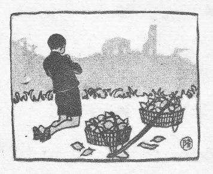
［＃改ページ］
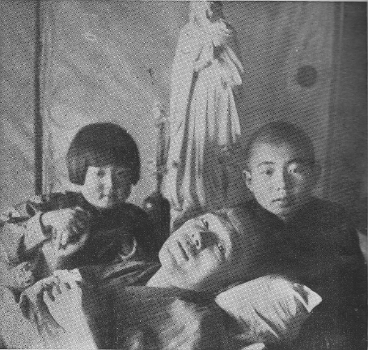
永井博士一家（写真右より誠一さん、博士、茅野さん）
［＃改ページ］
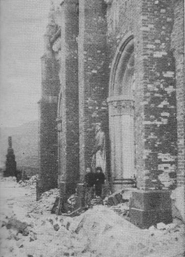
浦上天主堂の廃墟にたつ誠一、茅野兄弟。
［＃改ページ］
うとうとしていたら、いつの間に遊びから帰ってきたのか、カヤノが冷たいほほを私のほほにくっつけ、しばらくしてから、
「ああ、……お父さんのにおい……」
と言った。
この子を残して――この世をやがて私は去らねばならぬのか！
母のにおいを忘れたゆえ、せめて父のにおいなりとも、と恋しがり、私の眠りを見定めてこっそり近寄るおさな心のいじらしさ。戦の火に母を奪われ、父の命はようやく取り止めたものの、それさえ間もなく失わねばならぬ運命をこの子は知っているのであろうか？
枯木すら倒るるまでは、その幹のうつろに小鳥をやどらせ、雨風をしのがせるという。重くなりゆく病の床に、まったく身動きもままならぬ寝たきりの私であっても、まだ息だけでも通っておれば、この幼子にとっては、寄るべき大木のかげと頼まれているのであろう。けれども、私の体がとうとうこの世から消えた日、この子は墓から帰ってきて、この部屋のどこに座り、誰に向かって、何を訴えるのであろうか？
――私の布団を押し入れから引きずり出し、まだ残っている父のにおいの中に顔をうずめ、まだ生え変わらぬ奥歯をかみしめ、泣きじゃくりながら、いつしか父と母と共に遊ぶ夢のわが家に帰りゆくのであろうか？ 夕日がかっと差しこんで、だだっ広くなったその日のこの部屋のひっそりした有様が目に見えるようだ。私のおらなくなった日を思えば、なかなか死にきれないという気にもなる。せめて、この子がモンペつりのボタンをひとりではめることのできるようになるまで……なりとも――。
――こんなむごい親子の運命は早くから予想されておらぬでもなかった。私が大学を出て放射線医学を専門に選び、ラジウムやレントゲン線などを用いる研究に身を入れようと心に決めたとき、実はすでに多くの先輩の学者がこの研究で毎日とりあつかう放射線によって五体をおかされ、ついに科学の犠牲となって生命をおとしたことを詳しく知っていたので、あるいは私もまた同じ運命におちいるのではあるまいか、という予感があったのである。しかしながら、それは決定的な運命ではなかった。放射線災害予防については、それらの貴い先輩の犠牲のおかげで、次第に有効な方法が考え出されていたし、従事する私らも十分な注意をしていたからである。だが、第一次欧州戦争のとき、多くのレントゲン医学者が余りに多くの患者を診療しなければならなかったため、注意をしたにもかかわらず、身体の堪え得る量以上の放射線を受けて、ついにおかされ、死んだ先例があるので、私も何かの事情のため、そんな目にあわぬともかぎらぬと考えた次第であった。というのは、その当時満州事変が始まったばかりで、どうやら日本が大戦争をひき起こしそうな気配がうかがわれたからであった。それで、この子の母と結婚するときには、前もってこのことを詳しく話し、万事承諾の上で家庭をもった。
ハンブルグには放射線の犠牲となり、職務による原子病患者として死んだ百余名の世界中の学者の記念碑があって、その人びとの名は真理探求の道に倒れた科学の殉教者として刻んである。しかし、私は命の惜しい普通の人間だから、とにかく死ぬより生きているほうが好きだった。早死にしてその学者たちの仲間に加えられるよりは、一日でも長く生きて、好きな研究を一つでも多く仕上げ、家庭的には孫の顔をみて、わが後をつぐものは大丈夫だと安心をして、よいおじいさんとして、ゆっくり大往生をとげたいと願っていた。そのうえ、原子放射線によってひき起こされる原子病の苦しみは、並み大抵の生やさしいものではなく、生身をちぎるばかりの苦痛があるものと知っていては、なるべくならば、かかりたくないと思うのが人情であろう。だから私は、原子病の予防にはずいぶんと細かく気をつかった。生まれつき気の弱い、びくびくもので、学校時代には落ちるのが怖さに鉄棒体操のできないほどの私であった。原子病を怖がったのは言うまでもない。
このごろではレントゲン器械も良くなって、発生管球は金属でよく包まれ、小さな窓から必要なレントゲン線の束だけが出るようになっているので、あまり危なくないが、昔は私たちは裸管球を使ったもので、それらは四方へ向かって恐ろしいレントゲン線を放射していた。この放射線は物体に当たると、さらに二次放射線を発生散乱する。この散乱線がまたも物体に当たると、そこからさらに放射線を出す。このために放射線室の中は管球の焦点から出てくる主放射線のほかに、おびただしい二次散乱線が前後左右から、あたかも十字砲火のように、飛び交う。
この放射線の細胞破壊力はすばらしいもので、一定量ではガンのような病気を治すが、量を過ごすと健康な部分を病気に変えてしまう。こうして起こる原子病を防ぐために、私たちはいつも放射線の量を正確に測定していて、決して量を過ごさぬように気をつけている。だから今では、専門家が取りあつかうかぎり、放射線によって患者に迷惑をかけることはない。
放射線は鉛のような重い金属でさえぎられるから、防護の目的にはよく鉛が用いられる。患者の体に放射するときには必要以外の部分を鉛板や含鉛ゴム板で被い隠す。放射線室の壁や床や天井に鉛板を張って外部へ漏れないようにする。配電盤の前に鉛ガラスの衝立を置いて技師を護る。患者の傍らについて診療する医師は含鉛ゴム製の前掛、手袋、長靴や鉛ガラス製の眼鏡でものものしく身を護る。しかし、こんな鉛の甲を身につけていては重くて身動きもできないから、完全防衛というわけにはゆかず、背中のほうとか、二の腕とか、もものあたりは普通裸で出ている。管球から出る主放射線のほうはそれで十分防げるが、後ろのほうや横から来る二次散乱線を防ぐことはできない。この二次散乱線の量は主放射線の量に比べたらいちじるしく少ないものではあるけれども、長い時間には大した量に達するわけである。たとい一日の勤務中に受ける放射線量は少なくても、毎日々々連続働いて五年、十年とたつうちには、肉体の組織がいつしか破壊されて、ここに職業病としての原子病が起こってくる。それは皮膚ガン、悪性貧血、慢性白血病、肺硬化、不妊などである。
それでは長年月放射線室に勤めると必ず原子病にかかるかというと、そうでなくて、ある一定量以下の放射線を受けるにすぎないならば、いくら長く勤めても安全である。その一定量とは、毎日連続で、一日量〇・二レントゲン単位である。レントゲン単位というのはレントゲン線の量を測る単位である。欧米諸国では人道上から、この規約はよく守られ、放射線室勤務員は一日七時間以下の勤務、一週五日出勤、一年に一か月以上の転地保養を法律によって行なわされ、さらに特別危険手当とか、年金とかの優遇が与えられている。日本でも労働基準法の中に取り入れられてきたが、実行されるまでには、まだまだの感がせぬでもない。
ところで私の場合であるが、なんと言っても戦争はあらゆる無理を国民一同とひとしく私にも強いた。この無理は避けられる筋のものではなかったし、国民の一人として喜んで果たさねばならぬ義務でもあった。私は、無理は百も承知の上で、全身全霊の力の限りを尽くして、その日その日の無理をとにかく片づけていった。――教室の若い助手は相ついで戦場へ出ていって、ついに帰らず、教室の人手は足りなくなって、私は数人分の役を引き受けることになった。大学の講義、臨時医学専門部の講義、いわゆる科学動員令による研究、結核予防のための工場、学校、同業組合などの集団検診、レントゲン診断、治療、ラジウム治療など、それはどの一つをあげてみても一人の医師、一人の教授に精一杯の役割となるものである。それを一人で果たせと命じられたのだから大変だ。精神ははやれども肉体は弱し、どうしても完全にはゆかなかった。その当時教室の看護婦たちが数え歌をつくって、私に聞かせてくれた。その中にこんなのがあった。――「三ツとせ。見れば見るほど好か男、部長先生の寝ぼけ面」……眠り不足と過労でやつれていた私を痛切に表現している。また「六ツとせ。無理な講義をせにゃならぬ、あれでは学生がかわいそう」……じっくり落ち着いた十分な講義をすることのできなかった私を適切に批判している。それから「十とせ。十でとうとうくたばった、ぜんそくおやじの冬支度」……とうとうくたばって、体の精力を使い果たし、たびたび倒れた私だった。その数え歌を勤務が終わって、器械の掃除をしながら皆で合唱していた。「五ツとせ。いつも真っ暗な暗室で、かわいいあの子の声がする」とか、「八ツとせ。やぼな前掛けちょいとしめて、間接撮影のお嬢さん」とか、私たちの教室生活がそのまま歌われているのだった。
私が数人分の役を引き受けさせられた一方、おし寄せる患者の群はまた激しく増してきた。あの徴用工という一団の人びと、それは商業や事務に半生を送ったひ弱い肉体の持ち主であったのに、にわかに工場に引っ張り出されて重労働をさせられたのだから、過労と生活の低下とで病人が相ついであらわれ、そのほか、一般の市民もまた過労と生活難とから特に胸の病におかされる者が多くなり、また放射線のすぐれた力が一般市民の常識となったために利用者もおのずから増す、といったふうに、いろいろの事情から、私の教室を訪れる患者はおびただしいもので、出勤してみると朝早くから患者待合室や受付は、息も苦しくなるほどの雑踏であった。それを見ると、うんざりする気持ちと、さあやるぞという気持ちとが同時に起こるのだった。その患者さんをどうにか満足のゆくように診療してあげ、終わると、ああ、午後になると押しよせてくる集団間接撮影の数百人の団体！ それが終わるころには日が暮れていて、一服の茶を看護婦長から振る舞われて、元気を一新し、自分の研究室にしずかに入るのであった。夜更けてわが家に帰る途で足が動かなくなり、べたりと路の上に座ったことが幾度あったろう。時には案じて迎えに来てくれた妻の肩にすがって、ようやく家の門にたどりつくこともあった。卵酒があたためてあったりした。……私は幸福だった。
――そんな調子だったから、私の放射線室に実際に働いていた時間は毎日十時間に達していたろう。一日〇・二レントゲン単位をずいぶん上回る放射線が私の肉体に射ちこまれていた。このまま数年続けるなら、恐ろしい原子病の起こることは、日食を予報するのと同じ確実さで、わかっていた。わかっていながら、相変わらず私は働き続けた。それは、国家が私に働くことを求めていたからでもあり、私に代わってその任に当たる専門家がほかになかったからでもあったが、私には、どんなにへとへとに弱り疲れていても、患者さんの顔を見ると診療せずにはおられぬ本能があった。いや、私はとにかく放射線の研究が好きで好きでたまらなかったからのことである。
予期され、予防に心を用いられていた原子病は、ついに私の肉体に慢性骨髄性白血病および悪性貧血の形であらわれてきた。それは研究を始めてから満十三年の後のことであり、戦時中の無理な勤務満五年の後のことであった。決定的な診断がつき、まあ、あと三年は生きているだろうとの予後判定だった。ぜひもない次第であった。
私は信頼する妻にその夜すぐ、すべてを知らせた。じいっと聞いていた妻は波立つ胸をおさえ、
「生きるも死ぬも神さまのみ栄えのためにネ」
と言ってくれた。
二人の幼子の行末について相談をしたら、
「あなたが命をかけて研究なさったお仕事ですから、きっと子供たちもお志をついでくれるでしょう」
と言った。
その言葉に私はすっかり落ち着きを取り戻した。これなら後に心をのこすこともなく安心して、倒れるまで研究室に勤められるぞ。
あくる日から、さらに新しい元気を奮い起こして教室で働いた。まったく別人のように仕事に身が入った。捨て身でゆくとはこのことであったろうか？ 戦争はいよいよ激しくなり、あいつぐ空襲に大学病院は患者で満員となった。私の教室はまるで野戦病院のようだった。夕方になると私の脚の力が抜け、筋肉がひきつったりして、階段を昇るときなどには看護婦さんから押し上げてもらった。それを見て笑う者は私自身だけであった。学生さんが走り寄って来て、私の手にもった参考書を代わりに運んでくれたりした。みんなにいたわられながら、私は楽しく忙しく立ち働いていた。
――そこへ不意に落ちてきたのが原子爆弾であった。ピカッと光ったのをラジウム室で私は見た。その瞬間、私の現在が吹き飛ばされたばかりでなく、過去も滅ぼされ、未来も壊されてしまった。見ている目の前でわが愛する大学は、わが愛する学生もろとも一団の炎となっていった。わが亡きあとの子供を頼んでおいた妻は、バケツに軽い骨となってわが家の焼け跡から拾われねばならなかった。台所で死んでいた。私自身は慢性の原子病の上にさらに原子爆弾による急性原子病が加わり、右半身の負傷とともに、予定よりも早く動けない体となってしまった。――ありがたいことには、たまたま三日前に、山のばあさんの家へ行かせた二人の子供が無傷で助かっていた。
それまで十数年かかって研究してきた多くの資料――戦争が終わったらまとめて論文として発表する予定だった、たくさんのレントゲン実験写真、ノート、図表などは、研究室の窓から赤黒い炎となってしばらく噴き出ていたが、明くる朝見たときには、すでに普通の灰となってしまっていた。私が、地獄へでも突き落とされたかのような絶望を抱いたのも無理のない次第であった。――が、その絶望は半日も続かなかった。私はまったく新しい希望をたちまち抱くことができたからであった。その新しい希望とは、……目の前にあらわれたまったく新しい病気、これまでどこにもなかった病気、古今東西の学者がまだみたことのない病気、私たちが医学史上最上の観察者として選ばれた病気――原子爆弾症！ この新しい病気を研究しよう！ そう心に決めた時、それまで暗く圧しつぶされていた心は、明るい希望と勇気にみちみちた。私の科学者魂は奮い立った。私の血まみれな、繃帯に包まれた五体は精気を取り戻した。私は焼け石に腰をおろしていたその場から文字どおり立ち上がった。
おびただしい原子爆弾症患者、さまざまな症状、相次ぐ死亡者、それをなんとかして助けようと考えに考えを重ねる苦悩。医学者の生きがいをこの時ほどいたく感じたことはなかった。杖を頼りに不自由な負傷の身をもって、山越え野行き川を渡り、患者を訪ねてまわったあの二か月。それもついに私自身が原子爆弾症のため危篤におちいり、そのため打ち切らねばならなかった。
回復期の私の病床に伝わったのは、原子野住居ができるかどうか？ という人びとの不安に満ちたささやきであった。どこからともなく、七十五年間は人の住めぬは言うまでもなく、草木も生えぬといううわさが伝わっていた。私は寝たまま考え続けていた。爆弾から降った放射能粒子や、地面の原子が得た放射能がそんなに長い期間残っていようとは、どうしても考えられなかった。そんな放射能はすみやかに減ってゆくはずである。理論上一応はそう考えられても、何しろ最初の出来事だから、実際に験べてみなければ確かなことは言えない。一日も早く実験測定をしてみたい。みたいとあせるけれども、情けないことには器械が一つ残らずなくなってしまっていた。たとい器械はなくとも験べることは験べねばならぬ。私は爆心地にころがるガラスを拾って験べた。ガラスは放射線を長く受けると色が変わるものである。私は牛乳びんがうす紫色に変わっているのをいくつか見つけた。それは爆心地に近いほどいちじるしかった。そこで爆心地にはかなり強い残存放射能があったことを推しはかることができた。また、みみず・あり等の土の中に住む小動物に気をつけた。土に大量の放射能があれば、こんな小動物は死滅してあらわれないはずである。しかるに、爆心地で七週間後にたくさんのありの列が見つかった。三か月後には、みみずもたくさん見つかった。こんな小動物が生きているのだから、大きな人間の生命をおびやかすほどの放射能はまずあるまい、と推論した。原子野には復員者たちが焼け跡をわずかに片づけ、小屋を建てて住み始めていた。私はその小屋を訪ねて、健康状態を調べた。爆裂後二週間くらいはたしかに危険であったが、その後はあまりひどい影響はなさそうであった。こんなふうにして私はできるだけのことをした。しかし、なんと言ってもありがたかったのは、他の大学から同学の学者が器械をそろえて研究に来てくださったことであった。石川博士や篠原教授のおかげで正確な結果が得られた。二人の幼子もたびたびの採血試験などに痛みをこらえて、貴い材料を提供してくれた。――こうして原子野住居差し支えなしとの結論はいち早く得られ、私たちは郊外の村々に避難している市民に向かい、すみやかに焼け跡に帰り再建にとりかかりなさい、と呼びかけることができたのだった。
こうして当面の二つの仕事は片づいた。熱はまだ続いていて、三十八度を越す日も多かったが、とにかく杖を頼りに歩くことはできた。そのころ私は、戦火に滅び亡き数に入った教え子と妻をとむらうため、半年の喪に服して、髪を刈らず、ひげをそらず、入浴せずにいたため、多くの知人から変わり者と思われていた。私の小屋は妻の骨を拾った焼け跡に建ててもらっていた。そこからは大学の焼け跡が目近に見えていた。私は朝夕そちらを向いて祈りをささげて暮らした。骨を捜して歩く老人のすがたが稀々に見えるだけだった。
大学の仮学舎が大村市で開かれた。汽車で二時間かかる出勤は、辛かった。講義中に脂汗が出るし、息は切れるし、元気な大声は出ないし、学生に迷惑をかけるばかりだった。講義中に四度も五度も腰をおろして、息をととのえねばならなかった。それはひっそりとした講義だった。わずかな生き残り学生――どこかに生々しい傷あとを見せている。話す私の顔の右半分も傷あとだらけだ。しかし、ほんとうに心にしみる授業だった。多くの同僚は講壇で死に、多くの学生もまたノートをとりつつ果てた後、こうして私たちだけが、真理探究の道をさらに続けてゆく……。それを想うと、おろそかならぬ使命がお互いに感じられるのであった。
講義がすんで医局へ帰ると、全身に張りつめていた力がすうっと抜け、楽屋に放り出された浄瑠璃人形みたいに、腰掛けの上にのびてしまう私だった。
そうこうして講義や教授会に出ているうち、しだいに体の力がなくなり、とうとう七月の末、長崎駅で倒れてしまった。夕方ようやく小屋にたどり着いたが、それっきり床に就く身となり果ててしまった。それから今日まで病勢は順々に進んできた。今では原稿用紙をとってもらうことさえいちいち人に頼まねばならぬほどだ。それで患者を診るどころか、顕微鏡をのぞく力もない。しかし幸いなことには、私の研究したい原子病そのものが私の肉体にある。日々の経過、自覚症と病変の関係、治療法の効果判定など、じっくり落ち着いて観察したり考えたりできるので、とても都合がよい。内科の影浦教授の指導で朝長医学士が治療に当たっているが、患者私について、医学者私が主治医と大いに論戦をたたかわすのは真に愉快である。さらに病理解剖学の若原助教授が加わる場合には、一層真剣味を帯びてくる。私の血液標本はあらゆる種類の正常および病的血球を含んでいるので、ちかごろ教科書のない学生諸君にとってはすばらしい教材となる。朝長君は採血のとき余分に多くの標本を作って、それを愛する学生諸君に差し上げている。寝ていて講義に出られない私にとっては、そのことがせめてもの学生諸君に対するおわびとなるであろう。
私の皮膚は白血病に特有の青さで、見ただけでも気味がわるい。脚も腕も細るだけ細り、これ以上は骨が邪魔になってやせられないところまで来ているから、もうやせる心配はない。若くしてバスケット・ボールの選手をしていたころには、身長一七一センチ、体重七一キロという好い体格だったので、久しぶりに会う友だちは一目見ただけで涙ぐむ。
全身やせ細っていて、腹だけがこれ以上は皮が伸びないところまで膨れている。なんのことはない。腸満にかかった青がえるだ。腹のまわりが、へその高さで九一センチ、ちょうど妊娠十か月目のおなかの大きさにひとしい。これは脾臓が途方もなく大きくなっているからである。脾臓はもともと手のひらより小さいくらいのものなのだが、私の腹の左半分全部を占領してまだ余り、へそを越して右のほうへかなりのさばり出ている。この張り切れるだけ張り切った脾臓に、外から何かちょっと一打ち当てると、たちまち裂けて、内出血を起こして死なねばならぬ。まるでダイナマイトを腹の中に入れているようなもので、油断ができない。
子供は親にすがりつきたがるものである。学校から帰れば、タダイマッ、と叫んで飛びつきたかろう。しかし私に飛びついたら、脾臓はたちどころにパンクするに決まっている。それで子供たちは主治医の朝長先生から「お父さんのそばへ寄ってはいけません！」と言いつけられているのだ。子供たちはこの言いつけをよく守り、そばへ寄りたい、じゃれつきたい、すがりつきたい、甘えたい想いをおさえ、いつも少し離れて私と話をする。私のほうも、世の常の父親のように、この子を抱き上げたり、ひっくり返して押さえつけたり、くすぐったり、キャッキャッ言わせて遊びたい。けれどもそんなふうにしている子供がいつしか慣れて、こちらがうっかり眠っている時などに、いきなりドンと飛びついたり、寝床のすぐ傍らでふざけ合って私の上に倒れかかって来ぬともかぎらない。それを防ぐために私は心をことさら冷たくして、寝床のまわりに本を積み、薬壜を並べて、愛情を隔てるバリケードを築いている。
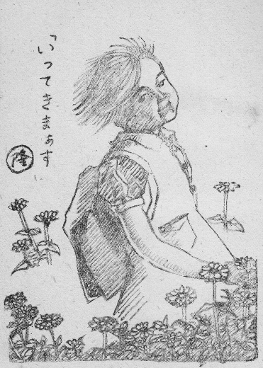
――カヤノが遊びから帰ってきて、私の眠っているのを見定め、こっそり近寄って、お父さんのにおいを求めたのは、こんなわけがあるからであった。
私も……わが子のにおいを久しぶりに味わった。白血病といえば、なんだか真っ白い血が冷たく流れているような気がするが、その私の血管の中に久しぶりに熱いものが流れ始めた。私はぐっとこの子を抱きしめたくなった。親犬と子犬とが遊ぶように、どこでも構わず、かみついたり、なめたり、たたき合ったり、ゆさぶったり、思い切り体と体とぶっつけ合って、時のたつのを忘れてみたい。そうしたらこの子はうれしさに息もつまり、笑いが重なって身もだえするであろう。脾臓が裂けるなら裂けてもいいじゃないか。この子がほんのひと時でも私から父の愛を受けて悦んでくれたら……。だが、私にはそれが許されない。一月でも、一日でも、一時間でも長く生きていて、この子の孤児となる時をさきに延ばさねばならぬ。一分でも一秒でも死期を遅らしていただいて、この子のさみしがる時期を縮めてやらねばならぬ。
胸の中に桜島の煙のように時々ぐぐっと噴き上がる愛情をおさえ、私はことさら冷たく子供を遠ざけておらねばならぬ。ぐっとおさえると、かえって大きくたぎって噴き上げる、まくらもとの火鉢の湯沸しの湯気にも似た骨肉の情である。もう一人の親――母がおりさえすれば、この子も父をあきらめて、その母にとりすがるのであろうに、その母は亡く、母のにおいの残った遺品もなく、面影をしのぶ写真さえ焼けてしまって一枚もない。
私がやっぱり眠ったふりをしていると、カヤノは落ち着いて、ほほをくっつけている。ほほは段々あたたかくなった。
何か人に知られたくない小さな宝物をこっそり楽しむように、カヤノは小声で、
「お父さん」
と言った。
それは私を呼んでいるのではなく、この子の小さな胸におしこめられていた思いがかすかに漏れたのであった。
［＃改ページ］
――主与えたまい、主取りたもう。主のみ名はつねに賛美せられよ！
元来私は、無より神の愛によって創造された。母の胎内に宿った時が私の創造であった。その時以来今日に至るまで、私の得たすべての物は皆神の与えたもうたところである。健康、才能、地位、財産、家族など、すべて元来私の所有ではなかった。だから、いつどこで、これらのものを取り上げなさっても、私が損をするわけでもなく、また得をするわけでもない。別に嘆き悲しむに当たらない。御摂理のままにお任せするのが当たりまえである。そして御摂理はつねに感謝し賛美せらるるべきものである。なぜなら、神は愛する一人の人間を創造になった、それが私であったからである。神は私を愛したくて、私を創造なさった、神に悪意の創造はない。神は常に私を愛し、絶えず私の幸福を願っておられる。与えたものが愛の思し召しによるものであると同じく、取りたもうのも愛の思し召しによる。私の身のまわりに起こるすべては、神の愛の摂理のあらわれである。それゆえ私はいかなる目にあおうとも、神の御名を賛美せずにはおられない。
原子爆弾がはじけたとき、この浦上のカトリック信者一万のうち八千人が死んだ。ここには純心と常清の二つの女学校があった。いずれも女子修道会の経営するところで、校長以下教員は修道女がほとんどすべてであった。純心の生徒たちは、工場に動員されていたが、燃ゆる火の中で賛美歌をうたいつつ、次々と息絶え、灰になっていった。それはまったく古の神の祭壇にけがれなき小羊をささげ燃やして神の御意を安らげた燔祭さながらであった。ああ、第二次世界大戦の最後の日、長崎浦上の聖地に燃やされた大いなる燔祭よ！
燔祭の炎のなかにうたいつつ
白百合少女燃えにけるかも
白百合少女燃えにけるかも
常清女学校のほうも同じ最期だった。ここでは二十七人の修道女教員が天に召された。その夜私は教室の小笹君たちを患者の手当てに出したが、その話によると、女学校から東のほう二百メートルの川端に真夜中幾人かの合唱するラテン語の賛美歌が続いたり絶えたり聞こえていたそうである。夜が明けてみたら修道女がひとかたまりになって、冷たくなっていた。……ゆうべの賛美歌はこの修道女たちが歌っていたのであろうか？ それとも霊魂を迎えに降りてきた天使の群が歌っていたのではなかったろうか？ ……そう思わずにはおられない、きよらかな死に顔が並んでいた。
それを見た生き残りの私たちは、原子爆弾は決して天罰ではなく、何か深いもくろみを持つ御摂理のあらわれにちがいないと思った。
――私も同じ日、無一物の弱り果てた者となって、幼い二人の子をかかえて焼け跡に立たされたのだが、これは何かは知らねど、愛の摂理のあらわれである、と信じて疑わなかった。
それから三年の月日をしのいで今日に至ったが、あの日の私の信仰が正しかったことが次第次第に証明されてくる。
原子爆弾によって私の正しい道をはばんでいた邪魔が取り除かれ、私は真の幸福を味わうことができるようになったのである。
やがて私を訪れる「死」もまた、限りなき愛にまします神の私に対する最大の愛の贈り物であろう。それゆえ、死の前に通らねばならぬ心の悩みも体の苦しみも、神のみ栄えのあらわれるために必要なものとして、悦んでこれを受けようと思っている。死とは霊魂が肉身を離れることだ。蝉が抜け殼を地面において明るい空にとび立つようなものだ。地にすむ幼虫は日の光あふるる大地を知らぬから、抜け殻を見て悲しんだり嘆いたり恐れたりしているだろうが、空に向かって飛んだ蝉は声高らかに歌っている。……
［＃改ページ］
妻が亡くなった当時、私がなにかにつけて不自由な暮らしを続けているのを見るに見かね、後妻をもらえ、とすすめる友人が多く、また具体的な縁談も、いくつか持ちこまれた。まだそのころは病人といっても講義や診療のできる私だったから、再縁をすすめられるだけの力はもっていた。また実際の話が、妻にぽっくり先立たれ、二人の幼子をかかえ、敗戦後のすさまじい世相の中で、忙しい公職についたまま生き抜くことは並々ならず難しかった。生活という面から考えると後妻をもらう必要がたしかにあった。浦上一帯の掘っ立て小屋には、未亡人や孤児が小屋ごとにいた。彼らは神の祝福をうけ、それぞれ良縁を結んで新しい家庭をつくった。再婚するとたちまち表情は明るくなり、男女おのおのその所を得て生活がひきしまり、いちじるしく再建の力を増すものだ。傍らから見ていてそれがよくわかった。
いい人があったら来ていただこうかな、と私は時に思わぬでもなかった。日常生活において私は、困るとか、不自由とかの程度ではなく、まったく途方に暮れることがしばしばあった。それ配給、それ申告書提出、それ共同作業、などと触れが回ってくるたびに、隣近所の小母さん方に代理をお願いせねばならぬ心苦しさ。近所の再婚した人の子供がきちんとした身なりをしているのに比べて、わが子の着たきりの一枚の夏衣のむさくるしさを見るにつけ、新しいお母さんを迎えて世話をしてもらうのが善いのではなかろうかと、深く考えこむこともあった。いわしの配給があっても、そこらに生えた菜っ葉をちぎってきてのお汁に決まっていて、これをぬた、すのもの、てんぷらなどに料理して食わせたら、どんなに悦ぶだろう、と思うばかり。お芋もちょっと手を入れて、茶巾しぼりにして与えれば、いいおやつになるんだがと、これまた思うばかり。焼け跡から徳利を拾ってそれに何か布を巻きつけ、ササノ、ササノと呼んで、だっこしたり、おんぶしたり独り遊んでいるカヤノを見ると、この小屋に女手がありさえすれば、人形らしい人形を作ってくれるだろうに……。カヤノも妹のササノが生きていたら、こんなにさみしがりもすまいものを、と私さえ過ぎた日を想い出しては、くちびるをかむのみであった。夕べともなれば、ちらりほらり小屋小屋にたき火が燃え、そこらに女のはしゃいだ声もまじり、子供たちの声も浮き立ち、がやがや談笑するのが聞こえた。そこには涙の谷が希望の丘に変わろうとする空気があった。ひとり私の小屋だけが夕飯がすむとすぐ火を消し、病人の私の両わきに幼い子がぴったりくっついて、早く夜があければいいのにと、寒々と目をつむっているのであった。口にこそ出さねど、お母さんがいてくれたら……と、この子たちは絶えず思っているにちがいなかった。
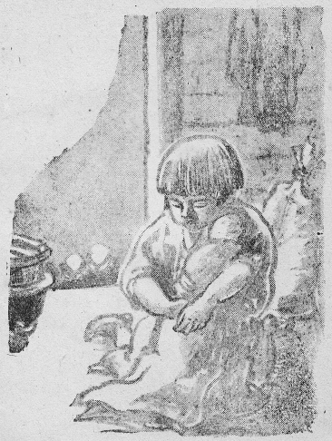
だが、ほんとうの縁談がもちこまれると、すぐにむかついて、私はどうしても耳を傾ける気になれなかった。それは熱病のとき、果物がほしいと思うくせに、いざ目の前に出されると、とたんに食欲がなくなって、見るのもいやだと突き返すのに似ていた。
再婚はいいことである、再婚しないですめば、しないほうがより一層いいが、再婚しなかったために都合の悪いことをひき起こしそうだったら、したらいい、とパウロも教えた。この世で夫婦だったものが来世でもまた夫婦になるのではない。夫婦の関係は一方の死によって断たれるのである。次々と夫に死に別れ、ついに七人の男と死に別れ、のちに自分も死んだ女は、死んでから次に復活したとき、いったいだれの妻になるのか？ とサドカイ人が問うたのに答えてイエズスは「現世の子らは嫁いだり、めとったりするけれども、来世では、嫁ぐこともめとることもない」と言った。
子供の養育のために再婚なさい、とは多くの友の言葉であった。心のやさしい女性であれば、たとえ継母であっても、真の母と同じ情愛をそそいでくれるであろう。私の病気が絶望的な性質のものであるにしても、まだ少なくとも三年ばかりは大丈夫だろうから、今のうちに新しい家庭を固め、継母と子を仲よくするようにしつけてゆけば、たとえ私がおらなくなっても、そのまま親しみ合いむつみ合いつつ末ながく暮らしてゆくのではあるまいか？ 世間にはそんなふうにしてうまくいった例もたくさんある。
子供のためにも、私のためにもいろいろの点から考えてみて、再婚するほうが得策のように思われた。私が妻を迎えるということは万事便利な結果を約束していた。けれども、その妻が同時に子供たちの母となる、という点に私の心はひっかかるのであった。子供の目先の便宜主義をさておき、遠い将来のことを考えるとき、私はどうしても子供たちに新しい母を迎える気になれなかった、そのわけは――
私はこの二人の子にのこす遺産を何ひとつ持っていない。私には財産が無い、いま住んでいる家も土地もばあさんの所有を借りている。家具も着物も焼けてしまった。わずかばかりの貯金は使い果たした。私の死んだあと、二人の孤児がもつものは――思い出である。思い出だけである。父の思い出と母の思い出と。
美しい思い出をのこしてやりたい。潔い思い出をのこしてやりたい。ゆかしい思い出をのこしてやりたい。ひとりの父と、ひとりの母――この純粋な親の思い出を……。
［＃改ページ］
この子は孤児となったら、だれの手もとに引き取られて育てていただくであろうか？ ――
こんな幼い子供だから、人さまの世話にならないで生きてゆけぬことは確かである。今でもたくさんの友人が後は見てくれると申し出ているし、叔父さんたちも、引き受けるから大丈夫だと約束してくれている。しかし今時の財産は来年どうなるものやら当てにならず、親切なお方だって、ぽっくり明日死なぬともかぎらず、安心して頼めるものはまずないというのが本当であろう。このことは、一瞬にして妻と財産を失っている私がいちばんよく知っている。
けれども、とにかくどこかで、だれかに、なんとか養っていただくことになるだろう。ひょっとすると孤児収容所に入れられるかもしれない。
孤児収容所……ああ、私は寒気がしてきた。あんな所へこの子が入れられたら……。
全国の孤児収容所の子供の逃亡率は半分以上だとのことである。半分以上の子供たちは、逃げ出しては捕らえられ、入れられてはまた飛び出すという。ラジオや新聞で、「浮浪児狩り」という言葉が用いられた。狩るとは野獣に対して用いる言葉である。いつの日か私の誠一やカヤノが野獣扱いを受けるのであろうか？ ――ああ！ そして逃亡を防ぐため裸にしておかれるのであろうか？ 鉄格子をはめた部屋に入れられるのだろうか？ ああ「収容」という言葉の冷たさよ。
もしあの日、妻のみならず、私も原子の火に滅びていたなら、おそらく今ごろは誠一もカヤノもその収容所に収容されていることだったろう。そして二人とも度々逃げ出しては野獣として狩られていることだったろう。思っただけでも五体が震う。
孤児収容所はこの原子野の小屋に比べたら設備もいいし、職員もそろっており、給与も上等である。寝室にはベッドが並び、自習室・娯楽室・講堂・炊事場・食堂・浴場と近代的な水洗便所・日光浴室・病室までそろっている。私たちの小屋の二畳ひと間がこれらすべてを兼ねているのに比べたら、まるで御殿だ。服はララから贈られた純綿・純毛、生意気なと思わせるほどのモダンな仕立て。食物だって配給のほかにララからいただく肉のかん詰・ジャムのかん詰・おやつにはチョコレートなんか出て。（ララ〈LALA〉＝アジア救済連盟）
それにもかかわらず、逃げ出す孤児――なぜだろう？ しかも頭のいい、しっかり者が飛び出すとは？
孤児に言わせると、収容所に残っている奴は、意気地なしだよ、怠け者だよ、ぼんやりなんだよ、とさげすむ。
収容所では、しつけがやかましくてうるさいが、街へとび出せば好き勝手なことができるからであろうか？ ――街の孤児仲間にはそれぞれ仁義があって、したい放題のことができないのは彼らのほうがよく知っている。それでは、収容所にいたって一銭の貯えもできないが、街へ出れば靴みがき、たばこ巻きなど、働けば働くほど面白いようにお金が手に入るからであろうか？ ――それもある。しかしこのごろのヤミ相場では、いくらもうけても食うに追われ、兄貴分に上前をはねられ、商売のなかった仲間に食物を買って分けてやったりすれば、懐に金のたまらぬことは、これまた本人たちのほうが経験を通してよく承知している。それならば、彼らの中に先天性の放浪癖があるのか？ ――そうではない。爆弾が落ちる直前までは、それぞれ両親のあたたかい愛情にはぐくまれ、坊ちゃん、嬢ちゃんと呼ばれていた良家の子であったのだ。親孝行な、素直な子であった。
収容所の設備はいい、給与はいい、子供も悪い子ではない、とすると、それでは職員が悪いというのか？ ――
孤児の世話をすすんでしようと志すほどの人に悪人のいるはずがない。よほど愛情のふかい人でなければ、どこのだれの子ともわからぬ子供たちを親身になって育てる気になれるものではない。停車場や市場から連れられて収容所へ来る孤児はごみ箱のにおいを放っている。あかと土と汗と雨とで、がばがばになった服、それにシラミがうごめき、ノミが跳び、やぶれからむき出した皮膚にはぼりぼり引っかいた爪あとに血がにじみ、いちめんのカイセンがさ。こんなよごれた肉の塊をいきなりかわいがるのだから大した勇気である。いや勇気では足らぬ。この子がただいとしくて、と抱きかかえる愛情である。職員はこの大きな愛情をもっているのだ。髪を刈り、湯に入れ、薬をつけ、新しい服を着替えさせ、あたたかい飲み物を与え、おいしい食事をさせ、清潔な部屋に入れ、さてそれから夜となく昼となく傍らに付ききりで、どうしたら幸福にしてやれるか、しっかりとした一人前の大人に育て上げられるか、とさまざまに心を砕く。
こう考えてくると、悪い人も悪い所もないことになる。それだのに、好い孤児が逃げ出すのはなぜだろう？
その原因の一つとして、私は職員があまりに善良でありすぎて、ゆきすぎた愛情をほどこすことを考えたい。
職員は考える。孤児がもっとも強く求めているものはなんであろうか？ もっとも飢えているものはなんであろうか？ いつもいつも胸に抱いているものはなんであろうか？ われわれはまず孤児に何を与えねばならぬか？ 孤児に対してどんな態度をとるべきか？ この収容所をいかなる形において運営するか？
――孤児がいつもいつも胸に抱いているのは父母の面影であろう。孤児がもっとも飢えているのは、父母の愛であろう。孤児がもっとも強く求めているのは父であり、母であるにちがいない。然らば、われわれが孤児に与えねばならぬものは父母への愛情であることは明らかである。孤児に対してわれわれは、父として、また母として接すべきである。つまりこの収容所を一つの大きな家庭として運営すればいいわけである。収容所長がお父さんになり、所長の妻君がお母さんになり、職員がそれぞれ年齢に応じて、叔父さん、叔母さん、兄さん、姉さんになる。そうして、このたくさんの孤児は、ほんとうの兄弟であり、姉妹である。そう決める。そのとおりに呼ばせる。そうさせる。そうしているうちに慣れて、そう思いこんでしまうであろう。それでうまくいく。……
職員はこう考えるのが普通である。
……なるほど。孤児が、父母の愛に飢えているのは、事実である。それはおそらく食欲よりも強い本能であろう。お父さんが生きていたら……お母さんさえ生き残っていてくれたら……といつもいつもあの子たちは思っている。ほかの物は何もいらぬ。どんなに貧乏でもいい、たとえ大けがで身動きできぬ状態になっていてもいい、お父さんがいたら……お母さんがいっしょにいたら……と思わぬ日はない。だからその求めているところを満足させてやりたい、とまず考えるのは自然の人情である。そこまでは無理がない。虚偽がない。
けれども、そこから一歩出て、職員が、父となり母となり、兄となり姉となるところに虚偽ができてくる。無理がある。この虚偽こそ真に大きな問題なのである。
一度死んだ父母を再びこの世に連れ戻すことができないことはわかりきっている。それとまったく同じく、父の愛、母の愛と本質的にまったく同じ愛を再び与えることはできない。絶対にできないのである。――私がカヤノにそそぐ父の愛は、私とカヤノとの間にのみ存在する独特の愛であって、唯一絶対である。けっして普遍的一般的の愛ではない。誠一にそそがれていた私の妻の母としての愛は、神からこの子の母、この母と子に限定された二人の間を結ぶ愛であって、他の何人とも切り替えることできない。親子の間の愛情はまったく個人的であって、けっして社会的集団ではなく、普遍的妥当性をもつ愛ではない。すでに私が誠一にそそぐ愛とカヤノにそそぐ愛とは同じではなく、誠一が父私に抱く愛と母に寄せる愛とは異なっているのである。
私は大学生の時に母に死に別れ、初めて母と私との間の特異な深さを知った。その胎内に宿ったという一つの事実だけでも、すでに動かすことのできぬ、移すことのできぬ、ただ一本のつながりであることを証明する。ましてその血によって大きくなり、その生命をおびやかして出産し、その肉体の胸のふくらみから漏れる液を吸うて太り、そのこまやかな心遣いによって大きく育ってきた私である。この私とこの母との間に交わされた愛が、どこにでも通用するはずがなく、代用愛で間に合うわけがない。
私が
私はすでにイク子、ササノの二人の子を天国に送った。ありし日のあどけなさは今だに目から消えない。白百合の花に埋まって送られていったあの子。……あの子がその死病にかかったとき、他人の子の同じ病気に向かっては落ち着いて診察もし治療もする医者でありながら、わが子の小鼻を動かしてあえぐ様を見ては聴診器も注射器も手につかず、ただおろおろとするばかりの一途の私の感情であった。
妻なきあとの誠一とカヤノの振る舞いをじっと見つめていると、わが子が母を慕う心は、私が妻をしのぶ心の幾層倍も深いことが悟られた。やっぱり血のつながりはすべてに勝って強いのだ。夫婦は血でつながっていないから、親子の愛にはかなわない。
私もやがてこの子を残して別れねばならぬ。それを思うと、心臓をねじ切られるようだ。
私はこのように父母を失い、子を失い、今また二人の幼子を孤児として浮き世に残す身の上になったから、あらゆる角度から父と子、母と子の間の愛の本質を知ることができた。それは同じ血の相引く力であり、それは異なる血を相斥ける力である。いかなる他の力をもってしても影響をおよぼすことのできない血の本能である。それは完全に固定したものであり、同時にいちじるしく排他的なものである。
「父」の本質を深く見極めねばならぬ。
「母」の本質を正しく見定めねばならぬ。
「父」とは他の何人にもその地位を譲られぬ尊厳な一つの権威である。この権威は神よりその男に与えられたものである。
「母」とは他の何人たりとも代行することのできない絶対唯一の愛である。この愛は神よりその女に与えられた。
収容所の職員は、この父母の天与の権威と愛とをまず承認していただきたい。この天与の権威と愛とを持たぬ他人が、しかもその父母の委任もなく、勝手に父となり母となるのは虚偽でなくてなんであろう？ 無理というよりほかないではないか？ さらに極言するを許されるならば「無礼である」と草葉のかげでつぶやく声がありそうである。
――今多くの収容所では、職員はこの天与の父母愛を人工的に作り出すことができると軽率に思いこみ、いい気になって自分で勝手に父となり、母となり、兄となり姉となり、孤児に強いて、「お父さん」「お母さん」と呼ばせ、さまざまの技巧を尽くして「父母の位」を横領しようと企んでいる。
わが腹を痛めたこともないくせに、何が「お母さん」だ！
病気にかかっている子を看護婦にまかせたきりで、夜は所長室でぐっすり眠って、何が「お父さん」だ！
これは神聖な「父母」を侵すものである。絶対な「父の愛」「母の愛」を汚すものである。そして結局、子供たちに虚偽の手本を示すことになるものである。
真の父と代用の父とはちがう。所長さんがいかにじたばた努めても、どんなに学問があっても、どんなに愛情が深くても、孤児の真の父にはなれない、およびもしない。
腹を痛めた実の母の愛と、母性的愛情とはちがう。収容所の「いわゆるお母さん」がおやつにチョコレートをくれるのよりも、むかしの母が「今日は何もないのヨ」と言いながら、抱っこしてほほずりしてくれた思い出のほうがうれしいのだ。
職員が技巧を使うから、孤児もまねして技巧をつかう。甘えたふりをすればかわいがってもらえることぐらい孤児はすぐ考えつく。かわいがってもらって一つでもビスケットを多く手に入れたら万歳だ。「お父さん」と呼べと言われるから、口さきで「お父さん」と呼ぶのだ。それでうまくいっていると思う大人のあさましさ。口で呼んでも、心の底から父と思って取りすがっているものか！ 「お母さん」と呼べ、とのことだから、そのとおり呼ぶだけのこと。その小さな胸の中には、そう呼んでいる短い時の間にも、亡き母の面影が薄れずに笑っているのだ。むしろ、ただ一つしかない宝石のような「お母さん」の呼び名を、あかの他人にみだりに使わせられて、むかついている。また、ぼくのお父さんなら彼のお父さんではないはずなのに、この収容所の百人余りの子供たちの「共通のお父さん」とは、こいつはいい加減なものではないか？ 「お父さん」「おとうちゃん」「おとと」「ちゃん」「ちゃっちゃ」――この呼び声！ 「お母さん」「おかあちゃん」「おかか」「おっかあ」「かっか」この呼び声！
土地がちがい、家庭が異なれば、それぞれ呼び方は変わるけれども、この「お父さん」「お母さん」の二つの声こそは、孤児にとっては、いちばん大切な秘宝である。この宝は他のだれにも奪われたくない。
子は親に対する操をもっている。この操は他のだれにも汚されたくない。
その宝を横取りする職員。その操をむざんにも踏みにじる職員。
純情な子であれば、泣こうではないか？ 親孝行な子であれば、むかつこうではないか？
そして、この宝を守り、操を護るために、収容所を飛び出す気になろうではないか？
いい子が逃げる。しっかり者が逃げる。それが当たりまえだ。
――しかも、職員は初めから悪意がない。ひたすら孤児の幸福を願ってやっていることなのである。こんなにまで努めても孤児が逃げ出すからには、まだわれわれの「父となり」「母となり」かたが足りないからであろうと考えて、さらに一層強く「お父さん」「お母さん」ぶりを発揮する。――
――善意の人のつくり出す一つの悲劇というべきか？
これは孤児収容所だけに限った話ではない。
私が亡くなった後、誠一とカヤノとはどなたかの手もとに引き取られるであろう。いささか礼を失するかもしれぬが、私はしっかりと、ここに言い残しておく。
「何人といえどもこの子の前に、お父さん、お母さんと称えて立ちあらわれることを許さぬ！」
［＃改ページ］
私がまだ講義に出かけていたころ、二年ばかりも前のことだが、停車場や市場でよくこんな声を聞いた。――
「ちょいと、荷物に気をつけな。そら、きょろきょろ目玉を光らして孤児が来よるぞ」
また、
「まあ、ごらん、あの子を。あれ、きっと親なし子よ。かわいそうにねえ。さあ一郎、この五十銭を持っていってあの子におやり……。ちょっと。あのね、手や着物に触らぬように、離れていて渡すんですよ。シラミがうつるから――」
また、
「ちぇっ、せっかく早起きして作ったお弁当が臭くなってらあ。夏分はいたむのが早うござんすなあ。――捨てるのも、もったいないし。――おお、ちょうどよい。あすこに孤児がいるよ。おうい、そこの子供。おうい。お前だ、そのボロを着た。――うん、こっちへ来い。小父さんがご馳走をやるから ……」
また、
「おい、お前、ちょっと来い。お前の生まれはどこだい？ ――ふうん。親は無いのかい？ ――ふうん。おやじはいつ死んだのかい？ ――ふうん。爆弾でかい？ ――ふうん。頭か足か何か残っとったかい？ ――ふうん。おふくろさんもいっしょに殺されたのかい？ ――なに、後で？ ほう――すると何かい、焼き殺されたんだな？ ――そうかい。骨が見つかったのかい？ ――ふうん。それでお前はその骨をどうしたんだ？ ――埋めたのか？ 自分ひとりで？ ――ふうん。よくまあお前だけが生き残ったもんだね。――オヤ。発車時刻だ。さあ立ち上がるとしようか。いや、いい暇つぶしじゃった」
また、
「やいっ、つかまえたぞ。今度こそ逃がさぬぞ。世話をやかせる奴じゃ。――なに？ 痛い？ 痛いがどうした？ 痛いのが当たりまえだ。そのくらいの口先ではだまされんぞ。手をゆるめたら逃げる気だろう。じたばたすると縛り上げるぞ。――おい、なぜ収容所を逃げ出したんだ？ あれだけよく言って聞かせておいたのに……なんだって？ 妹に会いたかったから？ ……妹っていうと？ ふうん。あの子か。あれは女子の収容所へちゃんと入れてあるんだ。お前が何も心配することはない。――妹、妹と言うが、妹に会いたいばかりじゃあるまい。女子収容所へ男の子が行ってはいかん。ああん。――子供のくせに、もう色気なんか出しやがって……」
また、
「あんたっ、親切もいいけれど、度を越すと後が大迷惑よ。そりゃあネ、信心参りの旅先のことですから、宿無しっ子に、お弁当の残りやお金の十円もやるのは結構でございます。だけど、名刺まで渡して、困ったらいつでも訪ねておいで、とまでおっしゃらなくてもいいでしょう？ もし本当に訪ねて来られたらいかがなさる？ お客様のたくさんいらっしゃってる店先へ、あのボロボロの子供がやって来たら……。どこの子かもわからないのに……」
――ああ！
わが亡きあと、誠一やカヤノが、こんな言葉を吐きかけられるのか？ ――
［＃改ページ］
長崎市の東の端にカトリックの修道院がある。「聖母の騎士」の名をもつフランシスコ会で、ポーランド人が創設した。ポーランド人――それは今、国家的孤児である。しかし、この修道士たちはいつも涙を越えた微笑をたたえている。この安らかな微笑こそは、孤児の顔に浮かばせたい微笑である。この微笑のなぞを解けば孤児問題を解くかぎが得られる。……私はそう思った。
アシジの聖者フランシスコのたどった道をさながら行く修士の一団――清貧・貞潔・従順の誓願を忠実にまもり、犠牲と愛の実行に明け暮れ、祈りと労働の生活を送る、沈黙の一団。うす板の垣に隔てて世を知らず、世に知られず、ひたすら神の教えを実行している汚れなき一団。聖母マリアにすべてを献げ、マリアのために生き、マリアと共に生き、マリアによりて生き、マリアの中に生きている一団。雨が降れば神に感謝し、空が晴れると神に感謝し、風が吹けば神に感謝し、顔洗う水が凍っては神に感謝する人びと。元気がよいとて神を賛美し、虫歯が痛むとて神を賛美し、けがをして神を賛美する詩人たち。ご馳走をいただけば喜び、腹がへれば喜び、かぼちゃを盗まれると喜ぶ。子供からじゃれつかれて微笑み、若者から石を投げられては微笑み、老人から怒鳴られて微笑む。
この修道院は、いち早く孤児の世話をやり始めた。しかもなんの準備もなく、予算もなく、設備もなくやり始めたのである。というのは、この修道院は戦争末期に建物を軍に接収され、修士たちは阿蘇山へ軟禁されていたため、敗戦後、建物を返され、修士も山から帰っては来たものの、さんざんな目にあって、修道院自体の整備態勢がととのわなかったからである。そのごたごたしている最中へ、山伏が二人の孤児を連れて来た。原子野の防空壕に生きていた魚屋の子だった。その次には警官が連れて来た。修道院はまるでお客さまを迎えたような喜びに湧き立った。市民の間にも、警察のほうでも、この修道院が愛の使徒の集団であることを常識としているのである。修士たちは世の中にこんな子供たちがたくさんいることを知り、やがてみずから探しに出始めた。そうして見つけ次第連れて来た。
もともと清貧をむねとする修道院のこととて、部屋にせよ、食糧にせよ、余裕のあるはずはなく、予算はまったくなかった。けれども修士たちは無計画に孤児を引き入れた。修士たちは部屋をあけて、物置の片すみなどに移った。断食をして、余ったパンを孤児の食糧にあてた。会計は聖母マリアに委任した。
たまたま私はそのころ敗戦後の自己のあり方を見極めるため、その修道院にこもっていた。原子爆弾によって一切を失ったが、イエズス・キリストの、
「天地は過ぎん。されど
の一言に光明を見いだし、その永遠のことばを聞こうとして、ここに参っていたのであった。同じ境遇の田川君、深堀君もこもっていた。三人はよく一室に集まり、大いに想を練ったものである。その結果、私の信仰生活はおもむろに洗練されてきた。
ポーランド人の修士は、日本の事情にうといところがあるので、孤児園の運営について、そこに来ている私たち三人によく意見を求めた。私たちは大いに研究し、かつ実際に当たってみた。そして多くの失敗もしでかした。が、とにかくこれはやらねばならぬ仕事ではあったし、難しいには難しいが、なんとか理想的な運営法が見いだされそうな予感がした。私たちが練り上げた構想と同じものが、アメリカにもあることを後になって知った。それはフラガナン神父の「少年の町」であった。深堀君はとうとう孤児への愛着に動かされ、孤児園長になった。私は衛生顧問として、田川君は教育顧問として、いっしょに働いた。
その間に得たものは貴い経験となった。孤児問題は常識で考えるほど単純なものではないことを知った。
［＃改ページ］
戦争孤児をどうするか？ ――この問題の応急的な解決は一応ついたように見えている。公立の孤児収容所が各県にできたし、私立のものも設備を次第にととのえたので、街にさまよっている孤児はひととおり収容された。いま街頭にさまよっているのは、収容所を勝手に逃げ出した孤児たちであって、役人の口をかりて言えば、役所の責任ではない――。
役所仕事といえば、そもそも収容所を作った目的はなんであったろうか？ ――純粋に孤児の側に立って考え、孤児の真の幸福のみを目的として建てられたのは、いくらあるのだろうか？ ちらりと耳に入る話では、孤児は社会悪の苗だから、早くひと所に取り入れておかないと、後日に禍根を残すおそれがある、との社会治安のために建てられたのがあるようだ。不良になっているにちがいないと、最初から教護院の職員出身者を収容所員として任用しているのがあり、鉄格子を窓にはめたのがあるようだ。また、つてを求めて職員を志願する者の中には、退職老朽教員や、病弱な者や生活力薄弱など、現代の激しい生存競争社会の敗北者とみとめられるのがあり、孤児に寄生して失業苦をまぬかれようとしているらしい。あるいは「少年の町」が時代の人気を得たのを見て、名を売るために始める企業家もないではない模様である。
そんな風評がまんざらうそでなかった証拠は次々にあらわれてきた。それをいちいちここに挙げたくはない。ただ一つ、島の収容所から逃げた子が海を泳いで渡る途中についにおぼれ死んだ事実を知ってもらえばよかろう。
命をかけてまでも逃げ出したくならせたのは、なんなのであろうか？ 収容所でこんな目にあうよりは、たとえ死んでもいいから、この海を渡ってみようと、おさな心に決めて浜に立ったときのその孤児になって考えてみよう。
少年に悪人はいない。……このフラガン神父の言葉をまず正しいものと認めていただきたい。
ある程度の経験を積んだ職員は、いやそうじゃない、近ごろの孤児はなかなかすれてるから、うっかりすると大人がだまされて、ひどい目にあう、と言うかもしれない。
しかし、それは大人が悪くて、素直な孤児を悪くしてしまったのだ。孤児をだましたから、孤児も真似して人をだますことを覚えたのである。
罪なくして配所の月を眺めたい！ と願った幸福な詩人のいたのは昔のことだが、それに共感を起こした閑人は近代にも少なくなかった。しかし、ほんとうにそんな目にあわせられたら彼らはのんきな詩や歌を作ったであろうか？ ――孤児はまさしく罪なくして配所の月を眺めさせられている。
孤児はこの戦争になんの責任があろう？ この敗戦になんの責任があろう？ このインフレーションになんの責任があろう？ ――彼らになんら罪はない。しかるに戦争の犠牲は彼らに求められた。敗戦の悲惨は彼らの上に集められた。インフレーションの恐ろしい結果はまず彼らをおびやかした。彼らが弱いゆえに、彼らが悪知恵をもたぬがゆえに、彼らが独りぼっちであるがゆえに……。
日本は殺生は嫌いだと言ってねずみも殺さぬ人が多いが、死線にさまよう人間の子をかえりみる人はそれより多かったであろうか？ 生き物をかわいがると言って、ねこを二匹も飼っている人は多いが、その人びとは、ねこよりさきに人間の子の宿無しを思ったであろうか？ ……ねずみよりも手軽にあつかわれる人の子の生命、ねこよりもかわいがられぬ人の子？ ――ただ両親がおらぬというだけのことで……。
そして住むに家なく街にさまよえば、目ざわりになるとて嫌われ、やっかい者だとて冷たい目で見られ、働けば、ヤミ行為だとて追われ、あげくの果ては、ならず者仲間と共に狩られ、捕らえられ、取り調べられ、いやおうなしに収容所へ入れられる。
――これではいくら素直な少年であっても、純真な少女であっても、悪くならずにはおられぬではないか？
さて、世間の人は、孤児は収容所へ入れるなり、身寄りが引き取るなりして、とにかく街頭から姿を消してくれさえすれば、孤児問題は解決がついたものと思いこんでいる。孤児に住む家を与え、着物を着せ、ひもじくないだけの食べ物をあてがってやれば、もうそれで充分だ、幸福になっただろう、感謝し奮発して偉い者になってくれるだろう、などと、ごく簡単に考えている。一度か二度収容所を訪れた人はさらにその感を深くして安心をする。
収容所へ行ってみると、孤児たちはまことに朗らかにやっている。明るい窓、掃除のゆきとどいた廊下、整頓された室内、たくさんの寄贈品――本・おもちゃ・額・花瓶など。きちんとした服装、血色のいい顔、要領のいい応答。どこかでオルガンに合わせてかわいい合唱。また工作をしているらしい金づちの音。炊事場には、ララのかん詰が並び、肉スープのたぎるいい香りがこもっている。野球が終わって、浴場でシャワーをかぶる子供たちの高いはしゃぎ声。……子供は歌う。子供は笑う。まったく幸福そうだ。――
しかし、ながく孤児を観察しているうちに気のつく一つのことがある。それは――孤児は大っぴらに泣かぬ。孤児は泣かない。めったに泣かない。泣くときは物かげで、めそめそと泣く。しおしおと泣く。声を殺して、しゃくり泣く。せつなげに、くるしげに、くやしげに、胸をしぼるがごとく、あたりに気がねしいしい、遠く届かぬ人に訴えて泣く。
あの子に家のあったころ、母が身近にいたころ、あんな泣き方をしたであろうか？ ――いいえ。むかし幸福であったころは、人目になるべくつく所で、だれにはばかる気もなく、全力をあげて一途に泣いたものだ。手ばなしで、天真らんまんに大きな口をあけて、声を限りに、地だんだ踏んで泣いたものだ。時々声をおさめ、だれか止めに来てくれはすまいか、慰めてくれないだろうか、お母さんならいちばんよいが、などと考えて耳をすまし、だれも出て来そうな気配がないと、さらに一層効果があるように奮発して、声がかれるまで泣きわめいたものである。
子供が泣くのは、恐ろしいから、痛いから、悲しいから、怒ったから、というような理由のためではない。泣き出す動機はそんなものであっても、いざ泣き出してしまえばもうそんなことは意識になく、ただ泣くために泣く。泣くという動作そのものによって一種の満足を感ずるのであろう。あの年ごろでは肉体的にも精神的にも成長がいちじるしく、新陳代謝が盛んであるから、肉体的にも精神的にも何かもやもやしたものがかたまってくる。そいつが思いきり泣くことによって、ぱあっと発散してしまうのだ。うっとうしい蒸し暑さが夕立の大騒ぎで、きれいさっぱり吹き飛んでしまうようなものだ。子供の泣くのは弱虫だからではなく、健康な生理的な一つの要求なのである。しかも、泣けばあとでお母さんから優しく慰めていただける期待がある。――
しかるに孤児は、あとで優しく涙をふき、手のひらの土を洗い、耳に口を寄せて温かい言葉をかけ、キャンデーを一つ握らせてくれるお母さんはなし、泣けば年上の仲間から笑われ、先生から怒鳴られ、「いわゆるお父さん」から説教を食わねばならぬから、とにかく泣きたいのを我慢して奥歯をかみしめている。孤児がいよいよ泣かねばならぬ羽目になったときは、これはもう子供の天真らんまんな生理的な泣き方ではない。暗い底なし沼にひきずりこまれるような絶望の泣き方である。
心の底から信頼する相手を持たぬ者がこの泣き方をする。虚偽の壁で取り囲まれた者の泣き方、氷山にとじこめられた小船の上にある人の泣き声！
心の底まで打ち明ける気になるだけの相手があれば、何を好んでこんなみじめな泣き方をしようか？ まわりに立っている大人のうちに真実なものは一人でもいるのか？ ――「お父さん」……あの眼鏡越しに見る癖の所長さんの符号にすぎない。「お母さん」……ねこなで声の奥さんの名前だろう。ぼくのお父さんでもないのに「お父さん」と呼ばせる、お母さんでもないのに「お母さん」ですよ、と、くどくど教えこむ。第一それからして虚偽ではないか？ 一つのうそをつく人が、それ以外はみな事実だということが言えようか？ そうしておいて、ぼくには、うそをつくな、ごまかすなと、しつこく言いきかす。
所長さんなら所長さんでいいじゃないか？ 奥さんなら奥さんで構わぬのじゃないか？ ――所長さんではかわいがることができないのか？ 奥さんでは慰めることができないのか？ ――お芝居はやめてちょうだい！
真実！
これこそ孤児が求めているもの。これこそまず第一に孤児に与うべきもの。
家も着物も白いご飯もチョコレートも第二だ。
居心地のよい家にも、純毛の洋服も、ライスカレーにも未練を残さず、孤児が収容所を飛び出すのは、そこに「真実」が見いだせなかったからである。孤児はよく「青空天国」という言葉をつかう。青空のもとに、気の合った孤児が二、三人、天真らんまんな共同生活を行なっているのは、まことに天国さながらであろう。そこには虚偽がない。むき出しの「真実」がある。孤児の心を知る者は孤児のみであろう。同じさみしさ、同じくやしさ、同じ苦しさ、同じ悲しさの中に生きてこそ、相共に同じ幸福を味わうことができる。共に笑い、共に泣き、共に恐れ、共に働く、その真実の生活は、収容所の見掛けばかりの愉快な生活を送っている孤児にとって、限りない魅力を感じさせるものにちがいない。さればこそ、島の収容所から死の逃亡をあえてした子もあったのだ。その子は浪の上に力尽きつつ、青空をあおいで水の下に沈んでいったろう。
孤児をして「真実」に生きさせよ。苦しくても、さみしくても、悲しくても、その苦しさ、さみしさ、悲しさをごまかさず、そのままひたすら真実に生きさせよ。
孤児はついに真実孤児なのだ。
孤児として生きるのが真実の道なのだ。
美しい思い出の父母を胸に抱いて、この真実の道をゆくことが孤児の幸福である。
孤児の幸福は、親のある子の幸福とは違うところに見いだされるものである。それを見いだして、それを得る道へ導くのが、孤児を世話する人びとのつとめである。
親のない子に親のある子の真似をさせ、虚偽の幸福を強いて与えようとするのは、軽率であり、不親切であり、ついに残酷である。どんなに役者をそろえて芝居をしたり、ごまかしたり、つくろったりしたって、父母のひざもとで暮らす幸福は、孤児の手に再び戻ってくることはない。飛んで逃げた青い鳥だ。わが家にも見つからぬ青い鳥だ。チルチルとミチルならぬ誠一とカヤノとが、青い鳥を再び見つけるのは、天国の花園であろうか？
孤児はこの青い鳥をこの世ではあきらめている。せっかくあきらめているのに、おせっかいな大人が白い鳥の羽に青絵具を塗って、さあ青い鳥がいたよ、と渡すから、いざこざが起こるのだ。孤児はその真実の白い鳥をもらえば満足するのである。白い鳥なら白いままに与えればよい。
所長は所長としての愛を、所長の奥さんは奥さんらしい愛を、先生は先生の愛を、まかないさんはまかないさんの愛を、叔父さんは叔父相応の愛を、叔母さんは叔母さんだけの愛を――つまり真実の愛を、真実の立場から孤児に与えてくださればいいのである。惜しみなく、かえりみなく、つくろわず飾らず注いでくださればいいのである。各人が孤児を「己の如く愛し」てくだされば、それがいちばん善いのである。なんの工夫も技巧も仮装もいらぬ。ただ、自分が他人からしてほしいと思うとおり、孤児にしてやればいい。
［＃改ページ］
孤児を「己の如く愛し」ている収容所職員の多いことを私は知っている。それにもかかわらず収容所の成績が上がらないことも私は知っている。なぜうまくゆかぬのであろうか？ ――
フラナガン神父の「少年の町」がうまくいっていることを皆が知っている。なぜうまくいっているのであろうか？ ――
人の守るべき最大のおきてについてイエズスは、
「なんじ心を尽くし、霊を尽くし、意を尽くして、主たるなんじの神を愛すべし。これは最大なる第一のおきてなり。第二もまたこれに似たり。なんじの近き者を己の如く愛すべし」
と言った。
この第一のおきてこそは、私などが常に実行しなければならないものである。第一のおきてを守らずに、第二のおきてを正しく実行することはできない。第一のおきてを忠実に守るならば、第二のおきてはおのずから実行せずにはおられなくなるものである。
ところが、主たる神を愛さなくても、隣人を愛することができる、と思っている社会事業家が多い。主たる神を愛するどころか、忘れてしまっている者、あるいはさらに積極的に神の実在を否定している者で、人類愛に基づく事業を企てている。神の恵みがなくても、人間の力だけで、りっぱに愛の事業ができると思いこんでいる。限りなき愛の泉から神を追放し、そのあとに己が座り、惜しみなく愛をそそぐぞと、うぬぼれているのだ。それほど思いきって神を否定しないまでも、まあ孤児の世話ぐらいは神さまの加勢を頼まなくても自分の力だけでやれる、と思っている人も多い。そんな人のそんな事業は、うまくゆかぬものである。
なぜうまくいかないか？ ――これを科学的に説明することはできない。それは超自然的なお恵みの関係するところであるから。
しかし、事実はそうなっているのである。宗教のない収容所、無神論者の経営する収容所は、ついに失敗している。
フラナガン神父の少年の町。そこではこの最大なる第一、第二のおきてが忠実に実行されている。主たる神を愛し、すべての栄光と賛美を神に帰しつつ、彼らはその町を経営している。フラナガン神父の天職は天たる神を愛し、神のみ栄えのために働くことであった。この天職を全うするために、たまたま手をつけたのが孤児の世話であった。孤児の世話は彼においては祈りであった。孤児を愛するがゆえに神を愛するのではなく、神を愛するがゆえに孤児を愛するのであった。あの町ではフラナガンという一人の男が孤児の世話をしているのではない。神を愛し、神を賛美する心が孤児の世話をしている。――
フラナガン神父は世間の賞賛は己の受ける筋合いのものでなく、そっくりそのまま神にささげられるものであることを知っている。町の少年からささげられる感謝も己が受けるわけがないことを知っていて、改めて神にささげさせている。
神父はこの町によって、神の愛のこまやかで、しかも大きいことを目に見せた。そうしておいて、人もまた神に向かい、こまやかで、しかも大きな愛をささげねばならぬことを教える。少年たちは素直に、心を尽くし、霊を尽くし、意を尽くして神を愛すべきことを悟る。
神父はこの町の経営にあたって、多くの善良な隣人が、少年をわが子のごとく思い、ひとかたならぬ愛をそそいでくれている事実を見せる。そうしておいて、町の少年市民にもまた互いに、近い者を己のごとく愛することを教える。少年は素直にうなずく。
こうしてこの少年の町は、神を中心とする愛の町となった。超自然の愛と自然の愛、天国の愛と地上の愛とが快い調和をする楽園となった。
この愛の町は、愛の本源たる神の御意にかない、神は限りないお恵みを下してお報いになる。
上から下にそそぐ愛、下から上にささげる愛、神と少年との間に愛の流れは直結する。孤児が神と愛において直結するとき、はじめて孤児は親なし子ではなくなってくる。――天にましますわれらの父であるからである。
「われなんじらを孤児として遺さじ」
このイエズスの力強い約束が想起される。
孤児の救われるのは、この境地である。孤児が手に入れる幸福の白い鳥とは、この「神の愛」である。このほかに真実孤児の幸福はない。
神の限りない愛の光は孤児の上にゆたかに注いでいる。フラナガン神父はただ横にあって、悪い風が吹きつけぬよう、気を配っている。
［＃改ページ］
イエズス・キリストの言葉を聞こう。
「五羽のすずめは四銭にて売るに非ずや、しかるにその一羽も、神のみ前に、忘れらるることなし。なんじらの髪の毛すら皆算えられたり、ゆえに恐るることなかれ、なんじらは多くのすずめにまされり」
この言葉を聞いて安心しない者があろうか？ 神にお委せしておきさえすれば、誠一もカヤノも絶対に大丈夫である。
一羽一銭の値打ちもないすずめ、なんの役にも立たぬちっぽけなすずめ、――屋根からこぼれる木の葉のように庭におりると、きょろきょろと右を見、左をうかがい、ガラス戸越しに私から見られているとも知らず、人間もとんびもおらぬと安心をし、ひとつ大あくびをしてから、ぴょんぴょんとむしろのほうへ行き、干芋をつつき、三ツつついては首をあげて空を警戒し、また二口ばかり芋をつつき、雲の影がすうっと通りかかったのにおびえてパッと飛び立ち、口にくわえた干芋をあたら落とし、仲間と羽をそろえてあわただしく畑の上をひとまわりして帰ってくると、物干ざおに三羽並んでとまり、チュンチュン鳴き交わし、三羽すり寄り、大きいほうが負けて横へ横へとおされるうち、一羽はチュンと叫んで逃げ、残る二羽が仲よくあくびをし、片脚をのばして羽をつくろい、やがて目をつむってしゃがみこむと、ぷっくら膨れてうたたねする。――この一羽のすずめの、足の動きひとつ羽の動きひとつ見逃さず、神はじいっと愛の目をそそいで守っていらっしゃるのだ。お忘れになることはないのだ。なぜなら、その一羽を神はみずから愛によって創造なさったからである。つまり真の大親だからなのである。
すずめさえ、このとおり、ましてすずめにまさる人の子の誠一とカヤノ、なんでお忘れになることがあろう？ 片時といえども神の愛の目が外れることがあろうか？
この子の髪の毛の数さえ神は知っている。それもそのはず、神がその髪の毛の一本一本、愛をこめて創造なさったのだから……。誠一みずからでさえ、己が頭に幾千幾百本の髪が生えているか知らない。それは誠一が髪の毛を創ったのではないから……。父の私もその数を知らぬ。私は創造者ではなかったから……。スェーターの編み目の数を覚えている人は、愛をこめてそのスェーターを編んだ女性だけである。着ている子は知らず、もらった父も知らない。――このスェーターに対して、いちばん深い愛着を感じている人はだれであろうか？ 作ってくださいと頼んだ者か？ 着ている者か？ それとも作った者か？ ――作った人である。
誠一をいちばん愛しているのはだれであろうか？ 誠一自身であろうか？ 父の私であろうか？ それとも創造者たる神であろうか？
誠一みずから己が頭の髪の毛の数を知らず。私に至っては髪どころか、虫歯の数さえ調べておらぬ。誠一を愛していると口にも言い心にも思っている私が、その実このような不完全な愛しかもっていない。地上においてこの子をいちばん愛している私でさえ、このくらいのところ――。それに比べて、髪の毛の一本一本にまで忘れ得ぬ愛情をつないでいる神のその愛のこまやかさ、深さ、大きさ！ まことにわが亡きあと、安心してお委せできるのは神――天にましますわれらの父である。そして神は、改めて私どもからお任せしたりお願いしたりするまでもなく、初めからこの子を抱いているのである。
かえりみれば、この子に絶対に頼まれているつもりの私みずからが、その実頼みにならぬ人間ではないか？ 私みずからすでに天なる父に依り頼まずには一秒たりとも生きてゆかれぬ弱い人間ではなかったか？ わが身の健やかであったころ、私の力をもってこの子を養い育てていると思っていたことこそ、そもそも笑止千万であった。私の力で子供が育ったのではなかった。
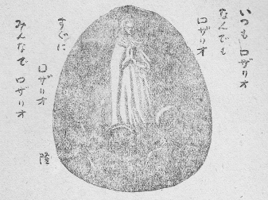
神が私を使って子供を育てなさったのである。私は神の御意のままに、おん手の先に使われる一つの道具にすぎなかった。たとえば、腹痛のとき医者が注射をして苦しみを止める場合、まことの仕事をするのは医者であろうか？ それとも注射器であろうか？ また、水におぼれようとしているのを漁師が綱を投げて救った場合、まことに救ったのは漁師であろうか？ 綱であろうか？ 注射器にお礼を言って、医者には知らぬ顔をしている病人があろうか？ 船に引き上げられると、綱をおしいただいて、生命の恩人と感謝し、漁師には背を向けている遭難者があろうか？ ……もし注射器がこわれたら、医者は内服薬か何か他の手当てを考えて、病人の腹痛を止めてくれる。もし綱がとどかなかったら、漁師は浮き袋でも木箱でもなんでも浮く物を投げてよこすだろう。何も投げる物がなかったら、ざんぶと海にとびこんで、必ず救い上げてくれるにちがいない。たとい注射器はなくても医者さえおれば安心である。たとい綱はなくとも漁師が近くにいさえすれば遭難者は救われる。
私は注射器であった。私がこわれて亡くなっても、私を使っていた神がそのままおられるのだから、何か他の手段でこの子の苦しみを癒してくださる。私は綱にすぎなかった。私がついに水底に沈んでも、私を投げた神がそのままここにおられるのだから、必ずこの子を荒波から救い上げてくださる。――何も心配することはないじゃないか？
「――ゆえに恐るることなかれ」
大保証である。これを聞いてなお、くよくよ、びくびく、あれこれ思う者はあるまい。
「恐れるな、お父さんが守っているよ。案ずるな、お父さんがそばについているよ」神はこうささやく。「誠一はお父さんが創ったかわいい子だからね。カヤノもお父さんの愛によって生まれた子だからね。大丈夫、大丈夫。さあ、朗らかに！」
だが、しかし……
天にまします父とは超自然のもの、宗教上のもの、目に見えぬもの、その声の聞こえぬもの。霊魂上の慰めにこそなれ、現実の生活、さしずめ今日食う物、今日着る物など物質的の必需品を生産し、配給してくれることもできるのかしら？ この問いに対してイエズスははっきり言った。「空の鳥を見よ、彼らはまくことなく、刈ることなく、倉に収むることなきに、なんじらの天父はこれを養いたもう。なんじらはこれよりもはるかに優れるにあらずや。なんじらのうちたれか、思いわずらいて、その生命に一肘でも加うることを得んや。また何とて、衣服のために思いわずらうや。野の百合のいかにして育つかを見よ、働くことなく紡ぐことなし。されどわれなんじらに告ぐ、サロモンでも、その栄華の極みにおいて、この百合の一つほどに装わざりき。今日在りて明日炉に投げ入れられる野の草をさえ、神はかく装わせたまえば、いわんやなんじらをや。信仰薄き者よ、さればなんじらは、われら何を食い何を飲み何を着んかと言いて思いわずらうことなかれ。これ皆異邦人の求むるところにして、なんじらの天父は、これらの物皆なんじらに要あることを知りたまえばなり。ゆえにまず神の国とその義とを求めよ、しからばこれらの物皆なんじらに加えらるべし。されば明日のために思いわずらうことなかれ、明日は明日みずから己のために思いわずらわん。その日はその日の労苦にて足れり」
［＃改ページ］
天下の栄華を一身に集めたというソロモン大王の服は、それこそ人工の美を尽くし粋をこぞったものであったにちがいないが、それでもなお野に咲く百合の花にはおよばなかった。ソロモン大王の美服は人間の力で作り上げたものであり、百合の美しさは神のみ業であった。人間の力の小さいこと！
その小さな力を頼んで、くよくよしている人間、――まさに信仰薄き者である。百合の花ひとつ作ることのできない人間の力をあてにして何になろう？ 人間が食わねば生きてゆけないことも、飲まずにおられぬことも、裸では過ごされぬことも、天なる父はよく知っている。そうして必ず恵んでくださるのだ。
人間はまず神の御国の来たらんことを求めさえすればいいのだ。神の御意が天国に行なわれているごとく地上にも行なわれるように、力を尽くせばいいのだ。神より善しと認められるように行動すれば、それで充分なのだ。そうすれば必ず食う物も飲む物も着る物も皆与えられるのである。
アシジの聖フランシスコを見れば、このイエズスの言葉が正しいことを知る。フランシスコは一切の私有財産を貧しき隣人に分かち与え、無一物となって、ひたすら神を賛美し、神の御国のために祈り、神の愛に酔うて歌い歩いた。そして結局飢えることもなく渇くこともなく、風邪もひかずに、平安な一生を送った。遠い昔のイタリアの聖人を引き合いに出すまでもなく、今わが国においても、どこの修道院に行ってみても、目のあたりその実例に出会うであろう。
現代の悲劇は、神の実在を否定し、神の力を頼まず、人間の力だけで何事も完全になし得ると思いこみ、うぬぼれた人類みずからが創作を演出しているものである。自作自演のこの悲劇は、最初の予想ではハッピーエンドに終わることに決定していたのだが、何しろ出演する人間なるものが、皆が皆天使でなかったため、台本を離れた演技を続出し、劇の筋は思いもよらぬ陰惨乱暴な方向へ転がって、いまでは唯物論者の監督の言葉の指導だけでは統一も調和もとれぬ状態となり、暴力と脅迫と陰謀とをもって無茶苦茶しゃにむに、筋書きを進めるよりほか、収拾の途は無いところまで立ち至っていて、うっかりすると出演の人類一同自殺をせねばならぬかもしれぬという、真に恐るべき破局をもって幕をおろすことになりそうだ。
この破局を避け、ハッピーエンドに終わらせるためには、どうしても唯物論者の監督を免職にせねばならぬ、どうもあの赤い服を着た監督に任せておいては、人類全体がひどい目にあわされそうである。監督の頭が少し足らぬか、少しおかしくなっていると、たとい彼が悪意なくとも、舞台は無茶苦茶になるものだ。赤い服を着た人びとに悪意があって、これほど大規模な人類生体実験をやっていると思いたくない。彼らは人類にユートピアをもたらそうという高い美しい理想を抱いて監督になった。とても熱心だった。とても純情だった。けれども情けないことには、神の実在を否定する、という妙な偏見をもっていた。宇宙を創造した神、自分をも創造したその神を認めない。現に父がありながら、その父を認めず、自分を父無し児だと自慢するとは、頭が少し足りない、と診断せざるを得ない。こんな赤い服を着た人を引っこませ、円満な良識をもつ監督を立てたいものだ。円満な良識をもつ人とは、創られたものと創ったものとの二つの実在を信ずる人である。物質界のみを認める人もだめ、物質界を心の影だなどと否定して霊界のみを認める人もだめ。いずれも円満な良識をもつとは言われない。
主よ主よ、と口でとなえるばかりで、自分では何もしないでいては、食う物も飲む物も着る物も与えられない。主に祈り求めつつ、御意の地上に行なわれるよう、神のみ国が来るように尽くしてこそ、初めて与えられるのである。天に祈ることも必要、人事を尽くすこともまた必要。いずれの一方にかたよってはいけない。人事を尽くして天命を待つ、のではあるまい。神に祈りつつ人事を尽くすべきである。
二人のわが子の生きる道はこれであろう。
［＃改ページ］
神を愛し、神に愛されるにはどうしたらいいのか？ ――甘えなさい。幼児が母に甘えるように甘えなさい！
二人のわが子にこう教えておきたい。
甘える。――これこそ神をまったく愛し、まったく信じ、まったく頼っておらねばできぬ態度ではなかろうか。神にぴったりくっついて初めて甘えることができる。
――そんなに顔をくっつけて、ぐいぐい押したら、くすぐったいじゃないか？ クックックック、まあ、お父さんの着物に鼻汁なんか付けて――。むかしカヤノがよくそんなことをしたものだった。私の心の中に、この子いとしさの情がたぎり湧いた……。
隣の息子なんか、たまたま私のうちへ来ても、大学の先生だと思ってか、遠く離れて、きちんと座り、しゃちこばって、切り口上で、ことさら難しい言葉を並べ立てるので、こちらもいつしか冷淡になり、ああそうですか、いずれ考えておきましょう、などと返事をせざるを得なくなる。
神さまだって天のお父さんなのだから、おそらく似たようなお気持ちだろう。
しゃちこばって、難しい祈り文なんかを形式的にとなえ上げ、いかにも儀式をおごそかに取り行なう一方、儀式がすんで、一歩世間の実業に身を移すと、神のことなんか頭の先から掃き出してしまい、信仰は信仰、商売は商売、公私の別をあきらかにしておかんと……などとうそぶいている信者に向かっては、神は果たしてどんなお気持ちを抱きなさるであろうか？ こんな人たちはとかく、神というとどこか一定の神殿の奥に威張りかえっておさまり、この神殿にお参りに来て頼む者にだけご利益を下し、また格子の奥から鋭い眼玉を光らし、何か人間どもの悪事を見つけたら神罰を加えてやろうとねらっているお方にしてしまっている。それだから、その神さまのみ前に出たときだけ真面目くさって平身低頭し、神殿から遠く離れるか、神殿の戸をとざして、神さまの目がとどかぬと見定めると、勝手きままのことをしでかす。
私たちの父なる神はそんな神さまとは違う。一定の神殿の奥なんかに引きこもってはいない。どこにもあまねく在す。ここにもいなさる。いつでもいなさる。今ここにいなさる。私が亡くなって後もカヤノのすぐそばにいなさる。誠一は神に抱かれている。いつも抱かれている。二人がおばあさんになり、おじいさんになっても抱かれているのである。
神は別に威張ってはいない。競争者がいないから威張る必要はないし、本来威張るお方ではない。
神は人間に天罰を下すためにいるのではない。人間を幸福にするために、人間から目を離さない。
神は人間になにもかも与えたくて、もじもじしている。人間がわざわざお願いしなくても必要なものはどしどしくださっている。そのうえになお甘えてねだれば、いくらでもくださるのである。幼児のように、もらうまでは根気よく、繰り返し繰り返しお願いすれば必ずくださるのだ。
イエズス・キリストは子供好きだった。いつも子供をひざの上に抱き上げてかわいがった。分別盛りの大人たちに向かって、
「すべての幼児のごとく神の国を
と教えた。天国に入るためには、神の国の住民となるためには、皆幼児のようにならねばならないのである。神に愛されるためには分別もいらぬ。多くの知恵もいらぬ。学問もいらぬ。経験もいらぬ、寄付もいらぬ、ただ幼児の天真らんまんさえあればいい。二人の子はまだ幼い。いまはそのまま神の国の市民である。まったく天真らんまんに神を信じ、神を愛している。年齢を重ねてゆくとも、この無邪気な信仰をそのまま持ち続けてゆきさえすればいいのである。
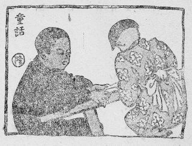
「なんじらの中、たれかその子パンを乞わんに石を与えんや、あるいは魚を乞わんに蛇を与えんや。さればなんじら悪しき者ながらも善き賜物をその子らに与うるを知れば、いわんや天にましますなんじらの父は、己に願う人びとに善き物を賜うべきをや」
だから神に甘えておりさえすれば大丈夫なのである。
［＃改ページ］
この子たちが一生の間いつも神の御意に従い、神の国とその義をまず求めてゆくならば、神は必ずこの子たちの要るだけの物を与えてくださるし、ついには永遠の幸福にまで導いてくださるのだから心配はいらぬ。しかしながら、どうかしたはずみで神の掟に背き、神に背を向けるときがないともかぎらない。そのときはどうなるだろう？ 神もまた見捨てなさるだろうか？
いな。
たといどんな罪を犯しても、神はまだ見捨てなさらぬ。その罪を悔い、心から改め、再び犯すまいと決心し、さらに罪と戦う勇気を求めて、立ち返ってくるまで根気づよく待ちなさるのである。この世の生命の終わる瞬間までは待っていなさる。しかし、ついに後悔せずに死んだら、もう万事だめだ。そうなったら完全に見捨てられた地獄だ。地獄へおちたら、もう救われぬ。地獄とは神と永遠に隔離された霊魂のおる、ひとつの絶望的な実在である。
「なんじらの中たれか、百頭の羊ありてその一頭を失いたらんに、九十九頭を野におきてその失せたるものを見いだすまで尋ねざらんや。さてこれを見いださば、喜びて己が肩に乗せ、家に帰りて朋友隣人を呼び集め、われ失せたりし羊を見いだしたればわれと共に喜べ、と言わん。われなんじらに告ぐ、かくのごとく、改心する一人の罪人のためには、改心を要せざる九十九人の義人のためよりも、天において喜びあるべし」
イスラエルの野にあってイエズスのこの話に耳傾けていた羊飼いたちは、お互いにうなずき合ったことであろう。羊飼いたちは皆、みずから同じ事件を経験していたからである。多くの羊の群れの中にはわがままな行動をとる羊もいて、主なる羊飼いの角笛の導きにそむいて、花にだまされ、水につられ、ついうかうかと危ないいばらのやぶに迷いこむ。善き羊飼いは羊の群れをさしおいて、この迷える羊を救うために危ない道をものともせず、そのあとを追うのである。それを無事救い出したときの羊飼いの喜びは私たちの胸にもひびく。友に向かって、我と共に喜べ、と命令するあたり、イエズスのことばはその情景を伝えて余すところがない。一人の罪人が改心すると、天国では大喜びであるという。
「――この最も小さき者の一人にても、その
たった一人でも地獄へおちるのは、神のお望みにならぬところである。たとい一時の迷いから神の掟を守らず、勝手に悪の道にふみこんでも、神は必ずそれを引き戻し、救い上げ、もとの正しい神の国の市民の群に加えてくださるのである。
［＃改ページ］
「居候三杯目にはそっと出し……」
「ワハッハ、……」
「ワハッハハ……」
教室は若い声が渦をまいて大喜び――
だがその中に三人か四人、うつむいている生徒がいる。――他人に引き取られている孤児。
「みなさん。昨日はお母さんからおやつに何をいただきましたの？」
「ハイッ」
「ハイッ、先生」
「ハイッ」
振り上げる幼い手の林――
だが、その林のところどころは抜けている。うつむいた女の子、男の子。
「なぜ手をあげないの？ ――ああ、そうでしたね、あなたはお母さんが……」
作文の時間――
黒板に大きく書かれた題――「わが家」
せっせと鉛筆を走らせる生徒たち、時々顔を上げて窓の外など眺めやる、その表情の明るさ。楽しいわが家の、今朝の食卓を書いている者もあろう。――二、三人、ただ鉛筆の頭をかじりながら、目を伏せて、まだ紙に一文字も書きつけていない子。
体格検査の日――
「まあ、昨日あれほどやかましく先生が言っておいたではありませんか！ 下着はきれいなのを着ていらっしゃいって……。それなのに、このきたないパンツはどうしたのです？ 衛生ということを忘れましたか？ ――お母さんがいなくたって、だれかお世話してくださるお方がいらっしゃるでしょう？ ――え？ ――なぜお頼みしないの？ ――なぜ黙ってるの？ ――ひねくれてはいけませんョ。――あなたからお頼みしにくいなら、学校から手紙を持たせます――」
遠足――
「……卵焼きもおいしいけど……ぼくは、ほんとうは遠足のときには、梅干しが欲しいんだけど……。お母さんなら知っていたんだけど……」
道で――
「おお、元気でやっとるか？ 学校の帰りかな？ アーン。よしよし。お前はいい家にもらわれて運がよかったぞ。このごろは戦災孤児の取り締まりもなかなかやかましくなってな、見つけ次第収容所へ送致することになっとるんじゃ。――ちっとは昔の仲間に会うことがあるかね。アーン。無いか？ ウン。なるべく交際せぬがいいぞ。今のお家で迷惑されるからな。とにかく大いに勉強したまえ！ そうして一人前になって、ご恩返しせにゃあかんぞ。ウン」
夕方――
「そんなことしたら、帰ってうちのお母ちゃんに言いつけるョ」
生爪をはがした小指には、平常はなんともない物がちょっと触っても、ずきんと痛む。痛みはするけれども、小指はその触った物を恨む筋合いはない。生爪のはげたこと、指の頭を護っていたものが無くなったから、触れば痛むのである。外部の触った物に罪はなく、小指にも落ち度はない。ただ生爪がなくなったという一つの災害の結果として、ちょっと触ると、ずきんと痛む。小指は何物をも恨まず、憎まず、ただ痛みを痛みとして堪えてゆくばかりである。爪のある他の指をうらやんだり、ねたんだりしてはならない。さらに、われのみ災難のため、こうも痛みを受けねばならぬとは、しゃくに触る。他の指九本みな生爪をはがしてくれたらいいのに……などと、のろいを掛けたら、それこそ許されぬ罪をわが犯すこととなる。
――苦しみを体験したことのない人は無邪気である。辛い目に
孤児が真実孤児の道を歩こうとすれば、いやでもおうでも、耳には痛い言葉が入り、目にはつれない仕打ちがうつる。耳をふさぐことはできない、目をとじては歩けない。痛い言葉を聞きながら、つれない仕打ちを見つめながら、ひたすらごまかしのない道を進むよりほかはない。
誠一とカヤノがこの道を行くうちに、いつしか、恨み・憎み・ねたみ・そねみ・のろいの念を抱くようになりはしないだろうか？ ――私が今、心の中にひそかに案じている点はこれである。そうなったら道は横に外れて地獄にいたる――。
どうかこの子たちが自分の受けた苦い杯をそのまま正直に飲みほしてくれればいいが！ 他人の手の中の甘い杯を欲しがらねばいいが！ 甘い杯を飲む他人をねたまず、かえって天真らんまんにその幸福を祝ってくれればいいが！ ――さらに進んで、甘い杯をにっこり笑って飲み干す他人とまったく同じ歓びを抱いて、この苦い杯を飲み干してくれたら、どんなにいいだろう！ その境地にまで上ってくれたら私も満足する。
己が受けた運命の苦杯を飲み干すことは、「あきらめ」という心境に至ればだれにでもできる。しかし大いなる歓びをもって苦杯を飲み干すことは、あきらめだけではできない。これは神の摂理を信じて初めて至り得る心境である。甘い杯も苦い杯もそれぞれ神の愛の摂理によって与えられた最上の賜物である。私に今苦い杯が与えられたのは、今苦い杯こそ私の真の幸福のために必要であるから、神がわざわざ与えたのである。彼に今甘い杯が与えられたのは、今の彼には甘い杯が幸福のために必要だから神がわざわざ与えたのである。神は自分の手で創造した一人一人の人間をつねに真の幸福の状態に保っておこうと思って、その時その場に応じたカクテルを処方なさるのである。薬を調合なさるのである。――私は医者だから処方の苦心をよく知っている。腹の痛む病人には苦いゲンチアナ根末を与える。病人の胃を癒すためには苦い薬を盛らねばならぬ。胃が悪いけれども苦い薬はかわいそうだから、甘いおしるこをうんと食べさせてやろう、とは医者は考えない。風邪を引いてせきが出る、たんが出るという患者には甘いゼネガシロップを与え、せきどめボンボンをなめさす。これはこの患者には今甘いものが必要なのだ。もしこの患者に、良薬は口に苦し、とかなんとか言って、せんぶりを飲ませたらどうなるだろう？ 病人にとっては苦い薬も甘い薬もひとしく、その時その身体にふさわしい、病気をなおすための処方によるのである。病人は薬が甘いからとて喜び、医者に感謝し、薬が苦いからとて悲しんで、医者を恨むであろうか？ ――神は全知全能だから、処方に苦心惨憺ということもあるまいが、すらすらと処方をお決めになっても、全き愛にましますから、処方の間違いは絶対にない。
誠一という人間は、孤児として一生を送るほうが、いちばんいい人生となる。――そう神は見透していなさるのだ。全知だから。
カヤノという人間は孤児として一生を送るほうが、親のある子として送る一生よりも光栄にみちるのだ。――こう神は予知していらっしゃるから、その大いなる愛によって、孤児とならしめなさる。
誠一よ。お前が飲むその苦い杯――それは神さまの愛の処方だよ。
カヤノよ。その杯は苦いでしょう。苦いけれども神さまのくださったお薬だよ。それを飲むと、きっと永遠の幸福があります。その苦い杯をいただいたことを神さまにありがとうしましょうね。
［＃改ページ］
天へ上りたかネ
オルガンの鳴っとる
天へ上りたかネ
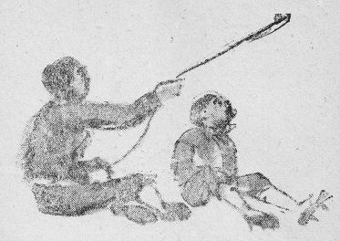
注
上りたか…………上りたい
ごたる……………ようだ
ハタ………………たこ
踊っとるもん……踊っているから
［＃改ページ］上りたか…………上りたい
ごたる……………ようだ
ハタ………………たこ
踊っとるもん……踊っているから
真実孤児の道はさみしい。孤児の真実の道は苦しい。この道を行くは辛く、悲しく、難しい。この道は暗く、細く、けわしく、石多く、花少なく、窮して通じ、通ずれば窮す。路傍に立つ者は枯木のごとく冷たく、頼りなく、そっけなく、しばしば枝を張り出して妨げる。……手をつなぎゆく幼い二人、兄は十四、妹は八つ。
信仰によって、そのさみしさが消えるのではない。苦しみがなくなるのでもない。辛さ、悲しさが除かれるのでもない。さみしさはいつまでも続く。苦しさはどこまでも苦しい。辛さ、悲しさはやっぱり辛さ、悲しさである。宗教はアヘンではない。肉体的な苦痛や、人間感情の悲哀を消してくれるのが信仰の目的ではない。信心のご利益ではない。神は愛であるから、苦しむ人間の苦しみを消してくださることはある。医学の力でなおらぬ病気が祈りによってたちまちなおった奇跡はたくさんある。それは人間に神の存在を認めさせるために、神が愛であることを知らせるために、時々神が行ないなさる。ちょっとした秩序の変更であろう。地上的な苦しみや悩みを消していただくために神を信ずるのは未熟な信仰である。腹が痛いからモルヒネを注射してください、と医者に頼むような気持ちで、信仰生活に入ってはいけない。真の信仰生活はまだまだ高いところを行く。
人は生まれながら完全な幸福を求めている。その幸福がどこにあるかわからないので、勝手に見当をつけて探しに出る。ある者はその幸福は財産と関係があると思って金をためる。ある者は権力に結びついていると考えて立身出世を図る。あるいは学問知識によって見いだせると判断して大学の研究室に残る。そのほかいろいろある。私も若いころは体力をもって、地位の上がるにつれてその地位を利用して大いに幸福を追求した。大いに発展したほうだったから、大抵よさそうな部門には顔を出したものだ。そうして結局、完全な幸福を見つけなかった。そうこうしているうちに原子爆弾を受け、初めて完全な幸福を手に入れるためには宗教によるほかはないことを知った。完全な幸福は神と一致することであった。――私は今幸福である。そして二人のわが子も、この心境をもつように祈っている。
宗教とは神に対する人の道である。したがって、神に対する義務がまず第一に果たされなければならない。
神のみ栄えのあらわすことを！
これが私の第一の念願であり、二人の子のつねに忘れてならぬ念願である。この念願を実行していること、そのことが完全な幸福の境地である。
さみしい時は、そのさみしさが神の摂理のあらわれであるから、それをそのまま感謝して、さみしく感じ、痛いときには、その痛さこそは必要な摂理のあらわれであるから、ありがたく痛いなあと感じ、そうして、そのさみしさ、痛さの中に身をおきながら、神のみ栄えをあらわすにはどうしたらよいかと考え、祈り、できるかぎりのことを行なってゆく。それはあの自分の肉体を痛め傷つけて快感を覚える変態性心理とはまったく違う。なぜなら真の信仰生活を送っている者は、反対に楽しい時にも同じことをするからである。すなわち、楽しい時には、その楽しさが神の摂理のあらわれであるから、それをそのまま感謝して楽しく感じ、その楽しみの中にあって、神のみ栄えをあらわすにはどうしたらよいかと考え、祈り、できるかぎりのことを行なってゆく。つまり、世間で言うところの快楽・順調・逆境・失敗・苦痛・健康・病気などによっては「神のみ栄えのために働く」態度がなんの影響も受けないのである。神のみ栄えのために働くことが完全な幸福の道なのだから、病気も苦痛も失敗も逆境も、私の幸福には関係がない。病気のときには神のみ栄えのために病気をささげる。苦痛があればその苦痛を神のみ栄えのためにささげる。逆境にあっては神のみ栄えのために逆境にあって働く。そのとき、肉体的にまたは精神的に苦痛があるまま、超自然的に完全な幸福を感じているのである。
孤児としてこの子がたどる肉体の道は苦難にみちている。神と一致してこの子が進む霊魂の道は幸福にみちている。その幼い肉身がどんなに虐げられ、さげすまれ、辱められ、痛めつけられようとも、霊魂は神の愛に直接結びつけられておるのだから、平安であり幸福である。
イエズスは山上の垂訓でこう言った。
「さいわいなるかな泣く人、彼らは慰めらるべければなり」
――泣け！ わが子。
［＃改ページ］
母を亡くした者が不幸に感ずるのは、慰めてくれる人がなくなったからではあるまいか？ ――多くの大人が思い出す子供のころの幸福の本態はなんであったろう？ 他愛もない遊びだったろうか？ 他愛もない遊びなら、大人も盛んにやっている。おやつにいただいたお菓子だろうか？ 大人もカフェーに入ったり、料理屋に上ったりしてもっとうまい物を食べている。責任ある仕事がなかったからだろうか？ 大人でぶらぶらして、しかも浮かぬ顔をしている者は多い。一家むつまじく暮らしていたことだろうか？ 大人はなごやかな家庭をもっている。それでいて、母を亡くした大人は何かしら心にうつろを感じている。父を亡くしたのとはまた違うやるせなさを案じている。
子供のときの幸福はいつも母とつながっているようだ。しかも泣いたあとで慰めてくれたことに関係しているようだ。
肩をやさしく抱いて、耳もとに口を寄せて、ほんとうに子の心になって慰めてくれるのは母だけであった。慰めてくれる母がわが家にいる、わが傍らにいる、と思うだけで、もう何も心配はなかった。恐れはなかった。さみしさも苦しさもなかった。
病気の時にはことさらそれがよくわかった。真夜中に目をあけてみると、熱のために軽い目まいがして、被いをかけた電灯がなんだか化け物みたいにゆらりゆらりしたり、身体が寝台もろとも地の底へずりこむように感じたり、頭が割れそうに痛んでいても、そこにまんじりともせず座っている母の姿――それもはっきりは見えず、白い古風なえり当てだけ目にうつっても、それだけで安心をして再び目をつむる。すると、額の氷嚢をしずかに取り換え、どうだえ？ 気分は悪くないの？ もうすぐ夜が明けるからね、夜が明けたらきっと快くなりますよ、とささやいてくれた。それを聞いただけで、熱は下がってゆくような気になるのだった。
母のいたころは幸福だったのだ。泣けば慰めてくれるから幸福だったのだ。
大人になっても泣きたいことは毎日ある。思い切り大声を張り上げて泣きたい。じだんだふんで泣きたい。涙も鼻水もよだれも流しっ放しで声のかれるまで泣いてみたい。そんな気にふっとなることが起こる。しゃくに障ったとき、あざけられたとき、わが物を奪われたとき、腹の痛むとき……。けれども、大人は泣かない。泣いたって、慰めてなだめて止めてくれる者がいないのだから、つまらない。骨折り損のくたぶれもうけに終わることがわかっている。慰められるどころか、大勢に笑われてしまう。笑われるために泣く人はいない。
泣けば、夕立の晴れた空に月を迎えるように胸がすうっとする。泣くべきときに泣いておけば胸には何もたまらない。子供が天真らんまんであるのは、たびたび泣いて胸の中の掃除をするからである。
母のない者は大掃除式に泣かない。泣かないから胸の中にくもの巣などが残る。それが毎日毎日たまってゆく。胸の中には、なんともやるせないものが凝り固まってくる。――それが不幸の種となる。
大人になってからも、真実の母の前にあると同じく手放しで、思い切り泣くことのできるお方があったら……。真実の母とまったく同じく、心をこめて慰めてくださるお方があったら……。ああ、どんなに幸福になれるだろう？
「さいわいなるかな泣く人、彼らは慰めらるべければなり」
この慰め手は神である。
神と愛によって直結している人の子は、いつでも神に向かって取りすがり、心ゆくまで泣くことができる。こうして泣くとき、神から慰められる、その幸福！
たとい、この世の母を失っていても、母にまさる真の愛の親――神と共にあると、あの子供のころのように泣けるのである。
真の信仰をもった人がどんな境遇にあっても、いつもくったくなく、子供のように明るい顔をしているのは、こうして時々大いに泣いて神から慰められ、限りない幸福を味わっているからではあるまいか？
［＃改ページ］
長崎の大浦天主堂の前を過ぎ、南に向かって石だたみ道を上って行くと、港の青を一目に見おろし、思わず大きな息を吸う丘の腹に出る。道にはくすの木のかげがまばらに敷かれ、その常緑の枝がいつも港の風にゆさゆさ揺れている。あまり人は通らない。道の上にも下にも明治初年ごろのヨーロッパ各国人の居留館が、熱帯・亜熱帯植物の植え込みに囲まれ、もう年代も経ったこととて、塗料もはげたり、さびたりして、しっとり落ち着いて、窓に赤い熱帯らんの花がおいてあったりする。屋根裏部屋の窓や、四角な煉瓦造りの煙突が形よくついた屋根越しに、昔ながらの港が近い。オランダの船がたくさん帆を張って入ってきたのもここだった。唐船の極彩色の船首が浪にうつっていたのもここだった。ロシアの艦隊がどっしり並んで
＊ ＊
石だたみ道を七百メートルも行くと、フランスふう煉瓦造りの三階建の美しい修道院に至る。幼きイエズス会の修道院である。日本に渡り、ここに祈りと労働と教育の仕事を始めてから七十余年になるという。今ここには日本人の修道女だけがいる。
三階の窓から漏れる歌に耳を傾けよう。
「マリアちゃま、お手々を合わせ、いつの日も、あたちのために、祈りくだーさる……」
歌っている女の子は三つか、せいぜい四つか？ まだ舌がよくまわらぬらしい。歌に合わせて幼い子らが何人か遊戯をしているらしい。修道女のやさしい声、きゃっきゃっよろこび笑う声。やがて、その次の部屋の窓からワーンと大声で泣き出すと、修道女が、アラアラ、おしっこネ、とばたばたする音。
その隣の部屋では公教要理のお話が始まっているらしい、大きな子供と修道女との問答。
「神とは、どのようなお方でありますか？」
「はい、神とは、天地万物をつくり、またこれをつかさどりたもう限りなく完全な霊であります」
「すると、その霊とはなんでありますか？」
違った女の子の声で、
「はい、霊とは五官には感じられないが、知恵と意志とをそなえたものであります」
「神は人のことを特別におはからいになりますか？」
「はい、神は人の生命・健康・衣食住をはじめ、霊魂と肉身とにかかわるすべてのことを特別におはからいになります。これを神の摂理と申します」
「そうですね、すべての世の中の出来事は、どうすることもできない運命によるものではなく、神の摂理によって導かれるものであります」
「それでは、神は人のことを特別におはからいになるのに、なぜ
「禍は試練となり、罪のつぐないとなり、戒めとなり、後の世の幸福のもとになるからであります」
「なぜ禍が後の世の幸福となりますの？」孤児の問いは切実である。
「――わがために人びとなんじらをのろい、かつ迫害し、かつ偽りて、なんじらに就きてあらゆる悪声を放たんとき、なんじらさいわいなるかな、歓び躍れ、そは天におけるなんじらの報い甚だ多かるべければなり。――これは有名なイエズスの山上の説教のおしまいのことばです。さいわいなるかな、歓び躍れ！ 天国のごほうびはどんなに大きいでしょう」
目を輝かして聞いている子供たちが見えるようだ。
ここは三階が孤児の世話をしているマリア園、二階が女子中学校と高等学校とある信愛学園、一階が幼稚園となっている。
そこから山路を上にとって、また五百メートルばかり行くと、修道院の別館に至る。そこを山の家といって、体の弱い孤児や病気の孤児を看病している。黒衣の修道女が牛乳をしぼっている。まぐさを山から刈ってくる者もいる。野菜畑でくわを使っている黒衣の姿も見える。にこにこと、おむつを洗っている老いたる修道女もいる。みんな沈黙を守って、明るい表情でひたすら労働している。その労働の真剣さには、浦上の農婦もおどろく。この修道女たちにとっては牛乳をしぼること、まぐさを刈ること、畑をたがやすこと、おむつを洗うことがすなわち祈りなのである。一生沈黙を守って牛の世話をしている者もいる。来る日も来る日も洗濯ばかりしている者もいる。きちんと黒衣をつけて、大きな銀の十字架をくびに掛けて……。汗を流して。
親兄弟と別れ、一切の財産を捨て、この世の栄華と快楽とを断ち、一生貞潔・清貧・従順の誓願を立てている人びとである。浮き世で呼ばれていた姓名も捨てて、テレジアとか、カタリナとか、コレタとかの霊名しか持っていない。ここでこんなに激しく働いているのに、一銭の報酬ももらわない。だれからもお礼を言われない。言われないのが当たりまえだと思っている。
イエズスは、
「命ぜしことをなしたればとて、主人はかの使用人に感謝するか、われ思うに然らず。かくのごとく、なんじらも命ぜられしことをことごとくなしたらんとき、われらは取るに足りぬ使用人なり。なすべきことをなしたるのみ、と言え」とさとした。彼女らはみずから取るに足りない使用人と考えているから、感謝を求めないのである。来る日も来る日も、にこにことおむつを洗っている。
修道女が何をしているかは世間に知られていない。世間に知られていることは、このマリア園から脱走する孤児のいないことだけである。そして、なぜマリア園から逃げ出す子がいないのであろうか？ と不思議に思われている。
彼女らはこの秘伝をだれにも教えない。孤児の世話はすべからくこうなすべきです、などと社会に向かって説教したりなどしない。それはやはりイエズスのことばを忠実に守っているからなのである。
「指導師と称えらるることなかれ、なんじらの指導師は一人にして、すなわちキリストなればなり。なんじらのうち最大なる者はなんじらの使用人となるべし。みずから高ぶる人は下げられ、みずからへりくだる人は上げらるべし」
すべてはキリストが指導するのである。孤児園の指導一切は神がなさる。修道女はただ使用人として働くだけのことである。絶対の従順をもって黙々と働いている。
「われ誠になんじらに告ぐ、なんじらがわがこのいと小さき兄弟の一人になしたるところは、ことごとにすなわちわれになししなり」
とは神のことばである。いと小さき者に向かってした行ないはすべてそのまま神に向かってしたのである。一杯の水をいと小さき者の一人が求めるとき、急いでくんで来て飲ませるのは、実は神に向かって一杯の水をさし上げたことである。――孤児は善業の対象となるとき、すなわち神となっている。孤児に向かってするだけではない、神に向かって同じことをしているのだ。修道女の目には幼い孤児は神――幼きイエズス・キリストに見えているのである。孤児に仕える者はそのまま神に仕える者である。
幼きイエズスに仕えた使用人とはだれであったろう？ ――童貞聖マリアである。神の母にして終生童貞なりし聖マリアであった。
受胎告知のとき――すなわち童貞女マリアに天使があらわれて、聖霊によって懐胎し、神の子を生むべきことを告げたとき、マリアは非常なへりくだりと、絶対の信仰とをもって、
「我は主の使用人なり、仰せのごとくわれになれかし」
と答えた。こんなことばは、だれかれの口から出るものではない。
間もなく従姉のエリザベトを訪ね、彼女から祝いをのべられたとき、
「わが魂主をあがめたてまつり、わが精神わが救い主なる神によりて喜びに堪えず、そはその召し使いのいやしきを顧みたまいたればなり……」
という賛美歌をうたった。
月みちて、旅先なるベトレヘムの町の外なるほら穴の牛馬の留まる所で神の子イエズス・キリストを生み、布に包み、馬ぶねに寝かせ申した。そのまま清貧のいい手本である。
それからエルザレムの神殿にささげるためにお参りしたとき、シメオン老人から、イエズスの一生の予言を聞き、またマリアの魂も剣で貫かれるだろうと言われた。イエズスが三十三歳で先立つ悲しい運命を知らされたのだった。そしてそれを胸の中にひとりおさめていた。
ヘロデ王がイエズスの生命をねらっていることを天使から知らされ、夜にまぎれてエジプトに逃げた。乳飲み子を抱いたこの避難は、さぞ辛かったろうと思われる。
ヘロデ王が死んだので帰ってきて、ナザレトで暮らすことになった。勤勉な貧しい大工ヨゼフは養父として聖なる母子を守っていた。このナザレトの家で、どんなにマリアはイエズスを愛し育てたか？ ――聖書には、「幼子ようやく成長して、知恵にみち、精神の力いや増したまい、神の恩寵その上に在りき」と簡単に記されてあるが、おそらく病気ひとつせず、マリアのこまやかな愛にはぐくまれ、りっぱな、一点の非のうちどころもない少年に成長させたことと思われる。
幼きイエズス会の修道女たちは、幼きイエズスに仕えた聖母マリアの模倣をしようとしているのではあるまいか？
聖マリアといえば人類のうちの最高の人である。神ではない。人間である。人間ではあるが古今東西人多い中からただ一人選ばれて、神の母となり、生まれながら原罪を免れ、一生の間一つの小罪も犯さず、ついに死後その霊魂のみならず肉体をさえ天国へ引き上げられた人であり、聖人のうち最も偉大な聖人である。このりっぱな母が、こまやかに心を砕き、深い愛をそそいでイエズスを育てた有様は、思いみるだに尊いきわみである。――修道女たちはこの聖母マリアの御跡をしたって、孤児を幼きイエズスと見なして仕えているのであろう。――この孤児の顔には真の幸福がはっきり浮かんでいる。
［＃改ページ］
神に仕える心――それがそのまま孤児に接する者の心でなければならない。
「なんじらがわがこの最も小さき兄弟の一人になしたるところは、ことごとにすなわちわれになししなり。……なんじらがこのいと小さき者の一人になさざりしところは、ことごとにすなわちわれになさざりしなり」
とは神のことばである。
孤児収容所は慈善事業場ではない。神に仕える祈りの宮殿である。寝小便する孤児を真夜中に起こし、おんぶして冷たい長廊下を便所に通うのは、神の御前に仕えて祈りをすることと等しい。孤児の前に講義をするのは、神の御前に座って祈り文をとなえるのと等しい。町に孤児を捜してついに見つけた喜びは、聖母マリアがエルザレムからの帰り道の混雑に幼きイエズスを見失い、捜し捜して三日目に神殿で見つけたときの歓びでなければならぬ。
孤児園の受付へ職員志願者が来て、
「私は哀れな孤児の救済に一生をささげたいと思います」
と言う。
もってのほかの言葉である。
職員が孤児より上の位にあり、孤児を救う能力をもっているとは、何を証拠に言うのであろうか？ ――果たしてそれだけの自信があれば、わざわざ他人の経営している孤児園へ就職を求めて来なくても、自分の家で自分の力でりっぱにやれるはずである。こんな人にかぎって、現代社会では自立できず、夢のような理想だけを鼻にかけている。自分を救うことができずにいて、他人を救おうとは何事ぞ。
大臣になれとすすめられれば大臣になってりっぱな責任を果たす。巨万の富が必要なら実業界に入って巨万の富を握ることもできる。学問に身を入れれば博士になり、土木界で働くなら大きなダムを作る。そのくらいの能力をもっておるなら、孤児を救済します、と言ってもまあよかろう。孤児の中から大臣も出る、長者も出る、博士も育つ、大芸術家もあらわれるにちがいない。その貴い将来を、自立もできない失業者が、救済します、とはおこがましい。
たとい偉大な人物であっても、孤児の前に大威張りで臨む権利はない。なるほど孤児はボロをまとい、あかにまみれ、哀れな格好をしているから、憐れみ、さげすみ、下に見るにふさわしいようであるけれども、この哀れな格好になったのは、大人の路上生活者と違って、自己の過失によって招いたのではない。あの一発の爆弾が家と両親を滅ぼすまでは、りっぱな家庭にあったのだ。おそらくは、教授の孫もおるだろう。発明家の子もおるだろう。芸術家の弟もあるだろう。運命の一夜をもって家なき孤児となったものの、その本質はいささかも低められてはいない。犬の子とは違う。
宿なし犬をつれてきて、飼うのとはわけが違うのである。
したがって、孤児の世話もおのずから違ってくる。職員の思うままに勝手な教育をおしつける権利はない。職員のなかには、孤児がとにかく一人前の人間になり、食うに困らぬようになれば大成功だ、と思っているものもあるようだ。社会に迷惑をかけないだけの人間に仕立てたら、まずよいほうだ、と考えている者もあるらしい。自分の大きさがせいぜいその程度なのだから――。
木を育てるのに二とおりある。一つは盆栽を作るのである。こぢんまりした枝ぶりで、美しい花などを咲かせ、玄関などに飾って、ちょっと人から賞めてもらう盆栽。――どうも孤児収容所にはこの式が多い。お行儀よくして、ちょっと気が利いて、家の中の使用人には適任、といったような小人物をつくっている、つくった人はそれが自慢だ。
山に杉の植林をするのはこれとまるで違う。毎日そばに寄ってきて、こせこせ鋏を使って小枝を切ったりなどしない。まわりの悪い雑木を切り払い、風通しをよくしてやるぐらいなことで、あとは太陽の光、雨、土の養分にまかせて、遠くから気をつけて見守っている。やがて何十年か、植えた人は名をのこさず死んだあと、万人ひとしく仰ぐ亭々たる大杉となり、広く社会の役に立つ。
天下のご用に立つ杉も、盆栽師の手にかかっては、こぢんまりした見世物になってしまう。おそるべきは盆栽教育者である。
神に仕える心、幼きイエズスを育てる心、――まことにおごそかな心である。この心をもって孤児の傍らにあってほしい。
［＃改ページ］
孤児の心をまことに知る者は孤児。孤児と共に泣き、孤児と共に笑う者は孤児。それゆえ、孤児を励まし、助け、正しく強く伸ばすのもまた孤児仲間ではあるまいか？ ――
孤児はさみしい。心細い、苦しい、悲しい、弱い。それは独りぽっちだからである。離れ離れになっているからである。
同じ心の孤児が互いに心を通わし、手を握り合い、一つの仲間をつくったら、また別の大きな力が生まれてきはしないだろうか？ この仲間の力によって、一人一人が正しく強く伸びゆくようになりはしないだろうか？
麻を見るがよい。ただ一本植えてあれば、ちょっとした風に吹きたおされ、たおされたまま、梢のほうが上へ向かって伸びるので、全体としては結局曲がったものになってしまう。麻畑にたくさん並んでいると、大風が吹いても互いに助け合い、支え合って、揺れてはいるがたおされない。少しひねくれようとしても、まわりがまっすぐに伸びているので曲がれない。結局みんな正しい美しい麻となる。またぐずぐずしていると、まわりの麻に被われて
言い古した話だが、一本の麻はたやすく折れるが、一束となると折れない。
戦争孤児は特異の存在であるから、特異の教育をうけるのがいいと思う。親のある子とまったく同じ教材ではうまくゆくまい。もちろん、まったく別の学校などの必要はない。ある特異の点だけ特別に教育すれば足りる。孤児から身をおこし、正しく強く生き抜いた古今東西の偉人の伝記や、正しく美しく生きてゆく孤児の物語や、現在世界各国の戦争孤児がどんな生活をしているかの実態記録など、先生にお話ししていただくなり、輪読するなり、映画で観るなり、あるいは自分たちの手で脚色して上演するもよかろう。神・父母・我・社会といったものの関係を正しく説明していただいたり、孤児として生きてゆくいちばん正しい道を研究したり、真の幸福を得るために信仰生活に入り、共に宗教行事にあずかるのもよかろう。お互いの胸におさめている悩みを打ち明け、それを慰め合い、解決の途を考え、必要な助けのために手を貸し知恵を貸し、さらに勇気づけて朗らかに生き抜くよう努力するのもよかろう。お互いに将来の希望を語り合い、その希望を達するために力を貸し合い、力を併せるのもよかろう。同じ涙をたたえた者同士が子供のときから固く手を組んで進んでいったら、社会に出て、どれほど利益になるか測り知れないものがある。社会ではどんな実業でも、独りぽっちでは成功できるものではなく、必ず多くの友人と連絡、協力を保ってゆかねばならないからである。また、運わるく社会の罪に誘われて迷いの路にふみ入り、教護院や刑務所などに入れられている孤児を訪ね、慰めいたわり、更生後の援助の途を考えて上げるもよかろう。その道の人に、孤児が悪の路におちいる原因を尋ねて、自分たちの戒めとするのもよかろう。さらに適当な娯楽を取り入れ、陰気くさい表情を追い払い、ひねくれぬように、ひがまぬように、明るく朗らかにいつもいるようにするもよかろう。現在の学資金を得るために適当な仕事を見つけ出すとか、共同作業をするとか、実際的の厚生組合の活動をするもよかろう。
こういう仲間を学校内でつくる。いくつかの学校リーグは連合体をつくる。日本中の仲間が一つの機関によって互いに連絡する。そうなると、ずいぶん力の強いものとなるだろう。戦争孤児の数は何しろ多いのだから――。この浦上の原子野は特別多いが、全国的に見て両親のない子ばかりでなく、片親を失った子を加えたら、全部の子供の二割を占めているのではなかろうか？ 私の調べた範囲ではそうであった。全体の二割というと、問題にせずに放っておける数ではあるまい。
孤児収容所に入っている孤児はこの仲間とは別である。それはすでに特異の教育をうけているのだから――。ここで仲間の対象となるのは、各家庭に隠されている戦争孤児、正常の学校へ通っている子供なのである。この全体の五分の一にも当たる大勢の子供が、学校で問題にされずに今まで放ってあったことは軽々しく見逃してはなるまい。
つい今日も誠一が学校から帰ってきて、浮かぬ顔で「お砂糖の配給あったの？」と聞くから、「この町内は明日らしい」と答えると、「先生がね、最後の時間に、さあ皆さんで大急ぎで帰りなさい。今日は久しぶりに砂糖の配給がありましたから、きっと今ごろ、お母さんがおいしいおやつを作って待っているところですよ。甘いおしるこかな？ きんとんかな？ ――鼻を利かしてごらん、と言ったんだよ」と話してくれた。何も知らずに、いや、敗戦後の学校には母のない子が多いという事実を考えようとせず、生徒を喜ばせようとして、無邪気に実弾を射つ先生である。
この仲間ができて、動き出せば、教員のほうの認識も深まり、無益な殺生を慎むようになるだろう。さらに進んで戦争孤児を正しく導くべく研究を始めてくださるだろう。
もう一つ大きな問題がある。それは官公吏や社会人に対して、家庭に隠されている孤児の存在を大きく認識させることである。そうして、戦争孤児に対して贈られる物資の配分について発言する機関と機会をつくることである。今たとえばララ物資にしても、収容所にいる孤児にだけ贈られていて、家庭孤児は忘れられている。家庭孤児は恵まれているとの先入観の結果であろうけれども、実際にこの私の近所の原子野バラックに引き取られている孤児の生活と収容所の至れり尽くせりの設備の中の孤児の生活とを比べてみれば、ララ物資はむしろ家庭孤児に厚く配分せねばならぬと痛感するだろう。たたみもなく、板の間に、ひしめきあって雑魚寝。着たきりの一枚の夏衣は冬に着ねばならぬから、夏はなるべく裸。乏しい配給だけの食物。娯楽のおもちゃと言っては家を建てるとき大工さんが切り捨てる木のきれ。精神的に言ったら、さみしさ、つれなさはどこの孤児も変わりはないのである。この子たちは今まで離れ離れにおかれ、訴える途も開かれず、声も合わせられず、まるで独房にさるぐつわをはめて入れられていたような状況であった。おまけに役人というお方は近ごろの賃金値上げ騒動でよくわかるように、求めなければ与えない性分をもっているので、このとおり放ったらかしであった。家庭孤児はこの仲間の力によって、孤児に贈られた物資の正当な配分を要求することができるであろう。
現在のララ物資なり赤十字プレゼントなりの配分については、孤児側からの発言が完全に封じられているように見える。上のほうの委員会で決めたとおりに、子供の生活の貧富の実態などお構いなしに、屋根の上からもちをまくように配ってしまう。これも孤児仲間がしっかりした自治組織をもって、積極的に協力し、必要な意見をどしどし申し述べるようになったら、よほど実情に即した、正しい配分ができるのではあるまいか？
戦争孤児の数は二割くらいだが、それが祖国再建の上に投げかける明暗の影響はいちじるしいものと予想される。これだけの子供がひねくれ者となり、祖国をのろい、隣人を恨み、自暴自棄の生活を送ったら……祖国の前途はまったく暗いものとなろう。反対にこれだけの子が正しく自分の立場を知り、亡き父母の遺嘱を感得し、この意志をとげるために祖国再建に励み、隣人に感謝し、強く正しく生き抜いていけば……世界の将来はどんなに明るくなるであろうか？
戦争孤児は今その岐路に立っている。この岐路はそのまま、大きく言えば、人類の禍福の岐路になるであろう。
なぜなら、戦争孤児はひとり日本のものだけではなく、南アメリカを除いた全世界におびただしくいるからである。それゆえ、孤児仲間は世界的に連絡をとるべき性質のものと私は思う。
たとい民族が違い、国籍が異なっても、人の子の親を思う情に変わりはない。戦勝国の孤児も、戦敗国の孤児も親を奪われた悲しみは一つ。いささか難い易いの差はあれ、真実孤児のゆく途は一つ。――したがってこの仲間は国境を越え、皮膚の色とかかわりなく、全世界で一丸となって立ち上がることができるだろう。世界中の戦争孤児が一つにまとまり、明日の世界を明るくするために立ち上がったら、どんなに素晴らしいことをやり出すだろう？
――私はこの孤児仲間に一つの大きな期待をもつ。それはこの仲間こそ、戦争防止に最も大きな原動力となりそうに思われるからである。
これまでの少年団は国の東西を問わず、軍隊の幼稚園の臭みをもっていた。しかしこの孤児仲間は「平和」を念願する団体となるであろう。暴力を一切否定する精神運動を主眼とするものになるであろう。
「平和を保とう！
戦争を防ごう！」
これがこの仲間のかかげる第一のスローガンであらねばならぬ。戦争を防ごう！」
なぜならば、戦争孤児ほど切実に戦争の惨害、苦痛、無意味を体験した者はほかにはおらぬからである。もう一度戦争をしてみたいと思う戦争孤児はおらぬはずだからである。彼らは自分が戦争を嫌うばかりでなく、現在幸福に暮らしている多くの親をもつ子らが、この次にもし戦争があると、自分と同じ辛い目にあわねばならぬことを知って、それを恐れ、なんとかして避けさせたいと願っているからである。
戦争に対してなんの責任もなく、苦痛のみを与えられた戦争孤児の純真な叫びに耳を傾けない者があろうか？ 心を動かされない者があろうか？
戦争孤児同盟はきっと平和運動の一つの中心体となるにちがいない。
＊ ＊
誠一が大村の師範付属小学校を卒業するとき、学校から一羽のはとをいただいた。卒業証書と通信簿とを私の手に渡しておいてから、にこにこしながらバスケットの中のそのはとを出して見せた。全優をもらったことより、はとをもらったことのほうがうれしいらしく、よくなれたその鳥の頭をなでては独り笑っていた。
ポッポー。ポッポー。
夜のしずけさの中に病室のすぐ外で鳴いているのを聞くと、ああ、平和になったのだなあ、としみじみ思われるのだった。この原子野では木という木が一本残らず吹き倒されて、のっぺらぼうになっているので、今日まで、はとなんか飛んで来ない。まったく荒れ果てた戦場のままだった。
平和――はと。
はとは礼節を守る。暴力を否定する。しかも伝書ばとのごときは驚くべき勇気をもっている。ただ一羽で飛びわたる幾百キロの空――突風・豪雨・猛鳥・雷電のおそいかかる大空。あらゆる危難をしのいで、目的地にとどくまでは、ひるまない。
はと――真勇。
はと――忍耐。
……こんなことを考えているうち、この孤児同盟のシンボルに、はとを選びたくなってきた。「はと仲間（The Doves-League）」
――この名はいかが？
［＃改ページ］
いわしから先に食うか？ 大根からにするか？ よい物から先に手をつけろ！
いつ死ぬかわからんから……。
＊ ＊
旅に出たら一流旅館に泊まれ！ その町のいちばんいい点がわかる。木賃宿に泊まるのもよい。その町のいちばん悪いところが知れる。
友を選ぶなら、いちばん善人を選べ！ そしていちばん悪い人も加えろ！ 教えられる。
＊ ＊
桜も植えたいし、南瓜もならせたいし。――桜は南瓜にはならぬものかネ？
＊ ＊
まかぬ種が生えると気味が悪い。まいた種が生えないと落ち着かぬ。――殺したようでネ。
＊ ＊
こうして寝てばかりいると、縦の物を横に見て暮らすわけだが、たまに座って眺めるまともな世間も美しいものヨ。
＊ ＊
赤い大はさみを振りかざし、横行しているかに――あれで正しいつもりなんだからナア。ところが、赤と横歩きとが新しい真理だと思って、わざわざ真似している者もいるんだって……ふふふ。
＊ ＊
買い
＊ ＊
有名になるな！ 名前なんてものは、茶の間で、あめ玉がわりに一分間しゃぶられるだけのもの。
＊ ＊
ろうそくが短くなると、いまにも消えるか？ とそのほうにばかり気を取られ、仕事の手につかぬ人がいる。いくら心配したって寿命は延びないのに――。
＊ ＊
本を読んでいるときに来る見舞い客は決まったように、「お退屈でしょう」と言う。日本人が本を読むのは退屈なときだけかねェ？
＊ ＊
いちばん欲しいものは――時間。
その惜しくて惜しくてたまらぬ時間を、善意の訪問客に横領される。
＊ ＊
私の写真の出ている新聞紙を便所の中で見つけると、名を売った罰だと思うね。
＊ ＊
ほう、うまく掛かったの？ 太いねずみだネ。賢そうな顔をしているが、……ついにご馳走にだまされて、一命をおとすとは――。
＊ ＊
一流になる見込みのないことに手を出すな？ 手を出したら一流になるまでやれ！
＊ ＊
電灯が消えたぐらいのことで、いちいち、アッと声を出すな！ お父さんなんか原子爆弾が落ちた時、泰然腰を抜かしておったゾ。
＊ ＊
節約すべきは金ではない。時間と労力よ。
＊ ＊
科学とは真理に恋することさ。
＊ ＊
梅・すいせん・寒らん――寒さをしのいで咲く花はゆかしい香りをもっているね。どうも楽な季節に咲く花は、人目を引くばかりで。
＊ ＊
決心は一生に一度しかするものではない。毎年元日に新しい決心をする人があるが、あれは儀式サ。
＊ ＊
開拓者はさんざん苦労したあげくの果て、死んでいく。うまい汁を吸う役は後に控えている。
＊ ＊
肉体の苦痛なんて他愛ないものよ。我慢すりゃしのげる、死んだら止まる。
霊魂の苦痛は、とても自分の力だけでは、なおらぬ。おまけに死んだって消えない。
＊ ＊
罪を犯さぬ聖人の霊的苦痛は深いものだろうねェ！
＊ ＊
告白のとき同じような罪ばかり思い出すものだが、――案外、自分の気のつかぬところに欠点があるのじゃないか？
＊ ＊
「ありがとう」の一言で決算をすませる気にもならぬので、……ご恩を借りておこう。
＊ ＊
ひとさまの施しを素直に受け取れるまでには、なかなかの修業がいるものだ。
＊ ＊
こうして寝ておれば、悪い遊びもできないが、善いこともせぬものよ。
＊ ＊
再建というのは天主堂を建てたり、家を建てたりすることじゃないよ。私らの信仰を建て直さなきゃ――。
［＃改ページ］
純心修道院の童貞さまから誠一とカヤノ宛に手紙が来て、入学祝いに服を作ってあげるから、学校の始まる前においでなさい、との招きである。この修道院の経営する女学校でこの子の母はながく教員を務めていたので、童貞さまの中には、母の教え子もいた。この子たちは幼いころから母に連れられてよく修道院に遊びに行き、童貞さまからかわいがられていた。原子禍のとき。この修道院も女学校もつぶれて焼けた。修道院長のマグダレナさまも大きな柱の下敷きになり、迫りくる火にすでに危なく見えたが、通りがかりの人に助けられ、傷ついた多くの修道女をまとめて木場という山の中のカトリック集落に移った。私らもその集落へ行って救護所を開いたので、ずっと修道女たちの手当てにあたった。谷間に掘っ立て小屋を建て、まったくアシジの聖クララたちそっくりの清貧な修道院ができていた。傷ついた修道女たちが祈りながら、互いに看護し合っている情景は美しかった。冬になるころ、神のお恵みによってこの貧しい修道院は、長崎から汽車で二時間かかる大村市の軍事施設の払い下げを受けて女学校を再建することになった。まだ回復期で脚のよろめく修道女たちは、明るい希望を抱いて大村に移った。
私たちが原子野に掘っ立て小屋を建てて、吹きさらしの中に夏衣を着て震えながら住んでいたら、童貞さまが思いもかけず訪れて、子供たちに毛布で作った服をくださった。カヤノはえりについている赤い花のししゅうがとても気に入った。誠一はジャンパーのボタンをはめたり、はずしたりして喜んだ。荒野のサンタクロースだった。……
いま純心修道院は幼稚園、中学部、高等学部のほかに、大学程度の神学部をおいて、純心学園として大きな組織をもつまでになった。けれども、やさしい童貞さまたちは、すでに世から忘れられようとしている私たちをいつまでも覚えていて、子供がそれぞれ中学校と小学校に入ったものの、母親がなくては新しい服も仕立ててもらえないだろうと、こうしてわざわざ招いてくださった。
私は二人だけで旅をさせようと考えた。あの汽車は佐世保行きで、とても混雑する。大人でさえも命がけだという。よく新聞にけが人や死人の記事が出る。おまけに途中に長いトンネルがある。そのトンネルは分水嶺にあるので、トンネルの中央に峠があり、両方へ向かって急な坂になっている。汽車はやっとこさで坂を上りつめ。ついに力尽きてトンネルの中で立往生してしまうことが度々ある。トンネルの長さは一キロ以上もあるだろう。その中にとじこめられ、おまけに窓ガラスが割れているので、車内はもうもうと黒い煙にみたされる。息はつまる。ぎっしり詰めこまれて身動きはならぬ。死ぬか死ぬかと思うばかり。
どうも、幼子二人だけ行かせるのは心もとない。もし万一のことがあったら……せっかく男手でここまで育ててきて、とも考える。ところが二人は、童貞さまの手紙をよんで大喜びだ。ぼろ服を着て入学式に行くのかと、くさっていたところへ、新しい服をくださると言う。行けばなつかしい童貞さまたちが、可愛がってくださる。きっとピアノも鳴らしてくださる。おいしい西洋菓子もつくってくださる……まるでおとぎの国へ行くかのような大はしゃぎ。
こんなに楽しみにしているのだから行かせよう。どのみちこれからは、いつも二人手をつないで、世間の荒さをしのいで生き抜かねばならぬ兄妹なのだ。妹は兄を頼み、兄は妹を助け、妹は兄のほかに頼まず、兄は妹にまず手を貸し、一本ならば折れる麻も二本となれば折れ難いと信じ、一束になって勇気を出さねばならぬ二人なのだ。ちょうど入学という新しい出発に当たって、幼い二人が、二人だけの間に信頼と親愛とを固めてくれるのには、この上ないよい機会だ。
「行ってきます」
二人は手をつないで出て行った。
「カヤノ、ちょこちょこ走るんじゃないよ」
と私は床の中から叫んだ。しかし、二人はもう走り出してしまって、返事はなかった。
私はロザリオを取り出し、爪繰りながら二人の初旅の平安を聖母に祈った。こんな短い旅にさえ、これほど騒ぐのも、親だからであろうか？ 信仰が足りないからであろうか？
ふと思い出した、七時発上り列車は買い出し客が多く、ときどき積み残しがあるとの噂を。それなら八時発のにすればよかった。あの狭い乗降口に押し合ったら、カヤノはひとたまりもなく圧しつぶされてしまう。つぶされないまでも、プラットホームと車との間へ下駄をおとしたり、小さい身体が落ちこんだりするかもしれぬ。すっかり乗り切れずに、ぶらさがったまま発車したら……大橋の高い鉄橋で――？ ああ。
しかし誠一もばかではない。乗れそうにないと見たら、次の列車にするだろう。そのくらいの判断がつかぬようでは、今日はうまくいっても、いつかは失敗する。こんな判断をするけいこに旅をさせているのじゃないか？
お金をすられやすまいか？ お弁当をぬすまれはすまいか？ カヤノは目が利くから、兄さんが切符を買っている間にも、ちゃんと目を光らして番をしているだろう。しかし、もしそこへチンドン屋が来たら……？ こんな朝早くからチンドン屋が来るものか。
汽笛が鳴った。時計を見る。七時十五分、定時発車だ。事故はなかったのだな。積み残しのあるほどの人出だったら一分か三分は遅れるはず。大丈夫だ。――けれども、子供が一人ぐらいけがしたって発車は遅れまい。もしけがをしていたら、停車場から電車で来て十五分、十五分以内に急を告げて来なかったら初めて安心できるわけ。
その上り列車が丘の向こうを平気な音を立てて過ぎていった。あの中に二人は乗っているかしら？ うまく座席にかけられたかしら？ それともデッキでおしつけられているかしら？ 知らない小父さんに間を隔てられて、カヤノが「兄ちゃん、兄ちゃん」と泣いてはいないかな？ それでも乗ってさえおれば安心だ。もし、カヤノが線路に突き落とされて、脚を切断されていたら――血まみれになって。誠一は脚の血止めの法をよく覚えていたっけか？ 腿の付け根のところを指で強くおさえるのだが。――駅長室につれこむ。病院？ ああ近くに病院はない。電車にのせて大学病院までゆくのか？ 遠いぞ、間に合えばいいが――
十五分、というと七時三十分だ。七時三十分に、大変だっ、と叫んで誠一が駆けこんで来るか？ あと七分。ロザリオの祈りを続けよう。しかし、脚の切断なら、不自由になるだけだが、胴体だったら――。いや、そんなことはない。ほんの足先だけだ。あと五分。汽車の響きはもう聞こえない。道ノ尾駅についたところだ。案外二人はあの汽車の窓から道ノ尾駅一帯の桜を、きれいネ、などと話しながら眺めているかもしれない。お父さんはこんなに、はらはらしているのに、のんきに花見なんかして――。あの駅には、つつじが見事に咲くのだったなあ。山吹の黄色い花も、桜並木の下を埋めていた。ずっと前にも誠一を妻がおんぶしてあのあたりに花見に行ったことがあったなあ。帰りに、やぶかんぞうを摘んだのは、あの川土手だった。あたたかい陽が当たって、若草の上を誠一が這いまわり……
足音！ 門の中に勢いよく駆けこんだ。来たっ。ぞっとする。誠一か？ ――
「しんぶうん」
ぱさっと障子の中へ、インキのにおいもろとも新聞が飛び込んだ。
ああ、よかった。時計を見る。三十二分。もう大丈夫だ。発車間際にけがはなかった。じゃあ、やっぱり二人はのんきに窓から花見などしながら乗っていったんだ。
新聞を拾い上げる。目をうつ大きな活字――急行列車追突！ どこか？ 大阪だ。現場の写真まで載っている。いやな記事だ。何も今日に限ってこんな写真まで載せなくてもよさそうなものだ。死亡者の中には子供も多い。みんなはしゃいで乗っていたろうに……。原因はブレーキの故障か。誠一たちの乗っている汽車は今ごろトンネルを越して、あの坂を下っているころだ。あの坂が危ないんだ。あそこでブレーキが利かなくなったら、いったいどうしてくれるんだ。大村湾へまっしぐらに飛び込むじゃないか。頼むよ、国鉄。隣の人は機関車の修理工場へつとめているが、このごろの車の傷み方といったら、ひどいそうだからな。材料が古くなっていて、修理の利かぬところが多いという。そいつをどうにかこうにか間に合わせで使っているとのことだが、実情を知っていると汽車に乗る気になれません、と隣の人は言った。このことをもっと早く思い出していたら行かせるんじゃなかった。服と子供の命と、どちらが大切だ？
こんな時に訪問客でもあれば、話し込んで気がまぎれるのだが、善意か悪意かと思うほど、私が原稿を書きかけているときにばかりやって来て、せっかく頭の中にまとまった文章を忘れさせてしまうくせに、今日に限って、一人もおいでにならない。
「信仰うすき者よ。なぜに疑いしぞ？」
これは、ペトロがイエズスからたしなめられた言葉である。
イエズスがベッサイダで一万人ばかりの群衆に腹いっぱい食べてなお余るほどのパンと魚とを与えたことがあった。これだけの群衆はイエズスから病気を治してもらったり、話を聞いたりするために集まったものであったが、日暮れになって食う物もなく、宿る家もなく途方にくれていたのだった。イエズスはそれを見て、哀れに思し召し、そこにあった五つのパンと二尾の魚とをとり、天を仰いで祝別をあたえ、裂いて分け与えなさったところ、パンと魚とは裂くにしたがって殖えてゆき、ついにこれだけの人びとが食い飽きて、残したくずが十二かごあった。この奇跡を目のあたりに見て、群衆はいよいよイエズスが救世主であることを知り、どこまでも従って行こうとした。しかし彼らの心の中には、働かずしてパンを得ることができるから、という不純な期待があったし、救世という仕事は現世の苦悩をなくし、豊かな生活を与えることだ、と考えていたのだった。それでイエズスは群衆を避け、山に登って祈り、弟子たちだけを小舟に乗せ沖にこぎ出させたのである。真夜中になって逆風が吹き出し、小舟は沖に漂流し始めた。夜中の三時ごろ、イエズスは山を降り、湖の上を歩いて小舟のほうに行った。船の中の弟子たちは、水の上を歩いてくる人影を見つけ、化け物が来た、と大騒ぎして恐れた。イエズスはすぐに声をかけて、
「大丈夫！ 私だよ」
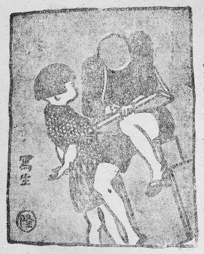
なつかしいその一声を聞くと皆落ち着いた。無邪気なペトロはふと思いついて、
「主よ。ほんとうに主ですか？ もしほんとうなら、その証拠に私にも水の上を歩く力を授けてください。そこまでお迎えに参りますから」
と言った。
「よろしい。おいで！」
とイエズスが言った。ペトロはひらりと水の上に飛び降りた。
浪の上を歩くのはなんの造作もなかった。浪は絶えずうねり寄せたが、足の裏にあたる所だけはガラスのように固くて、沈むどころか、ぬれもしない。ペトロはうれしくてたまらなかった。イエズスのそば近くまで来た。
ふと、目を上げて見ると、とても大きな浪がペトロをひと飲みにしそうな勢いで、のしかかってくるところだった。
こいつは危ないぞ！ とペトロは思った。
そう思った瞬間、足の裏の水が破れ、ずぶずぶとペトロの身体は沈みかけた。
「主よ、主よ、助けてえ！」
とペトロは叫んで手をのばした。
イエズスはすぐその手を取り、水の上に引き上げ、
「信仰の薄い子だ。なぜ疑ったのか？」
とたしなめた。
ペトロはべそをかいた。信仰というものが、あの瞬間の軽い危ぶみだけで、もろくも破れることをはっきり知った。服はびしょぬれで、骨ががたがた鳴った。おれはどうしてこうへまをやらかすんだろう。思えば思うほど悲しかった。もう疑わぬぞと心に誓った。浪は足の裏でガラスのように固かった。前に聞いたイエズスのもう一つのことばが思い出された。それは芥子粒ほどの信仰をもって、山に向かい、移れと命ずれば、山も移る、というのであった。信仰は母の懐にいる幼子の心のようにすっかり頼りきり、まかせきったことなのだ。
二人が小舟の上に上がると、今まで荒れて小舟を痛めつけていた海がぴたりとなぎになった。
弟子たちはイエズスの前にひれ伏し、
「おんみは真に神の子よ」
と言った。
ペトロが、沈みはしないだろうか？ と、ふと疑ったら、ほんとうに沈んだのだ。沈まないと信じていたら、沈まなかった。今でも同じではあるまいか？ 私は二人の子をすっかり神にまかせているはず。危ぶむことは一つもない。それだのに、こんなにいろいろ取り越し苦労をしている。信仰が固くないからなのだ、神がきっと二人の子を守っていなさる。それだのに汽車は脱線しはせぬか？ と思う。こんな思いを抱いた瞬間、今、ほんとうに脱線するかもしれない。いけない、いけない、疑ってはいけない。大丈夫だ。おまかせしておけば大丈夫だ。私はロザリオを繰って祈りつづけた。
……
あくる日の夕方。
「ただいまっ」と大きい声。
「ただいまっ」と小さな声。
庭を駆けて来るはずんだ足音を聞くと、私を圧し包んでいた重いものが、ぱあっと逃げていった。私はぐんにゃりと膝をたおした。
目の前に来て座った二人の子が、まるで世界一周をして来たかのように見えた。二人とも童貞さま心尽くしの仕立ておろしの服を着てにこにことしている。
「立ってごらん。両手を横に広げてごらん」と私が言うと、二人は顔見合わせて笑いながら、並んで立った。そでが長くて、手の甲がかくれている。
［＃改ページ］
四月一日。カヤノは三時に目をさまし、窓の外が暗いのにがっかりし、また床に入った。私も眠れないでいた。それでも、うとうとしたのか四時を知らず、五時の工場の汽笛に目ざめた。耳をすまして聞くが雨ではないらしい。昨日のようないい天気かしら。五時半、天主堂から朝のお告げの鐘がなる。いつもは何度も呼ばれねば返事もできないカヤノが、今朝はもう目をあけていて、
「兄ちゃん、兄ちゃん、遅れるよ」
と誠一を起こした。
誠一が起きて、服をカヤノに着せてやる。スェーターはタツエ姉ちゃんとフジエ姉ちゃんが編んでくれた。もんぺは戸泉さんがくださった。ソックスは母の同盟の小母さんが編んでくださった。ハンカチは東京の名のわからぬ姉さんから、ランドセルは富子姉ちゃんから、ノートは松山先生から、靴は出雲の叔母さんから……カヤノをかわいがる人びとの贈り物で、りっぱな入学式ができる。母はなくとも、父は病むとも、神は善意の人びとを通じて、こうして幼き子をはぐくみなさるのだ。誠一にスェーターのホックをはめてもらいながらランドセルを背負いかけるので、小さな兄さんは、そんなに動いたら着せられんじゃないか、と怒り出してしまった。そんな楽しげな情景を私は枕の上から見上げて、にこにこしているのだった。
――大きくなったものだ。もう学校へ行くようになった。あの日、まだ五つだった。近所の子供に「うちのお母さんも死んだんだよ」と自慢していたが。何も知らなかったこの子が、もう字を習うようになる。あの日着ていたもんぺもいまは膝までしかない。しかもすっかり擦り切れている。それがたった一つの母の手縫いの形見だ。もう着られない。この子の五体にまつわって、現に守っていた母の愛の名残はこれでなくなった。いま兄さんに手伝ってもらって身につけている物はみんな他人の手になったもの――。これからは他人の愛情だけに包まれて生きてゆくのか？ ――もろもろの人の情にはぐくまれ、親はなくとも子は育とうが、しょせん血のつながらぬ人の愛情……。
父私の愛情ひとつでこの子を包みはぐくみたい。ほかのだれの手にもかけたくない。妻よりほかの女の手に、この妻の遺子を触らせたくない。そう胸の中では思いつめておりながら、寝床に就いたきりで、ボタンひとつ縫いつけてやれない無念さ！ 情けなさ！
この子の母は女学校で裁縫手芸を教えていたので、家族の着るものは下着、くつ下の類からオーバーに至るまで、ひとつ残らずその手製だった。毛糸で丹念に編み上げた私のオーバーなどは展覧会のたびごとに出品されたので、その間じゅう私はくしゃみをしていたものだ。毛糸の編み目一つ一つに、ポケットの縫い目ひと針ごとに母の愛情のこもった物ばかり着て育ったこの子たちだった。今もし生きていてくれたら、あるいは貧乏だからこれほど上等の物はそろわなかったかもしれぬが、それでも、スェーターはあの姉ちゃんの好み、もんぺはあの小母さんの好みといった、寄木細工みたいな服装はさせなかったであろうものを……。あのひとの好みらしい、統一された質素な物で入学する日の喜びを飾ってくれただろうに……。
思うてもせんなきもの。
今はただ贈ってくださった人びとの好意をすべて身につけさせて、よろこんでいただくよりほかはない。
二人の子は仲よく口げんかしながら天主堂へミサを拝みに行った。あとはひっそりとしていて、狭い部屋の中には幼い体臭が漂うている。私も仰向けに寝たまま朝の祈りをささげた。香台のガラス窓が明るくなってくる。白い聖母像がすがすがしく逆光に浮く。
天主堂の板の間に小さい兄弟は並んで座り、ご聖体に向かって何を祈っているのだろう？ 誠一の少年らしい高い声、ところどころ憶えた祈りを添えるカヤノのたどたどしい声が聞こえるようだ。昨夜はうれしさにたびたび目をさましたから、祈りをしながら時々小さなあくびも出ているかもしれない。子供好きの神は、それも善しとお許しになるだろう。
カヤノが大学を卒業するまでに十六年かかる。それはけっして生易しい道ではない。科学者になるのか、画家になるのか、音楽家になるのか、修道女になるのか、家庭の母となるのか、何になれと強いもせず求めもせぬが、何にでもあれ、常に神から離れたがらぬ人であってほしい。
軒のすずめも庭におりたらしい。たのしげなすずめの会話が小さい小屋をめぐる。
やがて石だたみ路に、下駄を鳴らして駆けて来るカヤノ。おくれて歌いながら帰る誠一。朝日が射してきた。
叔母さんの心尽くしのご飯が卓の上に湯気を立てている。叔父さんも薪割りをやめて席についた。
「やあ、たい！」
大きな焼鯛がぴんと尾をはね上げている皿を見て、カヤノが目を輝かした。
「なぜ、今朝はこんなごちそうするの？」
とカヤノは、言ってもらいたいことがあって、わざわざ聞く。そこは叔母さんも抜け目がない。
「カヤちゃんの入学祝いよ」
「ウフヽヽヽヽ」とカヤノは胸を張った。
しかしうれしくてうれしくて、ご飯は一杯しか食べられない。鯛は大方兄さんに平らげられてしまった。ご飯をたべかけて、ランドセルを背負いかけて、兄さんからたしなめられた。赤いすじの入ったソックスもしきりに気になるらしい。たびたび手をやって触ってみては、にたりにたりする。
門の前を声をはずませて次々通るは皆一年生。
「みんないいこ、おはなをかざる、みんないいこ……」
もう憶えていて大声で叫んで通る。
「なかよしこよし、みんないいこ」
どうかそうあってほしいものだ。
お茶を飲みながら叔母さんが、
「私が付いて参りましょうね」と言った。
私は、はい、と言わずに考えた。ゆうべから考えているのは誠一を付き添いにすることだった。まだ十四歳だけれども、中学生であり、肉親のただひとりの兄である。父兄のうちの父がこのとおり寝ているのだから、兄がゆくのが当たりまえだ。私が亡くなったらカヤノの頼るのはこの兄ひとりである。将来あるいは外国に離れ離れに住むようになるかもしれないが、たとい地球の裏と表とに別れ住もうとも、頼り頼られねばならぬのは血の直接つながる二人である。今日はカヤノの学問への出発の日だ。この意義ある日にカヤノは兄と手をつないで門を出るがよいだろう。
「誠一に付いていってもらいましょう」
と私は言った。誠一はどきんとしたらしく、目を開いて私を見た。私は言葉を続けた。
「誠一は中学生だ。なんでも独りでやらねばなりません。これからお父さんの代わりにカヤノの世話をみてやるのだから。さあ、二人仲よく手をつないで行きなさい」
叔母さんが目をしばたたいた。
二人はおろし立ての靴をはく。ズック靴は少し大きすぎるようだが、その大きすぎることがカヤノにはうれしいらしい。私は門がよく見えるように、障子をすっかり開けてもらった。
「お父さん行ってきまァす」
「行っていらっしゃい」
小さい二人は門に向かう。門の外を一年生が次々通る。にぎやかだ。すずめの行列みたいだ。
と、カヤノがつと立ち止まった。
誠一が手を引く。動かない。門の外を通る入学生の群れを見つめたまま動かない。泣き出すのでもない。じたばたするのでもない。何かにおびえた子牛のように、足を踏ん張って突っ立っている。小さい兄は困りきって、しきりになだめすかしている。ききめがない。硬い木彫人形のようにびくとも動かぬ。とうとう兄さんもべそをかき始めた。
――なぜだろう？ さっきまであんなに入学をよろこんで浮き立っていたのに。服は新調、靴もおろし立て、ランドセルは上等、ちゃんと平がなで名を書いたハンカチはつけてあるのに……何が足らぬの？
始業時刻が近づいたので、通る群れはひとしきり多くなった。乏しい原子野の子のこととて、きちんと身なりをととのえた子は少ない。しかし……
みんな、お母さんに手を引かれている！ お母さんと楽しげに語り合ってゆく！
――それだった。カヤノは忘れていた事実を不意に思い出させられたのだった。
私は思わず毛布を引っ被った。……
ああ、門出のときから、すでにこの子はこんな冷たい風に吹きさらされるのか……。
しばらくして、上の学校から始業の鐘が鳴りひびいた。この鐘を聞くときをカヤノは半年も前から胸をふくらまして待っていたのに……。
私はそうっと毛布から顔を出した。あたりがうるんでいて、雨の日のガラス越しに見るように門のあたりがぼうっとかすんでいた。カヤノはまだそこに立ちすくんでいた。誠一は手の下しようもないと言いたげに、学校のほうをのび上がって見ているだけだった。私はもう胸の中に湧いてくる思いを抑え切れなくなって、
「早くいかんかっ。おくれるぞ」
とどなった。
カヤノはびくっとした。そして兄のさし出す手に見向きもせず、ランドセルを背におどらせて駆け出して行った。
めでたい門出に、あんな荒い声を出さなけりゃよかったと悔いはしたものの、私はそのとき、そうどなるよりほかに堪える途はなかったのだ。
しばらくして、もう人通りのなくなった門の前をひっそりと登校する一つの組が過ぎた。女学生に連れられた男の子だった。女学生の顔には一目でそれと知れる原子熱傷のあとのケロイドがあった。男の子は少し片足が不自由のようだった。
［＃改ページ］
一年生は帰ったのにカヤノだけはまだ来ない。どうしたのだろう？ 入学してから三週間目だから、まだ居残って特別の用事があるはずもない。けがでもしたのなら学校はついそこだから、だれかが知らせて来そうなものだ。
二十分ばかりたって、門のところで、
「ただいまっ」
といつもの元気のいい声がした。しかし今日に限って、ばたばた駆けこんで来ない。どうしたのだろうと私は首を枕からもたげ、ガラス越しに見た。
カヤノが庭へはいって来た。両手に何かを持って、一心にそれを見つめ、すり足でしずかにしずかに歩いてくる。非常に用心ぶかい足の進め方だ。あんな調子で学校から帰ってきたのなら二十分もかかるはずだ。いつもなら三分もかからぬ、ついそこなのだが。
ようやく私の病室へたどりつき、おえんがわに両手に持ってきたものを置いたのを見ると、学校給食のおわんである。カヤノはおえんがわに上り、またおわんを両手に持ち上げ、ランドセルを背負ったまま病室へ入ってきた。目はやっぱりおわんから離さない。その表情も、その全身もすっかり緊張している。たった二、三歩のところをすり足で、おわんが揺れないように用心ぶかく私に近づいてきた。私は手をのばした。その手におわんを無事に手渡したとたん、カヤノの鼻から大きな息がもれた。これまで息もつめて来たのだったろう。顔を上げ、私を見てにっこり笑った。
「あのネ、門を出るところで二年生におされて、こぼしたの」
と、いかにも惜しそうに言った。
おわんの中を見ると、こぼれずに残った、わずか二口足らずのパイン・ジュースが入っていた。
「今日の給食はネ、ひと口いただいてみたら、とてもおいしかったもんだから……さあ、お父さん、おあがりよ、おいしいのよ」
［＃改ページ］
ガラス越しにちらりと子守の姿が見えた。赤いとんがり帽子をかむった赤ちゃんを背負っているのは意外にも誠一だった。調子よく背の子をゆすぶりながら庭をあちこち歩いて、口では、大声で英語のけいこをしている。
「アイ ヤム タム ブラウン。アイ ヤム エンナメリカン ボーイ……」
背の［＃「 背の」は底本では「背の」］赤ちゃんは近所の農婦の子らしい。畑仕事が忙しいので、ちょっと誠一に頼んだのだろう。
私の胸にぐっと来たものがあった。世が世であれば大学教授の坊ちゃんで、子守の手伝いを頼まれるはずがないのだが……。
ところが本人の誠一はなんのくったくもなく、いと朗らかに赤ちゃんをあやしながら、大声をはり上げている。習い始めの英語がよほどうれしいと見える。
「シー イズ メリー ブラウン。シー イズ マイ シスター……」
――その情景を見ているうちに、私の心は次第に反省をしはじめた。――世が世であれば、などとすぐに感じたところに、まだ私が特別階級の意識を捨て切らずにいた証拠がある。農民の子と教授の子との間に人間としてなんの差があろう。もし社会的な価値から言うとすれば、麦の土入れをするのに忙しい農民のほうが、床に就いたきりの前教授より貴いではないか？ 農民が私の子に子守を頼んだことになんの無理があろう。
私たちの一家はどん底に落ちているのだ。私は社会に迷惑をかけているだけである。社会のお役に立つことを何ひとつしていない。したがって、この子も坊ちゃんと言われる身分ではない。子守にやとわれるぐらいは当たりまえの話だ。山羊の飼料の草を刈ってきたり、豆ちぎりの手伝いをしたり、花を売ったり、瓦の片付けをしたりしながら、自ら学資をかせいで勉強をせねばならぬ身分なのだ。むごいとも思う。いじらしいとも思う。しかし、これがこの子の前におかれた道なのである。
家の格だの、昔の身分だのにとらわれて、くよくよ思う私のほうが、まだできていないのだ。あの子はそんなことにこだわらず、ただ赤ん坊が可愛いから、ああしてうれしげに子守しているのかもしれない。
とは言うものの、この小さい子がなんの罪もないのにこんな苦労をして成長せねばならぬのか、と考えると、やっぱり心は乱れがちになる。
［＃改ページ］
カヤノも誠一も絵が好きだ。私も幼いときから絵が好きだった。しかし出雲の山の奥の、
このごろ画家の伝記を読むことがあって、ようやく絵かきの生活も科学者の生活のようにおごそかで苦しいことを知り、父の言った絵かきは酒飲みで怠け者で……というのは、へたな絵かきのことだ、とさとった。それで私はカヤノたちから絵筆を取り上げたりなどはすまいと思う。
今日は日曜、雨なので遊びにも出られず、友だちも来ず、カヤノは机に座って、しきりにクレヨンを動かしている。寝ている私には机の裏側が見えるだけで、何を描いているのやら見えないが、まるで紙芝居のように、絵の中の人物がお話をしたり、背景が説明されたりするので、大体の見当がつく。しかし登場人物も背景もいちいち描かねばあらわれてこないから、手間どる。手間どるうちに作者の気が変わって、お花見が海水浴になったり、筋を忘れて、本原のおじさんのうちへ蜂蜜をもらいに行くはずのが、寺井田へ行って夏みかんをもらってしまったり、描きそこねて姉ちゃんがお婆さんになって、話の筋がまとまらなくなって困ったり、伴奏が興に乗りすぎクレヨンの草色がいちめんに躍ったため、花の咲く余地がなくなったり、ぞうりが片一方見えなくなったりする。
「カヤノが、リボンをつけて……セーラー服着て……どこへ行こうかなあ……靴はいて……ウン、そうそう、五島へ……サツヨ姉ちゃんとこへ……お船にのって行きます。誠一兄ちゃんも行きます。はい、中学校の帽子かむって……はい、ボタンをつけて……エ？ 兄ちゃんのほうがカヤノより小ちゃくなっちゃったワ……海は荒海、向こうは佐渡よ……佐渡ってどこね？ お父さん。五島の向こうね？ ……五島の向こうは、ずうっと向こうまで、ずうっと、ずうっと向こうまで、やっぱり海よ。青い青い海よ。ええ、この色よ。すずめ鳴け鳴け、もう日はくれる。みんな呼べ呼べ、お星さま出たぞ……お月さまも出たよ。こんな大きなお月さまが、海から出たよ。ずうっと向こうの海から出たよ。兄ちゃんと二人で見たよ。まるいまるいお月さまだったよ。浪の音が、どおうと……どおうう……とひびいていたよ。五島は夜になるとさみしかったのよ――」
二人の子は一昨年五島へ行った。昔の夢がそのまま残っているような島だ。朝起きると子供たちは牛をひいて牧へ登る。子牛は先に立ってぴょんぴょん跳ねながら、自分の足音に肝をつぶして親牛のところへ駆け戻る。牧へ登りつくと牛の鼻綱を解く。牧は島の真ん中の高みにあるので、四方から子供たちが牛をひいて集まって来る。牛は牛づれ、子供は子供同士寄り合って、昨日の夕方別れてからの出来事をさも大事件であったかのように話し合う。牛仲間にも好ききらいはあると見え、いっしょの組になるのはいつも決まっているのだった。子供もそうだった。椿の木の下に座る組もあり、野石にまたがって歌う組もあり、雲雀や雉の巣を探してまわる仲間もあった。みんな懐からふかし芋をとり出し、そこらに生えているかやの葉をちぎって、その葉をなめて芋を食った。潮風が絶えず吹いているので、かやの葉はしょっぱかった。陽が高くなると、牛は牧に放ったまま、子供たちは浜へ降りていった。浜にも遊びの種は絶えなかった。にな貝のからをいそぎんちゃくに差しこむと、あわててしぼんで、まるで巻きたばこをくわえたようになるのがことに面白かった。夕日が落ちるころにはまた牧へ登って見送った。陽の落ちるのはずうっと向こうの、あちらは上海だという方角の海だった。海も真っ赤になった。それで沖に浮いている舟が焼けはしないかと小さい子が心配した。日が暮れると、子供たちはそれぞれ自分の牛を呼んだ。牛はよく声を聞き分けて、帰ってきた。道も牛のほうがよく知っていたから、綱に引っぱられておれば、牛が先に立って牛小屋まで連れてきてくれるのだった。――
カヤノはそれを思い出して、また一枚描き上げた。
三枚目、クレヨンを手に持つと、ためらいもなく、ぐいとなする。こんどはどうやらお家らしい。赤の屋根ができ、壁ができ、壁に窓が開き、電灯がぶらさがり、屋根に煙突が立って、ご飯をたく煙がもうもうと上がる。
「……お座敷にカヤノがいます。……カヤノは……アラッ？」
いきなり黒のクレヨンをとり上げると、ごしごし一面に塗りつぶし、
「停電、停電……」
思うに、カヤノのご面相が甚だしく意にそむいたものらしい。
＊ ＊
そこへ叔父さんが中世紀の教会美術集をもってきて見せた。原色版の複製だが、なかなかよく印刷されていて、ステンドグラスなどは実物をすかしてみるような鮮やかさだ。中世紀のすばらしさはこのごろ見直され始めた。かざり気のない信仰が、そのまま教会装飾にわ表されている。私は一枚の聖マリア像を見ていた。どこかフランスの田舎の天主堂の窓らしい。作者の名はわかっていない。その小さな町の天主堂の飾りつけに一生をささげた名もないガラス職人であったかもしれない。どうも正統の画流をついだ者の手ではない。釣り合いのとれない構図、大胆な配色、不細工な鉄枠の使い様、まことに素人臭いできばえである。このマリアの手のふとさといったら、まったく働き者の娘の手だ。この強そうな足、これなら悪魔のへびの頭もひと踏みに砕いてしまうにちがいないが、これも働き者の娘の足だ。それにこの眼の大きさといったらどうだ！ 顔から飛び出しているではないか！ ――しかし、この聖マリア全体として、私に与える印象はいかに？ ――まったく頭が下がる。なんという神々しさだろう！ なんという潔らかさだろう！ これはたしかに神の御母の姿である。これをじいっと見ていると、ほんとうに聖母の前に出ているような気になってくる。永遠の幸福、いと高きものへのあこがれが胸の中におのずから湧いてくる。
なぜだろう！
試みに私も鉛筆をとり、模写をしてみた。ずいぶんよく似せて描いたつもりだが、さて二枚比べてみると、私の描いたのは女であった。とても終生童貞なる聖母にはなれない。もう一枚描いてみる。やっぱりできない。俗臭ぷんぷんたる女しか描けない。どうしてもこの目が描けない。不細工に大きく見開いた目であって、別に技巧も施していないのだが、永遠を見ている目なのである。神を見ている目なのである。神と共にある聖母なのであった。カヤノも幼いながら、この絵は気に入ったらしい。
「これ、だれ？」
「マリアさま」
「どこにいるの？」
「天主堂の窓に？」
「どこの？」
「フランスの。――そら、浦上の昔の天主堂にもあったでしょう？ 憶えてる？ あの大きな天主堂に。……ね、正面の祭壇の上の、そら、高い高い窓に、つばめがとんでよく止まったりしていたでしょう？ ごミサの中ほどで、朝日がさっと差してくると、あの窓が東向きだったから、ぱッと明るくなって、天に上げられなさるマリア様が現われましたねえ。両手をこう胸に重ね、上を向いて、青い長い衣を引いて、桃色の雲に乗って、天使にとりまかれて、ね、青い空を上ってゆきなさるところだったでしょう？ ――」
「ああ、そうそう、……みんないっしょに参ったわねえ……」
しばらくは思い出にふけって黙る。やがて、
「なぜ、窓にマリアさまを描いたの？」
「神さまを悦ばすために」
「神さま、ほんとうに悦びなさったの？」
「ほんとうに悦びなさったよ」
「そう。――よかったわね」
カヤノはまたじいっとそのステンドグラスを見つめていたが、やがてたどたどしいラテン語でアヴェ・マリアを歌い出した。これもこの絵に何百年か前、名もない職人がこめた信仰の力におのずから引き出された賛美歌であったにちがいない。そしてカヤノもまた神を悦ばせたい一心から歌っているのであろう。真の信仰とはこんなに単純なものであった。私もカヤノの声について口の中で歌った。
そのまま快い眠りに入ったものらしい、私が目をあけたときには、まくらもとにはだれもおらず、雨も上がったものと見え、障子に夕方らしい陽が明るく差していた。
その障子の腰ガラスに絵が描いてあった。女の子であろうか、肩に羽が生えているからあるいは天使かもしれない。頭に花の冠をいただいて、あどけなく笑っている。上衣はボタンの二つついた赤いジャケツで、スカートは桃色のひだがついている。足の下には石垣と石段だけがあるところをみると、この焼け跡らしくもあるが、すでにチューリップの途方もなく大きいのが咲いている。空には横ざまに泳いでいる人も見える。すみのほうに年号らしいものが書きつけてあるので、読んでみると１２３４――学校で習い始めた数字のおけいこもついでにやったものらしい。クレヨンの半透明なのが、かえって面白い効果を見せている。
この画家はこのステンドグラスを描き上げたものの、雨がやんで友だちが誘いにくると、サインもせずに出ていったらしい。
――かーごめ、かごめ
かごの中の鳥は
いついつ出やる
月夜の晩に――
かごの中の鳥は
いついつ出やる
月夜の晩に――
となりの庭で、にぎやかに遊んでいる。
［＃改ページ］
あの二人の子供の死が、このごろいよいよ鋭く私の良心を責める。あの当時はむしろいいことをしてやったとさえ思っていたのだが、いまではわが子のことと思い合わせて、どうも気にかかって仕方がない。どうせ死ぬべき重い症状ではあったが、私に心の底から救ってやりたいとの気持ちのなかったことが、なんとしても気にかかる。
原子爆弾にやられてから四、五日目、それまで無傷で大丈夫だろうと思われていた人びとが、放射線による急性原子病を起こして、血を吐きながら次々死んでいった。私のあずかっている患者の中に二人の子供がいた。
一人は女の子で四歳。父は戦死して、母ひとりの手で育てられていたが、その母は、原子爆弾の落ちたとき、その子をわが身でかばって伏せたまま、倒れかかった柱に頭を割られて死んでいた。子はかすり傷ひとつ負わず救い出されたのだった。お
もう一人は五歳の男の子だった。私生児だったのである。父親が出征したあとで、生まれて初めてそんな女性のあったことがわかり、いざこざがあって、手切金を渡し、子供を父親の実家に引き取って育てていた。実家では血がつながってはいるし、子供に責任はないので皆でよくかわいがって無事に育ててはいたが、将来は結局何かいざこざのもととなる存在であった。父親が復員してきて、新しく嫁を迎えるときに確かに妨げになる子であった。この子は原子爆弾のとき浅い防空壕の中にいたので、傷は負わなかったが、やはり五日目から熱を出し、やがて皮下に小豆色の出血点があらわれ、恐ろしい急性原子病の症状を示してきた。私は診察して、助からぬと判定した。そして心の中で、この子がこれで死ねば、この子も辛く苦しい人生を送らなくてすむし、復員してくる父親も、何の妨げもなく新しい家庭を持つであろうし、実家の人びともほっとするし、八方めでたくおさまるわい、と思った。したがって治療にも特別に気をつかわず、ただ対症的にやっただけだった。男の子は苦しみながら五日ほど後に死んだ。この子はついに父の顔も母の顔も知らずにこの世を去った。
二人の子がこもに包まれて、こもの端から小さな足を二本ずつのぞかせて、にないかごに担われて山へ埋めに運ばれて行ったとき、私はそぞろ悲しくなったが、また一方ほっとした気持ちもあった。これで二人とも、あまり苦労をせずに天国へゆけて幸福だったなあ、と思った。
――ところが、このごろになって、しきりにあの時起こった、あの気持ちが気にかかるようになった。あの時、あの子の親がいなかったから、他人の私が勝手にあんな想像をして、むしろ子供の死を祝ったのだ。女の子のほうは父も母もこの世におらなかった。男の子のほうは父も母もこの世に生きておりながら、正当な結婚でないゆえに、そばにおらなかった。いずれにしても、あのとき、父と母とは、その子の死ぬのを望んでいたであろうか？ 祝っていたであろうか？ むしろ死ぬほうがお前のためだよ、と思ったであろうか？ ――
立場をかえて、あの日私も妻もろとも死んでいて、あとに誠一とカヤノとが残り、これもまた急性原子病のために死にそうに苦しんでいたものとする。他人がそれを取り囲んで、ああ、この子たちも生きていたって、どうせ世間で人一倍苦労せにゃなるまいから、こうして原子病を起こして両親のあとを追うて死んだほうが、この子たちの幸福ですよ。ええ、そうでございますとも、長生きしたって、大した者にもなりますまいし、こうして親子いっしょに死ぬほうが結局ましですわ。まあ薬もあまり無いし、どうせ助からぬものなら注射したって捨てるようなものですからね、おやめなさい先生。はあ、そうしましょうかな。どっちみちこの様子では予後は絶対にわるいと決まっていますからなあ。……
こんな会話を私の魂が聞きつけたら、一体私はどうしただろう。もう一度肉体の中へ帰って、ゆうれいになってその場に飛び出し、この人たちを片っ端から成敗してやる？
いや、その時ばかりではない。これから先、誠一とカヤノとが重い病気にかかった時、周囲の人が、ふっとこんな気を起こしはしないだろうか？ そうして看病治療をおろそかにしはしないだろうか？
それを思うと、あわれでもあり、予め腹も立つし、いらいらしてくる。そうして、つれなく治療して、死ぬにまかせた二人の人の子のことがいよいよ思い出される。
［＃改ページ］
学年末で忙しいころ、純心学園の教頭の片岡君がやって来て、誠一君の中学はどこに決めたか？ と聞いた。実はいろいろ迷っているんでと答えると、そりゃ海星中学に決めなさい、と断定的に言う。なぜ？ と尋ねると、とうとうと二十分間ばかり、海星のよいわけを説明してくれた。実によく調べ上げている。設備から教員から校風から、入学試験のことに至るまで市内の学校はみな調べ、比べてみての確かな結論であった。私は自分では何も調べられずにいたものだから、すぐそれに賛成した。そのうえ、ぼんやりしていて願書の締切日さえも知らずにいた。聞いてみるとあと五日しかない。片岡君は、やっぱり締切日も知らずにいるのじゃないかと気がついて、学年末の忙しい時間をさいて、わざわざ大村から汽車に乗って知らせに来たのであった。
さて試験にも通って入学することになったが、病中万事不如意のこととて、新聞などで見ると、ひとそろいそろえると二千円かかるそうである。二千円という大金をどうしてひねり出すか？ ――まくらにのせた頭が痛むばかりである。誠一は、ほかに何もいらぬから帽子だけは新しい制式のをください、と言う。帽子、帽子――帽子も何百円かするそうな。
ノート・教科書・辞典、それから靴。靴は恐ろしい。
聖母の騎士中学の教頭の田川君がやってきた。田川君は来るたびに「誠一君、おうい、誠一君」と私より先に誠一を捜す人である。今日も誠一はその声を聞くと、裏から飛び出してきた。額に汗が光っている。薪割りをしていたらしい。
「誠一君、頭出して見ろ」
と田川先生が言った。誠一がにやにやしながら頭を突き出した。先生はふろしきの中から学生帽をひとつ取り出した。
「さあ、だめかなあ、いつの間にそんなに大頭になっていたんだい？」
かぶせてみると、ちょこんと頭のてっぺんに載っているだけで、耳まで七センチもあいている。
「アハハハハハ、大失敗だったなあ！ いやあ、大きくなったもんだ。どれどれ、そのひもを貸してごらん、測ってみるから……。ふうむ、大きいなあ、ぼくの頭と比べてみるかな。……おや、これは驚いた。ぼくの頭と同じだなあ！ アハハハハハ」
田川君は大きな声を出して笑った。しかし、その目にきらりと光るものを私は見逃さなかった。
――田川君の長男の伸治君は誠一と同い年であった。家も隣だったので、長男の生まれたころ、二人の若い父親は、若い妻が夕飯の支度をする間、おぼつかない手に、前途洋々たる第二世を抱いて門に立ち出で、胸ふくらまして輝かしい未来を語り合ったものだった。二人の長男は同じ時にはしかにかかり、同じころに腹をこわし、いっしょにかぜを引いて、こんこん咳をし、同じように青ばなを垂れて大きくなった。ミサ拝みもいっしょに行った。クリスマスには二人の父はお互いにサンタクロースになった。学校へも毎日手をつないで行った。二人の父はそれぞれ長男に大きな期待をかけていた。
原子爆弾は田川君の妻と三人の子を一瞬に奪った。田川君が郊外の勤務先からここにたどりついたとき、小学校の防空壕に、きょとんと座っている伸治君と三男の尚士君とを見いだした。二人の子を連れて田川君は私の救護所に来た。三男のほうは頭に傷を受けていたのでその手当てをしたが、伸治君のほうは無傷で元気だったから、安心して、お互いにまあ長男だけは生き残ってくれてありがたいと手をとって語り合った。神ならぬ身の知るよしもなかったとは、このことであろう。伸治君はすでにあの一瞬に致死量以上の放射線を全身に受けていたのだった。その原子病があらわれるまでには何日かの潜伏期がある。潜伏期の間は体内の細胞の恐るべき破壊が始まっておりながら、まだなんの症状も表にはあらわれてこないのである。二人の子供が元気なものだから、田川君は親類を訪ねて三里の道を下っていった。そこで伸治君の五体に原子病は突然あらわれてきた。親の見ておれぬ苦しみであったそうな。だが、この子のもっていたしっかりした信仰は、あらゆる肉体の苦痛をかえって美しき花束にかえて、その臨終を飾った。田川君はわが子の神聖な臨終を見て、たちどころに真の信仰を悟った。――
それは伸治君が四年生のときであった。
それからのち、田川君はしきりに誠一に会いたがった。そして一方にはまた、会えば悲しくなるので、会うたあとでは、会わねばよかったと思うと、私に打ち明けたことがある。なんだか、伸治君にかけていた期待を誠一に移したようなかっこうであった。
死児の齢を数える、と言って笑うものがあるが、わが子を亡くしたことのない人の冷たい言葉であろう。生きていたら、あの子も中学校へ入る、と思えば、つい帽子屋へ入って新しい帽子を手にとってみよう。……
片岡君の長男も同じ年ごろだった。そしてやっぱりあの日に死んだ。片岡君はもう中学へゆく子はいなかったけれども、もし生きていたらどの学校へ入れたであろうかと、どの学校も調べ上げて来たのだった。そして同じ期待を誠一に移しているらしかった。
どうかすると、片岡君と田川君との誠一に対する期待と愛情とは、私以上に大きいのではあるまいか、と思うほどである。
子を亡くして初めて子に対する愛は深まり、親と別れていよいよ孝情が深まるものか。
［＃改ページ］
誠一の霊名はヤコボ喜左衛門だね。ヤコボ喜左衛門聖人といったら日本二十六聖人のひとり、慶長二年二月五日この長崎の西坂で殉教したお方だ。二十六聖人といっても、日本国内では知る人も少ないが、世界中のカトリック教会で毎年二月五日にそのお祭をするので、むしろ外国で有名だ。おそらく古今の日本人のうち、いちばんよく知られているのかもしれない。欧州人はその二十六殉教者の勇ましい行ないによって、日本人は勇気のある民族だと知ったのだから。
ところで、この聖ヤコボ喜左衛門さまについては、備前の生まれで、イエズス会に入り、天主堂の門番を勤めていたということと、死んだときが六十四歳で、二十六人のうちのいちばん老人だった、ということのほかには何もわかっていない。生きているうちには社会的にちっとも有名でなかったにちがいない。そんなおじいさんが人間最上の光栄たる聖人の位にあげられ、世界中の善意の人びとから記念のお祭りをされているのはなぜだろう！
――秀吉が日本中のキリシタン総死刑の命令を出したのが慶長元年十二月八日だった。十二月八日という日は日本にとって忘れられぬ日だね。どちらも世界の文明国と絶交して、小さな殻の中へ閉じこもった日だ。
さあ、キリシタンは皆殉教の覚悟を決めた。そのころのキリシタンには有力な文化人が多かった。石田三成、小西行長、高山右近など。この人たちはキリスト教徒だったから、後世の歴史家から悪口を言われているが、その当時はなかなか人望のある人格者だったんだね。京阪地方の商人にもキリシタンは多かった。この人びとは社会的にすぐれた地位にあっただけでなく、信者としても熱心で、教会の事業に力を尽くし、貧民救済などには進んで私財を傾け、布教の中心ともなっていた。死刑のうわさを聞くと、すぐそれぞれ殺される準備にとりかかった。遺産を分けるとか、家来に暇をとらせるとか、身のまわりを片づけ、辞世の歌をつくるとか、いつ上使を受けてもいいように晴れの白装束に身を飾るとか、大騒ぎだった。別れの宴会を開くものもあった。
日本人は死に花を咲かせることを尊ぶ。さすがあの人よ、名に負う武士らしい潔い最期だった、華々しい末期だった、りっぱな死に際であったと評判されたいと、日ごろから望んでいるものだ。人の口に賞められたい、歴史に名を残したい……これは当時のキリシタンの心の中にもあった念願であった。
ところが、いろいろな事情から総死刑は行なわれぬことになり、殺されるのはわずか二十六人に決まった。その二十六人というのは、そのころ慈善事業で目立っていたペトロ・バプチスタ神父たち六人の西洋人のほか、二十人の日本人であったが、その二十人がそろいもそろって世間に名も知られぬ者ばかりだった。生まれた土地・姓名・年齢そろってわかっている者はひとりもない。履歴もほとんどわかっていない。中にはただ霊名だけわかって俗名のわからぬ者さえある。
この人びとはかねてから神の教えを正しく信じ、いつも自分のできる範囲内で、小さいながら完徳の道に励んでいたのだ。一点の非のうちどころもない信者だとまわりの者は認めてはいたが、別に世間があっと言うほどの大慈善をするでもなし、何百両と教会へ寄付するでもなし、教会の行事のときに人の目につく役を引き受けるでもなし、つまり人間の目からはあまり大きく見られていなかったのだね。本人もキリシタン総死刑のうわさを聞いたときには殉教の覚悟を決めたものの、弱いわれわれが、そんな恐ろしい責め苦に最後まで堪えられるかどうか危ぶんで、神の特別の助力を願ったほどだった。とても聖人などの光栄を思うどころではなく、人目に立つような華々しい最期をとげる自信があるでもなかった。ただ神に向かい、われらを助けたまえ、と祈るばかりの弱い人びとであった。
しかし、聖人の位に上げられる人は神の目にはよく見えていた。隠れた宝を天国に蓄えていた人びとだ。人目につかぬ善業を絶えず行なっていた人なのだ。
イエズスのことば、
「人に見られんとて人の前に、なんじらの義を為さざるよう慎め。然らずば天にましますなんじらの父のみ前に報いを得じ。されば施しを為すに当たりて、偽善者が人に尊ばれんとて会堂および街に為すごとく、己が前にラッパを吹くことなかれ。われまことになんじらに告ぐ、彼らはすでにその報いを受けたり。なんじが施しを為すに当たりて、右の手の為すところ左の手これを知るべからず。これなんじの施しの隠れんためなり。然らば隠れたるに見たまうなんじの父はなんじに報いたまうべし」
が、この場合に当てはまるのだろう。三成も行長も自分でラッパを吹いたんだね。それで生きているうちから世間からちやほや賞められたんだ。もうそれでごほうびはもらっているんだから、神からは何もいただかないのさ。
有名なキリシタンたちが殉教の光栄を受けるというので大騒ぎをしたのが、なぜ善くなかったろう？ それは結局虚栄心のあらわれだったのさ。どんな人でも死に際だけは美しくしたいと願う、それは自然の人情だ。けれども特別、人の口に後々まで好い評判となって残されようと思うのが虚栄になるんだ。虚栄は人の心を濁す。濁った心では神に会えない。イエズスは「さいわいなるかな、心の潔き人、彼らは神を見奉るべければなり」と言った。ほんのちょっとした過ちのように見えるけれどねえ。完徳の道にはずれるんだ。
もうひとつ妙に思うことは、大学者や大人物をさしおいて、そんな小さな者を神が選んだのはなぜだろうという点だ。これもはっきりイエズスが言っているところなんだよ。
「天地の主なる父よ、我なんじを称賛す。そはこれらのことを学者・知者に隠して、小さき人びとに顕したまいたればなり。然り父よ、かくのごときは御意にかないしゆえなり」
神の教えの真髄はかえって学問のない人によくわかるのだろうね。人間的な知恵があると、かえってそのために目がかすんで、よく信仰をつかむことができないのかもしれない。
二十六人のキリシタンは捕らえられたとき、すぐに神に感謝をし、数ならぬ身が殉教者の仲間に加えられたことを喜んだ。それは、イエズスが、
「さいわいなるかな、義のために迫害を忍ぶ人、天国は彼らのものなればなり。我がために人びとなんじらをのろい、かつ迫害し、かつ偽りて、なんじらにつきてあらゆる悪声を放たんとき、なんじらさいわいなるかな、喜び躍れ、そは天におけるなんじらの報いはなはだ多かるべければなり」
と言ったからである。ほんとうに喜び躍った。そして死の瞬間まで柔和とへりくだりと魂の平安と沈勇と忍耐とを保った。さすがに選ばれた人びとであった。
一同は獄に入れられ、翌年一月三日京都一条の辻で耳を切り落とされ、京の町を引きまわされた。耳の切口から流れ出る血は凍った。七日に大坂の町を引きまわされ、八日に境の町を出て、長崎まで二百里あまり、雪路を歩いてくだった。ひとえ一枚に腰なわを打たれ、はだしで、氷をふんでなあ……いちばん小さいのが、ルドビコといって十二歳、四年生だね。その上が十三歳のアントニオ。ひとりも途中で倒れず遅れず、とうとう二月五日に長崎へ着いたんだ。うちの横のその道をお昼すぎに通ったのだよ。向こうの大学の横を通り、港の岸にそうて西坂にたどりついたのが夕方。夕日が赤く刑場をそめるころ、十字架の上で、やりを受けて死んだ。にこにこしてなあ。やりが胸を貫いたとき、ルドビコは「天国、天国」と言い、指さきがびりびりと動いたそうな。ヤコボ喜左衛門じいさんは何も言わず、しずかに息絶えたらしい。初めから終わりまで人目をひくことのきらいな性分だったのだね。
文久二年、ローマのペトロ大聖堂で、公式の日本二十六聖人の祝祭が行なわれ、毎年二月五日、世界の教会がこの祭りをするようにとの教皇の
誠一が生まれた七日目、洗礼を受けるとき、お父さんは多くの聖人のうちからこの聖ヤコボ喜左衛門を選んで、霊名の聖人になっていただいた。一生このおじいさんを手本にして暮らしてほしいと思ってね。
「へりくだり！」
このおじいさんの一生を貫いたものはこの精神だった。
出しゃばるな、偉ぶるな、名を売るな、人気者になるな、世間を気にするな、いつも隠れて善いことをせよ！
イエズスのことばを忘れてはならない。
「すべてみずから高ぶる人は下げられ、みずからへりくだる人は上げらるべし」
［＃改ページ］
「雛に菜ッ葉をやったらね、お父さん、大げんかだよ。腹がへってるのならすぐ食べればいいのに、ほかのものにはやらずに自分だけ取ろうとお互いに争って、つつき合ったり追っかけ合ったり、菜ッ葉を奪い合い引き合い、とうとう踏んづけて、食べられぬように汚してしまった。ばかだねえ、雛は」
と誠一が雛小屋から帰って報告した。
「なぜ大げんかしたのだろうね？」と私はたずねた。
「菜ッ葉が少なすぎたんだね、三羽いるのに一本しかやらなかったから――」
「それでは、けんかしないようにするには？」
「たくさんやればいいでしょう」
「わかっておれば、おやりよ」
「わかってはいたんだけど、無かったの」
「無かったら、どうする？」
「ははこ・ぎしぎしなんかの代用食をやればいいんです。ところが、このごろ近所のどのうちでも山羊を飼っているので、それも無い」
「では、どうしたらよかろう？」
「――そうねえ？ 戸を開けて外へ出したらいいんだけど、隣の畑を荒らすからだめだし……」
誠一に名案はないらしい。
「それはそうと、ときに――はとは？」
「元気です」
「例のはと仲間ね――」
「はあ」
「戦争を防ぐ少年同盟の仕事のことだが、あれと、この雛の菜ッ葉問題といっしょに考えてみようか――」
「なんの関係があるの？」
「誰が戦争したんだろう？ 菜ッ葉が足りないからやったんだね。食べ物さえたくさんやれば戦争しないんだよ。――人間だって似たようなものさ。人口は多いのに、必要な物資が足りないから、国内では階級闘争が起こり、国家の間に戦争が起こるのだ。はと仲間で、戦争を防ごう！ と叫ぶのはいいが、ただ叫ぶだけで、戦争の原因をのぞかなけりゃ、なんにもならないね」
「そうですね」
「日本人は戦争が好きだ、と昔から言われているが、戦争の好きな人間がもともとおるものか。だれだって無造作に殺されるのは好かぬだろう。また直接なんの恨みもない相手を出会い頭にいきなり殺すことも好かないよ。大将の命令によって、国の名によって、大勢が逆上して殺し合いするのが戦争だ。個人的な殺人は大罪なのに、集団的な殺し合いが罪でない、とはどうして言えるのだろう？ 日本のさむらいが戦争に出かける前と、すんだ後で必ずお酒を飲んだのは、自分の殺されることの恐ろしさをごまかすためというよりも、むしろ人殺しによる良心のとがめをごまかすためだったと思う。日本人は戦争はきらいなんだ。けれども開国以来、戦争せずにはおられない国の事情だったので、絶えず戦争をしていて、ついに戦争が好きだ、という印象を外国人に与えたものだ。戦争せずにはおられない事情というのは、海の中に頭を出した火山の上に住んでいるため、人口を充分養うだけの物資がなかったことだ。日本の歴史は戦争の歴史だ。神武天皇から原子爆弾まで、腕っ節の強い者が偉いとされてきた。その考えで育てられてきた日本民族のとどのつまりはどうかね？ ――このとおりだ。まったくイエズスのことば、『なんじの剣をさやに収めよ、すべて剣をとる者は剣にて滅ぶべければなり』のとおりになった。――さて、二千年の歴史をかえりみて、日本人が気がつかずに犯していた過ちを見いだすのだが、それはなんだろう？」
「さあ？ ――」
「文化の力によって新しい資源を探し出し、作り出すことをしなかった。ただ天然にある乏しい資源を、武力によって手に入れようと努めた。――これなんだ。よく考えながら歴史をもう一度ふりかえってごらん」
「…………」
「創意工夫をこらして生活を豊かにする、という平和的な生産的な方法をとらないで、ひとが開発した資源を盗んで楽な生活をしようとしたのだ。乱暴な破壊的な方法を選んだのだね。――」
「でも、日本は持たざる国なのだから仕方がないじゃありませんか？」
「持たざる国？ ――創り出さぬから持っていないのだよ。米国が持てる国だとすぐに日本人は言う。それでは、アメリカには飛行機の実る木でもあるのかい？ テレビジョン機械の釣れる湖でもあるのかい？ え？ どこかの山を掘ったら自動車がいくらでも出てくるのかい？ ――」
「まさか」
「米国だって初めから持てる国じゃないよ。人間の頭の中から、資源を創り出したんだよ。日本人はどうだね？」
「でも、日本にはそんな機械をつくる原料がないんだもの――」
「外国人の発明や発見の真似ばかりするから、原料がないとかなんとか言う。日本にある原料を使って何か新しい物を発明すればいいじゃないか？」
「なるほどね」
「――ところで、今の日本は雛小屋みたいだね。せまい国土にこぼれるほどの人間がひしめき合い、わずかな物資を暴力で奪い合っている。せっかく外国の好意で輸入される物を、雛が菜ッ葉を踏んづけて食べられなくしたように取りあつかう者もあるらしい。どうしたら救うことができるか？ ――答えは簡単だ。最低生活のできるだけの物を与えることだ。けれどもその物が足りない。代用品も出し尽くした。人口の一部を国外に移民することも、まだ許されておらぬ。しかも人口は毎日増す一方だ。そこで人口制限論というのがとなえられる。物資の量に応じて人口を制限するんだね。これには今生きている人間のうち一定数以上は殺してしまう方法と、子供が一定数以上生まれないようにする方法とあるわけだ。殺すといっても死刑にするのじゃなくて、社会的な救済方法を行なわずにおけば、生存競争に負けた弱い人間は自然に死んでしまうから、こんなにして社会全体の力で間接に餓死させるんだ。もし食糧の統制配給がなかったら、たしかにこんな状態が起こっただろうが、これは一部の成熟していない社会だけでやっていることなんだ。子供の生まれぬようにするのは、この方法よりも残酷でないと考えて、真面目に主張している知識人もないではないが、いずれにしても
「殺人？ それじゃ人口制限論というのは殺人奨励論なんですね？」
「そうだとも、罪悪だぜ。だって神は、産めよ、殖やせよ、地に満てよ！ とお命じになっているんだから……」
「こんなに生活が苦しくなっていても、まだ産めよ、殖やせよ、と言うのは無理じゃないでしょうか？」
「無理なようにも見えるね。しかし、全知全能全善の神が無理を強いるはずがない」
「でも、現に無理が起こっているんじゃないの？」
「その責任は神にありと言いたいのか？」
「神に責任のあるはずはないけれど――」
「愛にまします神が、人間の生きてゆくに必要な物を用意せずにおいて、地に満てよ、と命じなさるものだろうか？ そんないいかげんな命令は出されぬはずだよ。地に満つるほど人類が殖えても、生きてゆけるだけの物はちゃんと用意されてあるはずだ。人類がまだそれを見つけ出しておらぬのじゃないかな？ どこかに隠してあるのだ。それを人類がこれまで怠けていて取り出して利用するところまで至っておらないのだ。人間にはあらかじめ知恵と自由意志とが与えられている。そうして神は、なんじの額に汗してパンを得よ、とも命じている。この知恵と自由意志と、額の汗とをこれまでの人類は正しく発揮したであろうか？」
「かなりよく発揮したと思います。だって動物界とまるで違った今日の文明社会をつくり上げてきましたから。――火の利用、機械の利用、石・木・銅・鉄・アルミニウムなどを用いて、また蒸気・電流・電波などを用いて――。それから田や畑での栽培による食糧増産……など――」
「そう。たしかにそうだ。しかしその中には天然に在る物をそのまま使っているのが少なくないね。石炭・石油・魚・金属・綿・羊毛・牛乳・牛肉……人間の工夫は、それにはあまり入っておらない。石炭を掘って燃やす、魚を片っ端から獲る、山の木を切り取って家を建てる、火をつくる、実のなる草や葉の食える草を集めて田畑に植える。知恵がなくて本能だけで生きている動物とあまり変わらない生活をしている。まるで思慮の足りない息子が親の残した財産を居食いしているようなものだ。そうして、自分のまわりの物を使い果たしてしまうと、隣へ出かけて腕ずくで奪おうとする。こんな連中は猛獣だね。なんでもないことにすぐ闘争という言葉をくっつけて歯をむきたがる。これではなんのために人間であるのかわからない。知恵をどこへ置き忘れたのか？ と問い直したくなる」
「知恵をはたらかして新しい資源をつくったというと、どんなものですか？ たとえば――」
「空中窒素の固定・人造樹脂・ナイロン・電波の中の一部、たとえば無線電信電波・短波・超短波・エックス線など。超音波・ダイナマイト・電流・シャボン・鉛筆・紙・アスピリン・エンジン・ああ飛行機――」
「ジープ・トラクター・ブルドーザー・チューインガム……」
「チューインガム？ ふうん、なるほどね」
「人造レモン水・サッカリン・人造バター……」
「おやおや、誠一は食い物や飲み物ばかり言うんだね」
「まだ知ってるよ。いちばん大きいのを」
「ほう？ ――なんだい？」
「原子力！」
「それだっ！」
二人は自分の言葉に興奮して黙ってしまった。小屋を囲む原子野は昼ながら、しんかんとしずまっている。風は吹きさらしに吹いてこの小屋の中を過ぎるのだが、外には風音もない。風の鳴るべき木も草もない。のっぺらぼうだからである。あらためてガラスの外を見渡す。すごい力だったなあ！ と今でもやっぱり感嘆する。たった一発で、これだけの広い町が、のっぺらぼうの原っぱに変わっちゃったのだ。
「ここではじけたこの原子爆弾の物語る意味はいろいろある」私はしずかに語り始めた。
「このたびの戦争は、資源の奪い合いがその主な原因の一つだった。利用すべき天然資源の全体の量が大体わかってきた。たとえば石油の埋蔵量は地球全体であといくらある、石炭はいくらある、鉄は、アルミニウムは？ 耕地は？ ……それがわかってきたので、あと何年たったら何と何は無くなる、何は何年掘ったら無くなる……ということも予想が立てられた。わが民族が、わが民族だけが生き残り、文化生活をするためには、今のうちにあの資源とあの資源とはぜひ手に入れておかねばならぬ。なるべくなら平和的に貿易で手に入れるのがいいが、武力に訴えてでも望みをとげておかぬと、わが民族は滅びる……というような先走った民族利己主義が、表面の理由は正義だのなんだのと称えているが、戦争を始めたものと思う。ところが戦争が始まってみると、予想以上に物を食う戦争となって、資源を手に入れるつもりだったのが、ごらんなさい、元も子もなくなって、お弁当箱のアルミニウムがない、台所に使うフライパンがない、石炭がない、電力がない、おまけにお金もなくなってしまったというざまだ。これも初めに言ったように、文化の力によって生活を豊かにする途をまだるっこいと斥けて、手っ取り早い武力のほうを選ぶ、わが民族の伝統の最後の結果だよ。戦争の最後のころ、私たち日本人はいわゆるじり貧におちいって、まったく絶望状態にあった。そこへピカドンと原子爆弾がはじけた次第だった。
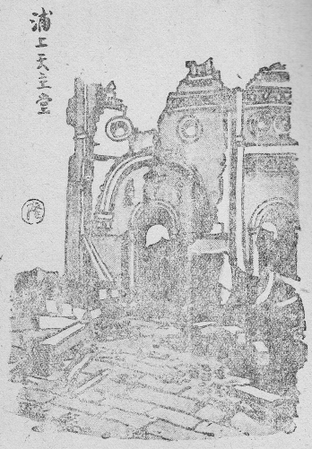
原子爆弾は人類に、まったく新しい資源の在ることを教えてくれた。ここに大きな情義がある。石油は乏しくなる。石炭の底は見えてきた。動力源がなくなると共に人類の文明も終わるのではあるまいか？ 人類生存の前途には絶望の黒岩が立ちふさがっていた。――その岩をあの原子爆弾は吹き飛ばしたのだった。原子爆弾の吹き飛ばした穴を通して、新しい世界の光が射し出すのを人類は見た。この穴から入って探せば、新しい動力はいくらでも取り出せるぞ、新しい物資はいくらでも引き出せるぞ、という明るい希望が人類の胸に湧いた。万物は原子から成り立っている。そこらじゅう原子だらけだ。この原子の内に神は天地創造以来こんなすばらしい力を隠していたのだ。しかもそれを探し出し、取り出し、利用する知恵も人類に与えてあったのだ。知恵さえ働かせたなら、まだまだほかにもたくさんの動力や物資を探し出すことができるにちがいない。
すべての被造物は人間にサーヴィスするために神から創られてある。せっかく人間の利用するために用意されてあるものを、利用しないで放っておくのは、人間の怠慢だよ。許し難い怠慢だよ。――額に汗して働け、と命じられている。ところが人類の多くの者はどこに汗を流して働いている？ 脚に汗しているじゃない？ 腕に汗しているじゃないか？ 労働は神聖だと言う、それはいい。労働といえば筋肉労働が主だと大衆は考えている。そして腕をまくり上げていばっている。彼らは衆をたのんで、脳を汗する者の値打ちを引き下げようとする。しかし、あの焼け跡の地ならしをするときに痛く感じたろう、日本の労働者がもっことくわで、腕と肩と脚に汗を流して幾百人か働いていたが、そのまだるっこさに、いきなり一台のブルドーザーがやってきて、またたく間に地ならしを仕上げてしまったことを。
腕力が貴いなら熊は人間より偉い。肩の力が貴いなら人間は牛にかなわぬ。走れば馬に負け、鼻は犬ほども利かぬ。人間の人間たる貴さは知恵と自由意志とを持っていることだ。筋肉労働だけにしか価値をみとめない者の独裁とは、知恵と自由意志をそなえた人間にとって、なんと縁遠い言葉ではないか？ 人間が人間らしい生活をするとは、この知恵と自由意志とを神の御意に従って正しく用いることだ。
人類が本能しか持たぬ動物と同じく、天然の資源を使い荒らしていた怠慢時代は過ぎたよ。あのピカドン一発で人類は居眠りを覚まされた。これから人類がその与えられた［＃「与えられた」は底本では「考えられた」］知恵と自由意志とを正しく用いて、隠された資源を次々探し出す時代になったのだ。知恵が勝ち、腕力が正当な地位まで後退する時がきている。人間が人間らしい生活のできるいい時代だ。誠一たちはその時代に生きる。うらやましいね」
「すると、原子爆弾は人類の居眠りをさます大気合いだったんですねえ」
［＃改ページ］
「宗教は神に仕える人の道だね。神は真理だ。だから真理に仕えるのが宗教だとも言える。一方、科学者は科学的方法をもって真理を探求している。つまり神から出るものを正しく見ようとしているのだ。宗教も科学も目標は同じ真理なのだ。二つは一つの方向を指している。二つは互いに反対するものではない。科学者が宗教を持つことはなんの無理もない、それどころか、まことの科学者は必ず正しい宗教を持っているはずだと言うことができる。事実において、近代の大学者はたいてい正しい信者だった」
「でも、科学者と教会とはけんかをして、教会の勢力をひっこませたから、近代科学が進歩したのだとも言っていますよ」
「それは教会に反対したい人びとが宣伝している空言だよ。そして科学者自身がそれを言ってるのじゃなくて、試験管を一度も握ったことのない文明批評家たちが言っているんだ。神に反抗した科学者もあったがね、そんな人の唱え出した仮説は一時人の注意をひいたけれども、いつのまにか誤りを証明されて滅びていったよ。ダーウィンの系統をひく進化論なんかそのいい例だよ。いまごろ進化論を真理だと信じている文明国はないからね。日本にはまだ人間が猿から進化したものと思っている人がいるそうだが」
「教会は地球のまわりを太陽がまわっていると言ってるそうじゃありませんか？ 今どき小学生だって太陽のまわりを地球がまわることを知っていますよ」
「よくその問題が出るね。宇宙ではたくさんの天体が秩序正しい運行を見せている。いったい宇宙のどの点を基として、各々の天体の運行を言いあらわすべきかね？ どこを基点にとってもいいじゃないか。地球を基点にとれば太陽が地球のまわりをまわることになるし、太陽を宇宙の基点にとれば、地球が太陽のまわりをまわることになる。北極点を基点にとれば、太陽も地球も動くことになる。――天動説、地動説と、なにもかんかんになっていがみ合うことはない。地動説のほうが計算が楽だから便宜上それをつかっているだけのことさ」
「それでは、科学的には地動説も天動説もどちらも真理なんですね？」
「どちらも仮説さ。人間の知恵は不完全なものだ。神の知恵は完全だ。不完全なもので完全なものをすっかり明らかにすることはできないよ。科学は人間の知恵の限りを尽くして、神の知恵を探っているんだ。けれども真理の近似点までしかゆけないね。だから科学の力で明らかにされたものは仮説だ。近似点はいくらでもあり得るよ。だから科学のほうでは、一つの問題についていくつも仮説がある。そのうちでいちばん真理に近そうなものが、一般の人の常識にされているわけだ」
「でも――科学によって真理があきらかにされる、と一般には言っています」
「それは科学の素人が言ってるのさ。そして真理という定義を正しく理解していないのさ。真理というのは永遠のものだよ。科学の学説は時代とともに変わっているよ。天動説が
「原子というのも仮説ですか？」
「仮説だよ。そういう概念をもって説明するのがいちばん都合がよさそうだから、いまそれが
「じゃあ、原子核のまわりを陰電子がとびまわっている、というのはうそですか？」
「うそか、ほんとうか。それが科学の力だけではわからないのさ。しかし、原子学が進むにつれて、今日の考え方とは違った考えが
「科学は真理をつかむことができない、というわけですか？」
「科学は真理を探求する。探究はできない。求めるだけさ。究めることはできないのさ」
「それじゃ科学をやっても意味ないじゃないですか？」
「何を言う！ 大いに意義ありだ。科学実験をしてみればその意義がわかるよ。自分の手で正直に実験をしているうちに真理探求の歓喜が体験される。科学の力では真理をつかまえることはできない。つまり神の正体を見ることはできない。けれども神の
「科学をするのに信仰はぜひ必要でしょうか？」
「ぜひ必要だ」
「なぜ？」
「信仰は真理の光に照らされることだ。信仰生活とは真理の光に照らされて、正しい道を進んでゆく生活だ。暗い海を行く船が灯台の明かりに照らされて無事に目的の港へ進むように。――信仰の光に照らされるのは、神のほうから賜るお恵みをいただくことで、人間の力だけでは照らされることができない。さて科学者は暗い夜の闇に真理を探しているんだ。そのとき正しい信仰をもたない人は、つまり神を否定している人は、黒い目隠しをしているんだから、せっかく真理のほうから照らしてくださっている光に気がつかず、あらぬ方ばかり探して、結局無駄骨を折るのさ。信仰をもっていると、神すなわち真理からの直射光に照らされているから、一直線に真理に向かって進むことができるわけだ。信仰がなくても、まぐれ当たりにいい方向へ向くこともあるから、信仰をもたぬ科学者だって真理に近づくことはあるよ。けれども確実ではないね」
「信仰さえもっていれば研究の能率が上がるってわけかしら？」
「正しい信仰が必要だ。どんな信仰でもいいというわけじゃない。それから、いつもへりくだっていなけりゃいけない。つつしんで宇宙の創造主の御業の一部を拝見させていただく気持ちで、実験をしなければならない。つまり、私たち科学者が実験室で実験しているのと、修道士が修道院で祈っているのと同じなのだ。実験は祈りだよ」
［＃改ページ］
「イエズスは奇跡を行なってパンを殖やしなさったそうですね。今イエズスがここへおあらわれになって、このパンをたくさんに殖やしてくださったらうれしいな」
「イエズスからパンをいただいた人びともそう考えたから、イエズスのお気に入らなかったんだよ。イエズス・キリストは愛の神であったから、目の前に悲しみ苦しんでいる人をあわれんで、死人をよみがえらせたり、病気をなおしたり、パンをいくらでも殖やしてたくさんの人の空腹を満たしてくださったけれど、それはイエズスが真の神である証拠を見せるためで、そんなふうにしてこの世の肉体的な苦しみから人間を救うのが神の主な目的ではなかったのだ。イエズスが人間に求めていたのは、人間が永遠の生命を得ることを祈るように、というのだった。永遠の救いを与えるのが主な目的だった。――覚えているだろう？ イエズスが四十日の間荒野で断食していた時、飢えを覚えたら、悪魔が近づいて傍らの石ころを指さし、全能の者ならばこれをパンに変えて食ったらよかろう、と言ったね。するとイエズスは『人は活けるはパンのみによるに非ず。また神の口より出るすべての
「だけど皆、パン、パンと言っていますよ」
「人間のあさましさだから仕方ないさ。いくら神のことばを伝えようと教会が努めても、群衆は教会の前を素通りして、ヤミ市場のほうへ行くんだからね。今のところでは、まず神のことばを落ち着いて聞けるだけ腹を満たしてやらなければなるまい。つまり肉体を健康に保ってゆけるだけの物をまず与えることだね。むずかしく言えば、人類を物質的貧困から救うことだ。これは人類が神のことばを聞く上に必要だろうと思うよ。このごろ盗難が多いそうだが、これも物が乏しいから、やむにやまれず罪を犯すのだろう。また貧しいための一家心中も多いそうだね。自殺は大罪なのだが、これも物があったら地獄行きの死に方を選びはしなかったろうものを。――この生活に必要な物を民衆に与える仕事はだれの受け持ちだろうか？」
「それは政府でしょう」
「なるほど、直接配給に当たるのは政府だね。しかし、もっと根本的に考えて……」
「生産者でしょう」
「そう。生産者だね。――しかし、もっと根本的に考えてみると？ ……」
「ああ、わかった、科学者です。知恵を正しい方向に動かし、発明発見をして新しい物や新しいエネルギーを人類の生活に取り入れる科学者です」
「そうだ。人類を物質的貧困から救い上げるのは科学者のつとめだ。人間は貧しくなくなると、労力と時間とを浮かすことができる。この浮いた時間と労力とを神のことばに従って用いることができる。つまり教会に行き、神の事業をすることができるわけだ。――しかし、これはほんとうのことを言うと逆なのだがね。ほんとうの人間の生活はまず神のことばを聞くことで、食うためにばたばたするのは第二なんだ。ベタニアのラザロの家をイエズスが訪れ、お話をしていると、姉のマルタはイエズスの一行にご馳走を出すため台所でばたばたしているのに、妹のマリアはイエズスの傍らに座ってお話を聞いていた。姉は腹を立てて、イエズスに向かい『主よ、私がこんなに働いていますのに、妹はなにもせずにのんきにお座敷に座っています。どうか台所へ来て手伝うように言いつけてくださいませ』とお頼みしたのだ。すると、イエズスはなんと言ったと思う？ ――『マルタ、マルタ、そちは様々なことにあれこれ心配してばたばたしているが、必要なことはただ一つあるだけだ。妹のマリアは今その必要なことをしているのだ。じゃまをしてはいけないよ』と、こう言ったのだよ。必要なことはただ一つ、神のことばを聞くことなのだ。台所でばたばた食べ物のことで心配しているのは第二以下のことなのだ。――けれども、現代の人びとはあまりに肉体を大切に考えすぎているので、まず神のことばを聞け、と話してみたって、耳をふさぐか、背を向けて逃げるか、歯をむいて跳びかかってくる。それでまあ仕方がない、教会が神のことばを伝えている一方、科学者は人類の生活を豊かにするように努めてゆくんだね」
「でもね、お父さん。科学が盛んになって、物質的生活が豊かになると、物の有難さだけが目について、宗教は衰えるそうですよ」
「そんな見方もあるね。しかし、それは宗教が正しい宗教でなく、科学の成果が人間の自由意志によって悪用される場合なんだ。アメリカや西ヨーロッパをごらん。キリスト教はとても盛んだよ。ことに生活の豊かな南アメリカなんか素晴らしいものだ。ところが反対にキリスト教を迫害する東ヨーロッパの民衆のみじめさはどうだ。国民が貧乏になるとキリスト教反対の共産党が盛んになる。そこで共産党が盛んになるためには国民を貧乏にしておくことが必要になる。ストライキ、官庁襲撃デモなど、いろいろな手段で国民を貧乏にしておくように、国家が豊かにならぬようにと運動をしているわけだ。なかなか考えてるね。これに対抗するためには、キリスト教の隣人愛によって共産党の魔の手に引っぱられようとする貧しい人びとに食物を与え、着物を与え、家を与え、新しい仕事を与え、一方では神のことばを説くことが必要だ。つまり科学者の仕事は神のみ国を建てるその基礎工事だね」
「科学の力によって、人はどのくらい時間と労力とを浮かすことができるでしょうか？」
「うむ。――科学の発達していないころには人間の労力で何もかもやらねばらななかった。そこで奴隷というものが使われた。この奴隷が主人のために使いに行ったり、薪を切ってきたり、炊事をしたり、魚をつったり……一切の世話をしたものだった。ところが今は電話がある、電信がある、郵便がある。奴隷の使いはいらなくなった。電熱器がある、ガスがある、スイッチをひねるか、ライターをぱちんとやれば炊事はできる。山へ行って薪を切ったり、その薪を割って乾かしたり、火打ち石でかっちんかっちん火を出したりする奴隷はいらぬ。捕鯨船、冷蔵装置などのおかげで南洋の鯨もここで食える。という具合いで、現代のアメリカ人の生活は一人が八十人分の人力を使っているのと同じだということだ。つまり科学の力で、今アメリカでは人口の八十倍の人間の時間と労力とが節約されて浮いていることになる。どうだ？」
「やあ！ 大したものだなあ！」
「誠一が今、このお茶をお父さんに入れてくれたのだが、何分かかったろうね？」
「さあ、井戸からくみ上げて、湯沸かしに入れて、七輪に火を起こして、ばたばたあおぎながら沸くのを待って……」
「これが科学的な設備が壊されずに残っていたら？ ――」
「水道をひねって、電熱器のスイッチをひねれば、おしまいだよ」
「ね、何分間かが浮くだろう。一つの仕事をするのにもこれだ。それが積もり積もれば大したものさ。叔母さんが配給所の前に立たされている時間のむだと脚の疲れだけでもなくしてあげたいものだね。――そこで、人間が物質的貧困から救われて、肉体の生命を保つのに必要な物が思うように手に入るようになったら、人間は何をするのだろうか？」
「腹いっぱい食べて、あたたかい布団にくるまって、ラジオの音楽を聞いているうちに、眠ってしまうのじゃないでしょうか？」
「そんな人もないじゃないが――そんな愚かな怠け者は問題にしないがいい。真面目な人について考えてみよう。肉体について思いわずらうことがなくなれば――？」
「霊魂について考えるよりほかに仕方はありませんね、結局」
「そうなるわけだろう？ ねえ。――霊魂とは何か？ 霊魂の幸福とは何か？ 霊魂はどこから生まれたか？ 霊魂は生きている間にどんな働きをするか？ どんなふうに保たねばならぬか？ 死んだら霊魂はどこへゆくか？ ……結局、神の問題になるわけだ。人間一人一人がこの問題について深く考えるようになったら、世の中が美しくなるのだからねえ」
「早くそんな世界にしたいものですね」
「そのために、まず私たち科学者は大いに奮発せねばならん」
［＃改ページ］
お父さんの跡をついで医者になりたいような話だったが、もし医者は死ぬ患者の命を救うようなよいことをするから、という理由でなりたいのだったら、あてが外れるよ。
お父さんも医者になったばかりの若いころには、患者の命を手の中に握っていて、生かすも殺すも自由自在だとうぬぼれていたものだった。開業医から見放された重病患者を引き受けて、ラジウムなんかでうまく治し、退院する患者からおがまれたりすると、自分の腕に自信をつけ、威張りかえったものさ。ところが治療がうまくゆかずに患者が死ぬと、大失敗をしたと思いつめ、すっかりしょげたものさ。つまり、患者を私の腕の成功不成功で生かしたり殺したりするものと信じこんでいたのだね。
ところが、だんだん経験を積むにつれてこの自信がぐらつき出してきた。とても助かるまいとさじを投げていた患者が思いがけなく全快したり、これはきっと治してみせると請合った患者がぽっくり死んだりすることがある。医者としての体験もたくさん積み、腕も磨かれてくると、患者を生かす殺すの力は自分にはないことが次第にはっきりわかってきた。私がこの患者は死ぬと診断していたのに、死なずに元気になる。あるいは他の開業医が助からぬとさじを投げていたのが治る。そんなのは、医者の下した予後判断がまちがっていたのであった。治るはずのものだったから治ったのだ。百方手を尽くしたにもかかわらず患者が死んでしまうのは、死ぬべくして死んだのであって、医者の失敗ではなかった。医者が患者の生命を助けたとか、治療を失敗して死なせてしまったとか言うのは、医者の高慢である。身のほど知らずと言うべきものだろう。
神は「なんじらのうちだれか工夫して己が寿命に一肘でも加うることを得んや」と言っておられる。どんなに工夫したって、人間の力で寿命を一尺でも延ばすことはできないと、はっきり言われているじゃないか。一羽のすずめでさえ神の思し召しがないかぎり、地に落ちることはない。まして貴い人間の生命――これは、それを創った神の思し召しのままになる。医者の力では歯が立たぬよ。
それでは医者はなんのために患者の手当てをするのか？ と聞きたいだろう。
医者の仕事は病人と共に苦しみ、共に楽しむことだ。病人が腹の痛みに苦しんでおれば医者もいっしょに苦しんで、さてどうしたらこの苦しみを軽くしていただけるかとそれを念ずる。患者が死にかけて、はらはらしているときには、医者もはらはらして、なんとかして死の手から離したいものだと心を砕く。病人の熱が下がってほっとすれば、医者もほっとする。病人がようやく元気になり、おかげさまでとあいさつすると、医者もおかげさまでとあいさつを返す。……
医者としての経験を積めば積むほど、自分の腕に自信がなくなって、しまいには赤ん坊の母親みたいに、病人に向かうたびに、はらはらするばかりの人間になってしまうものよ。老人を診察するときには、自分の親を診察するような気持ち、同年輩の人に注射するときは、兄弟に注射するような気持ち、子供を手術するときは、わが子に手術するような気持ち、血のつながった身内の者が病気で苦しんでいるのを見るのと同じ気持ちになる。そして、他のことは何もかも忘れて、どうしたらよいかと、うろうろ、はらはら、本を読み直したり、試験管を振ったり、レントゲン写真をこまやかに読んだり、注射薬を選んだり……。
お父さんが医者として、どうにか勤めてきたのは、それだけのことだった。
ただ知恵をしぼり、腕の熟練をはたらかしてゆくだけの仕事なら楽なものだが、医者は肉体の修繕をするだけじゃないからね。心で患者と共に苦しむだけではなく、肉体にも病人の苦痛に共鳴を起こし、肉体ごと苦しまなきゃならなかった。
病人の運命を決定するのは結局、神の思し召しだ、と気がついて、それからは、病人の診察が祈りに変わってきたね。注射するのも祈り、透視するのも祈り、いつも病人の上に神の祝福を祈りながらするようになった。
［＃改ページ］
誠一の受け持ちの池田先生のお話によると、お父さんの跡をついで、原子医学を専門に選びたいような志だそうだが、なぜそんな志をたてたか？ また学会全般の事情も知らぬので、近ごろ新聞雑誌でさかんに原子学が取りあつかわれているから、これがよかろうと簡単に決めたのなら、ちょっと軽率だと言いたいね。これはお父さんが生命をかけて研究した問題だ。生命をかけるほどの気持ちになったことだけ考えても、この研究がどんなに面白いかがわかるだろう。こんな面白い学問は、今のところほかにあまりないと思う。だから誠一がこの研究に一生をささげる値打ちは十分ある。たといどんな犠牲を要求されてもね、やってやりがいのある仕事。世間には食うために、性分に合わぬ職業にかじりついて、あたら一生をタオルをしゃぶるような味気なさで過ごす不幸な人も多い。生まれ変わってくることのできない人生をそんなふうに過ごしたくないね。毎朝いやいやながら職場へ出るなんて、考えてもいやだ。それに比べて、たとい収入は少なくても、犠牲は大きくても、好きな仕事に一生を打ちこむことは、なんという大きな幸福だろう！ お父さんは今こうして床に就いたきりだが、もし病気がよくなって、少しでも歩けるようになったら、すぐあのなつかしい研究室へ行くよ。いつかお父さんが青年に話したことがあったね。「食欲より職欲」――食いたいよりも働きたい欲のほうが大きい。そんな仕事を専門に選びなさい。
ところで一つ考えねばらならぬことがある。それは科学界は絶えず動いているということだ。科学全体としては着々進歩している。細かく見ると、たくさんある部門のうちのあるものが不意に顔を出して目ざましい発展をとげることがある。古くからの問題が次第に完全な解答に近づくのがある。原子学の如きは五十年前に初めて生まれ、最近になってにわかに人の目を奪うめざましい進歩をとげた。ペニシリン、ストレプトマイシンのごときは最近顔を出したばかりである。これから先、人びとがあっというような新しい部門が飛び出すにちがいない。それは今ごろ、どこかの小さな実験室で、一人か三人かの科学者が人知れずこつこつ研究を続けている仕事なのだ。
誠一が大学を出て専門を決めるのは十年先だ。十年先に原子学がどんなになっているだろうか？ さらに五十年ばかり先、研究の一生を終わるころ、原子学はどの程度の学問的魅力を保っているだろうか？
お父さんが原子学の勉強を始めたころには、日本ではまだこの方面が一般に認められておらず、大変な屈従を強いられたものだった。この方面に志す学者は年に指折り数えるほどしかいなかった。それだからお父さんでも今、原子医学界では日本の中堅どころとされているが、それでもアメリカの最近のこの部門の進歩に比べてみると、すっかり立ち遅れていると感じるよ。まして今ごろから原子医学をやり出すようでは、まるで昨日のマラソンレースに今日スタートするようなものではないかな？
どうも日本人は外国人の真似が上手と言われている。科学界でもやっぱり流行のあとを追っかけている傾向があるね。論文にも、追試とか補遺とかが多いよ。追試というのは他人のはじめてやった実験をもう一度やってみることだ。補遺というのは、大体できあがった他人の研究の、どこか足りない小さな穴を埋めるだけのことだ。発明とか発見とかいう大きな仕事は、人真似根性ではできないね。今ごろの中学生や高等学校の生徒が、原子学をやりたい、と希望するのも、この人真似根性じゃないかね？
若い人はもっと途方もない夢をもつべきではあるまいか？ 一般の人がそんなことはとてもできないと思いこんでいるようなことを。たとえば、ベーリング海峡をせきとめる方法だとか、ねずみを皆殺しにする方法だとか、怒ることのできぬ薬だとか、何回でも柔らかくして型を変えることのできるコンクリートだとか、火事にならぬ燃料だとか、傷をくっつけるのりだとか、空中電気を集めるとか、足の裏を靴底みたいに固くしてはき物なしに歩くとか、写真は実物を平面に写すのだが、立体をそのまま一瞬に再現できる方法だとか――これは写体と名づけるかね、……そんな発明をやってみようと志を立てるほうが、若い人にふさわしいじゃないか？
空を飛ぶ――むかしの人の夢は今実現している。海の中をくぐる、声を遠くへ届かす、働く姿を世界中の人に見せる。夏に氷を食う、痛みなしに手術を受ける、しらみを皆殺しにする、疫病を防ぐ……今私たちが毎日の生活の中で、なんの驚きもなく平気で行なっていることは、昔の人には欲しくて、しかも手に入らぬ夢の宝だったのだよ。
若い科学者は夢をもちなさい。しかもただ一つの夢を。それが人生のうちに実現するか、しないかわからぬほどの大きな難しい夢をもちなさい。そしてそのただ一つの夢に一生をささげなさい。
原子学は、すでに若い人のもつにふさわしい夢というには、古すぎるように思われる。
［＃改ページ］
宝石を掘り出す坑山労働者は、宝石を飾る人とまったく反対の生活を送っている。明るいシャンデリアの下で、おいしい酒に酔い、楽しい音楽に乗って、踊りあそぶ貴婦人の胸に輝く宝石は、だれがどこでどんなにして探し出したのであろうか？ ――人の住まぬアフリカの山の中にぽっかり口をあけている坑の中へ、額灯をたよりに入って、行き行きて行きついた突き当たりの土に向かって、つるはしをふるう労働者。小さな石ころ一つにも、宝石か、ただの石かと鋭い鑑別の目をそそぎつつ、全身の力をこめて、新しい土を掘り開けてゆく。ただ美しい宝石を見つけ出そうという意志と、必ず出るという信念と希望と、見つけ出すまではやめぬぞという忍耐と、あくまで掘り続ける体力と。――一生掘り続けて、ついに宝石を見つけ出さずに終わるかもしれない。たくさんの先輩がそんなふうで志半ばに坑の中で死んだ。だが、言葉どおりしかばねを乗り越えて次の者がつるはしを受けついだ。掘り出した宝石をだれがどこでどんなに用いるかは知らないが、罪のもとにだけはなってくれるな、と念じながら掘ってゆく。――
――科学者は文明を生産する労働者だ。だれも見ておらぬ実験室で、心の力を尽くし、体の力を尽くして、こつこつと文明を探し出している。ただ、こうして探し出した発明発見が罪に用いられないようにと念じている。
文化生活、文明社会。人類が明るく朗らかに便利に暮らしているとき、科学者は貧しく苦しく、胸にも鼻の頭にも手のひらにも汗を流して文化財を生産している。
文化生活を鼻にかけている現代人の多くは、文化の単なる消費者にすぎない。ふかぶかとソファーにうずまり、ココアかレモンスカッシュをすすり、電気蓄音機から流れ出るチャイコフスキーに耳を傾けているが、それらの文化生活をおくる家具家財を買うだけのお金を、文化財を右から左へサーヴィスしてもうけたばかり……。
生産者は消費生活と縁がなく、消費者は生産生活の苦しさを知らない。
＊ ＊
一輪の白百合が庭に咲いたとて、枕もとにさしてもらった。原子野では三年目の今年、初めてもろもろの花が常のごとく咲くようになった。昨年も咲くには咲いたが、変てこだった。久しぶりに見る百合の美しさ、貴さ。なんというすばらしい神のみ業だろう！ たしかにソロモン王の栄華の極みにおける装いよりも優れている。いいなあ、百合はいいなあ。花をつくらば百合にかぎる。白百合にかぎる。見舞いに来る人ごとにこの百合を賞めた。
三日目に、女学生の一組からひと束の百合を贈られた。花の数はいくつあるであろうか、ひと目見て二十より下るまいと数えられた。それをどっさりと大きな花びんに投げ入れた。それはもう花ではない。一つの輝く塊であった。美しいというより、まばゆいのである。賞めるどころではない、圧されてしまう。眺めてはおれぬ、酔わされてしまう。友が訪ねてきたが、入口の戸をあける前に「おや、百合があるな」とつぶやくのが聞こえた。そして中に入るやいなや「いい香りだ」とつぶやいた。
一つの国の科学界もこのとおりだ。一人、二人の科学者が賞められ、眺められ、話題になっているようでは真にさみしい。何百人何千人もの優れた科学者のいる国、ノーベル賞受賞者が幾人もいる国では、一人一人の科学者は目立たない。そしてその国には科学の香りがみちみちている。国の外まで香っている。
［＃改ページ］
おたまじゃくしに足が出て、尾が短くなって、やがて蛙になる。えらい蛙も、ばか蛙もおらぬ。皆同じ蛙だ。まったく平等に生まれて、まったく平等な蛙になる。ところが、この蛙は社会制度をもつことができない。同じ力をもったたくさんの蛙が寄り集まって、夜通しがやがや騒いでいるばかりである。
もし人間がみな平等な能力を持っていたら、こんな都合のいい社会ができたろうか？ 全人類が一様に総理大臣級だったら？ 全人類が一様にお人好しだったら？ どちらにしても、寄ってはがやがや言うばかりで何もしないだろう。人間の生まれつきの能力が平等でないからこそ、社会制度がうまくゆくのではあるまいか？
人類社会全体がうまくゆくためには、各人の生まれつきがそれぞれ違うほうがなるほど都合がよいかもしれないが、生まれつき頭の悪い人、体の弱い人、貧しい家に生まれた人は損ではないか？ 神が、もし一人一人を愛して創られたものとするならば、各人に対する神の愛に大きいのと小さいのとあったのか？ 神の愛に不公平があるのではないか？
天才は楽々と大発明をして世の人からかっさいを受けるが、鈍才はいくら勉強しても上級学校に入学すらできない。
頭がよく、体が強くても、家がその日の暮らしにも困っているようでは、その才をのばすことができず、山の中で朽ちてしまわねばならぬ。
人間は、母の胎内に宿る時初めて創られるもので、その前はまったく無である。別に前世というものはない。もし前世があるならば、前世の因果があらわれて、生まれつきの幸不幸があるのもよかろうが、前世がないのだから、人間の生まれつきの違いはその人の責任ではなく、まったく神の思し召し次第で決められるのである。なぜ、神はこんな不公平をなさるのであろうか？ ――
イエズスの一行がエルサレムの宮の前に来かかると、そこに生まれつきの盲人が施しを乞うて座っていた。弟子はイエズスに向かい、
「この人が盲人に生まれたのは、だれの罪によりますか？ 本人の罪ですか？ それとも両親の罪ですか？」
とたずねた。イエズスは、
「この人も両親も罪を犯したわけではない。盲人に生まれたのは、この人の身の上に神のみ
と答え、奇跡を行なってその目を見えるようになさった。
世間の常識で、不幸不運と思われている病弱・貧しさ……これらは皆、やがてその上に神の光栄あるみ業があらわれるためなのである。こんな人びとが素直な心をもちつづけておりさえすれば、いつかは神のみ業があらわれるのだ。不幸不運な生まれつきだけではない、各人がいただいている生まれつきはそれぞれ違っていても、必ずいつかはその身の上に神のみ業があらわれるのだ。神のみ業がいろいろの形であらわれるために、いろいろの生まれつきがあるのだ。人間一人一人が神の光栄あるみ業のあらわれる者としてはまったく平等なのである。
人間が立身して大政治家になるとか、大学者になるとか、金持ちになるとかは、神の目から見れば、人生の目的ではない。それは神を知らぬ人びとの目から見た人生の目的である。人生の真の目的は「神を知り、神を愛し、神に仕えて、ついに天国の幸福を得る」ことである。
この目的を達するためには、生まれつきの違いはまったく関係がない。目が不自由でもこの目的なら十分達することができる。能力がさほどない人も天才も同じように達することができる。貧しいから神を知ることができないとは言えない。
神を知らずに一生を過ごしたら、いくら大将軍となって諸国を征服したって、人生の目的を達したことにならない。神を知っていても神を愛せず悪魔の友となったら、いくら大思想家と歴史に名をとどめても、人生の目的を達しなかった人である。神、神と口で盛んにとなえていても、日々の生活が悪魔に仕えている人は人生の目的を達することができない。
誠一もカヤノも天才的なところがない。あたりまえの才能しか与えられていない。おまけに家は豊かでない。しかし、きっと神のみ業が身の上にあらわれる。それを楽しみに、素直に神を愛しながら生きていってほしい。人生の真の目的を誤らないように。――
［＃改ページ］
死んでから神から審判を受ける。そのとき問題になるのは、生きていた間に「何をしたか？」ではなくて「いかにしたか？」である。「だれの子であったか？」は問われない。「子としていかに親に仕えたか？」が問われる。「職業は何であったか？」はまったく問われないで、「自分の職業をいかに勤めたか？」が問われる。天国へ行ってからは、この世での身分の高かったこと低かったこと、賢かったこと愚かだったこと、強かったこと弱かったこと……は、消えてしまっている。
天国へ行ってからも社員は重役の前では頭を下げるわけではない。社員として正しくまじめに勤めた者は、少しずぼらだった重役より上席についているだろう。そして、お互いに重役だったことも社員だったことも考えないだろう。
重役と威張っているのも死ぬときまで、教授とうぬぼれているのも生きているうち、千万長者の奥様と長屋のおかみさんと差別つけられるのもこの世限り、あの世へ行ったら大臣も事務職員も船長もコックも、王女も看護婦も、校長も、用務員も、横綱も足の不自由な人も、代議士も職人もない。神の目には職業の種類、賃金の高低、体裁の良悪、人気の有無、地位の高低、規模の大小はとりあげられないで、その一人一人が与えられた才能を十分に働かせる職業を選んだかどうか、その職業に忠実であったかどうか、そして神のみ栄えをあらわしたかどうか、という点が調べられ、その成績によって、霊魂のいただく名誉が定まるのである。
世の中には豪傑ぶって、おれは金もいらぬ、名誉もいらぬ、学位もいらぬ、生命もいらぬ、と大きなことを言い、何もせずに貧乏している男がよくいるものだが、金もうけもできず、名誉ある地位にも登れず、勉強もしたくないくせに、口先だけ偉そうに威張っている怠け者が多い。金はいらぬ、と言い得る人は、実際手の中に大金を持っている人でなければならぬ。学位はいらぬ、と言う人は、学位を与えられるだけの研究論文を発表しておらねばならぬ。
神の前では学位も名誉も財産も意味はない、どんな職業も問題にならぬ。大臣であろうと教授であろうと、用務員であろうと守衛であろうと、まったく関係ない。要は、各人が与えられた才能を十分発揮する職業に就いて、神を愛し神に仕え、神のみ栄えをあらわしたのでありさえすれば、どんな職業でもかまわないというのである。
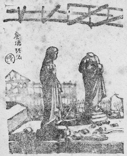
田んぼのあぜをまわって、ホーイホーイと雀を追い立てる仕事しかできない者であったとしても、雀追いを一生の間まじめに勤めて村のために働いたら、神の目から見て、人生成績に満点がつけられる。大臣になれる才能を与えられておりながら、途中でちょっと勉強を怠けたため次官にしかなれなかった男は、神の目から見て九十点がつけられる。そこで天国では雀追いが次官よりも上席に着くのである。天国へ行ってから、雀追いが次官の上になるのではない、生きている間からすでに上にいるのだ。どんな人でも職業によって値打ちを決められてはならない。与えられた才能を十分発揮しているかどうかによって、人間の値打ちが決まるのだ。たとえて言えば、銀行の頭取が投資に失敗して預金者に迷惑をかけるようだったら、ぞうり一足まちがわない番頭さんのほうが偉いというようなものだ。
頭がいいからといっても、ちっとも自慢にはならない。それは神が、人類社会全体の都合を考えて、その人にそのいい才能を発揮させるために与えられたのだから、その人の手柄ではない。頭がよくて博士になり教授になり、あるいは大臣になったのも、その人の手柄ではない。それも人類社会に必要な一つの地位にすぎないのである。そしてそこには、それにふさわしい人間を置かねばならぬからである。
［＃改ページ］
私たちは生きている。生まれたのが何年何月何日、死ぬのが何年何月何日。つまり時間に生きている。日記をつける、四月二十九日、五時半起床、六時ミサ、八時半から教会の運動会……などと書く。これは時間の生活だ。
ところが時間に生きていると同時に、私たちは永遠の生活もしている。永遠というのは時間が無限に長いことではない。時間とは性質がちがう。永遠とは、私と神と直接関係をもつ体験なのだ。つまり神の御意にかなう善を為すのが永遠に生きることであり、神の御意にそむく悪を為すのが永遠に死ぬことである。やさしく言うと、神のお手もとの成績帳に◎や×を書き留められるのが永遠である。
ところが私たちの生活の中には、神の手帳に◎も×も書き留められないこと、すなわち善でもなく悪でもないことがたくさんある。たとえば夜に眠る、道を歩く、飯を食う、雲を眺める、呼吸をする、かゆい所をかく、くしゃみをする、野球を観る、ラジオを聞く……こんなことは日記には残っても神の手帳には残らぬ。神の手帳には空白だ。
時間は世界の終わりの日になくなってしまう。来世はこの世の時間の延長ではない。人間の日記、すなわち歴史は世界の終わりと共に跡形もなく消えてしまう。時間の生活もそれきりだ。残るものは永遠の生活記録だけ。
死んで神の前に立ち、一生の成績帳を示されたとき、空白だったら……なんのために人間に生まれたのかわからない。こんな人は多いものと思われる。なぜなら、善いことと世間で言われていることでも、それを自分のためにするならば、神の手帳に善と書き留められないからだ。――まじめに勉強する、これは悪いことではない。しかし自分が優等生になって賞められるために、あるいは試験に及第して免状をとり、自分が食ってゆくために勉強するならば、神とは関係がないから善にはならない。せっせと汗を流して米を作る、車を引く、石炭を掘る、どんなに働いても自分の食うために働いたら、時間の生活であって永遠の生活にはならない。たといお金をたくさん孤児院に寄付しても、無料で多くの病人を治療しても、自分の名を世間に知らせ、世間から慈善事業家とか愛の使徒とか言ってもらいたいためにするなら、神の手帳には善と書き留められない。空白のままだ。歴史の上に名を残した英雄・豪傑［＃「豪傑」は底本では「豪勢」］・芸術家・宗教家・政治家・美人・学者は多いが、そのうち果たして幾人が神の手帳に善と書き留められているだろう？ その人たちの多くは自分の名誉のために一生をささげたのであろうから、時間に生きただけで、人間の歴史にはでかでかと書き上げられたが、世界の終わり、時間の終わりと共に跡形もなく消えてしまうであろう。
この一生は天に宝を蓄える働き場である。毎日毎日、毎時毎秒、時間に生きながら、永遠に生きる工夫をせねばならぬ。小さな永遠の宝を積まねばならぬ。絶えず小さな善業を行なって神の手帳に善、善と書き留めていただかねばならぬ。――では、どうしたら小さな宝が作られるか？
為す業が宝となるかならぬかは、それを為す意向で決まる。
「神のみ栄えのために！」
こう念じてすることは、神と直接関係をもつから、永遠である。どんな小さなことでも――わらくず一本拾うことでも、路の小石を一つ除けるのも、のびた爪を切るときも、神のみ栄えのためにするならば、神は善と見たもうのである。夜に眠るときも、今日の働きの疲れをなおし、明日さらに元気を出して神のみ栄えのために働けるよう眠ります、と念じて眠れば、これを善とされるのだ。さっき言った善でも悪でもないこと――飯を食う、呼吸をする、くしゃみをすることなども、神のみ栄えのためにするならば、永遠の善業となるのだ。いつも神のみ栄えのためになることだけするように努める。み栄えにならぬことはしない。――この心がけを持ち続けてゆけば永遠に生きるのだ。
そして有難いことには、この生き方はどんな境遇の人にでもできるということだ。神はまったく公平だよ。もし社会のため国家のためになる仕事をしなければ神から善とされないなら、お父さんのような病人はまったくこの点で絶望せねばならない。社会に対し国家に対しなんのお役に立てぬどころか、ごやっかいになるばかりだからね。しかし、神のみ栄えのために、ということになると、いくらでも病人にできる仕事がある。そして生きている意義を感じる。悲観して早く死にたいなどという気持ちの起こるすきもない。
神のみ栄えのために！
することはいくらでもある。楽しいね、人生は――。
［＃改ページ］
骨髄性白血病患者は骨の痛さを訴えるのが特徴の一つだとは、学生時代から覚えているのだが、さていよいよ自分で痛んでみると、学生時代のように冷淡に骨の痛さを訴えるのが特徴などと言ってはおられぬ。どうも医学書の文章は同情がない。この痛さを文章に簡単に書きあらわすのが第一すでに不人情だ。骨が痛むというのは、実にどうもなんとも言いようのない、面白くない感覚である。脂汗を流してうんうんうめくほどなら張り合いもある。神経痛みたいに、素晴らしく顔をゆがめるほどなら人にも話せる。痛むともなく痛まぬともなく、どこと定まりわからず、全身の深いところに、もやもやと痛むものがわだかまっている。じっとしていても骨みずから痛みを生じている。触れれば、ずうんとくる。たたけば飛び上がるほどだ。いちばん痛いのが脛骨、それから胸骨、あとは似たり寄ったりだが、肋骨は皮一重の下にあるので、なにかと物が触る度に、ずうんと痛む。もとは七十一キロもあってスポーツできたえた身体だったが、このごろは骨の数えられるまでやせているので、布団の重ささえ骨にひびく。
もう一つの切なさは腹である。脾臓がのさばって胃腸や心臓をおしつけているので、食べ物は多くは入らず、腸の通りは悪く、息切れはする。妊娠十か月の婦人が肩で息をついているのと同じだ。妊娠のほうはやがて赤ちゃんが生まれたらめでたしめでたしだが、私の脾臓は出てゆかない。両脚の血のめぐりは悪くなって、軽いひきつけがくる。
――そこで私はうめく。さすってもらうと少しは楽になる。このさすり方がむつかしい。強くさすると骨にこたえる。やわらかにさすらねばならぬ。そんなに面倒なら自分でさすればいいと思うが、腹が木魚のようにふくれ出しているので、体が曲がらず、手がとどかないのである。大人にさすってもらうとかえって痛い。それで訪問客のあるときにはうっかりうめくことができない。さすり役は子供にかぎる。誠一の手もカヤノの手も肉が柔らかで、芯の骨もしなやかで、力も弱く、さすってもらうには最も適している。二人のわが子にさすってもらっていると、まるで自分の手で思うままにさすっているようだ。――これが骨肉というものであろうか？
さすってもらううちに、いつしか痛みも忘れ、私は快い眠りに入りゆく。
夕食のあとなどでは、子供のほうが先に眠りにおちいる。――さする手がおのずから休み休みになり、やがて止まり、ぐっと小さい体重が脚の上にかかってきて、安らかな寝息が聞こえてくる。
［＃改ページ］
門辺のつるばらが枝も垂れるほどに咲いた。これは戦災を受けたあくる年の春、神学校から枝をもらってきて、まだ家も建てぬ焼け跡に差しておいたものである。三年目の春、すでにこんもりとした茂みになって、いま、門辺を過ぎる人ごとに、いいわねえ、と心を楽しませて通る。この原子野に住む人も、ようやく花を賞でるゆとりをもってきたようだ。これから家ごとに花を植えてくれるだろう。早く瓦を片づけて、花咲く里にしたいものだ。
カヤノが一枝切ってきて、枕もとの花びんにさしてくれた。朝のうちにつぼみがふくらんでいたのが、昼ごろにはほころび、夕方には初々しい深紅に咲き開いた。そのころには鉛筆の先に紅をふくませたように次のつぼみがふくれていた。こうして、次から次に花は枕もとに咲いた。よく見ていると、葉も大きくなってゆく。つるばらの一枝は花びんの中で、門辺の元の木と同じく成長を続け、実を結ぶために、虫の目をひく美しい花を咲かせている。
この一枝を見ていると、四、五日もしたら、あえなく枯れる気色は見えない。いかにも生気があふれている。希望にみちている。そして現にどんどん仕事をしている。幹は花びんの水をせっせと吸い上げている。若葉の細胞は増殖をやめない。つぼみの中は紅の色素を作るのに大馬力をかけている。
枝はカヤノの手で折られているのだから、いくら葉を大きくしたところで、しょせん五日と保てはすまい。花を咲かしたとて実になる前にしおれるに決まっている。しかも、つるばらは成長をやめない。花を次々咲かす。
「今日在りて明日炉に投げ入れらるる野の草をさえ、神はかく装わせたまえば、明日のために思いわずろうことなかれ」
［＃改ページ］
昭和二十三年四月三十日、如己堂においてこの書を書き終わる。
向こうの丘は浦上天主堂である。赤煉瓦の大聖堂はくずれ、南側の壁が危なく突っ立っている。信者の群れがその前庭に花壇を作っている。新しい木造の天主堂もできあがって一年以上になるので、すでに風景の中に落ち着いた。その前の一段下に、昨日落成祝をしたばかりの公民館の板壁が光っている。公民館の入口には、公教要理のけいこに少年たちが百人ばかり集まっている。
町のあったこのあたりは一面の麦畑に変わり、点々とバラックがほのかに黄色を帯び始めた麦の原に浮かんでいる。間もなく麦刈りが始まるであろう。
私の寝ている如己堂は、二畳ひと間の家である。私の寝台の横に畳が一枚敷いてあるだけ、そこが誠一とカヤノの住居である。これは教会の中田神父様、中島神父様、深堀宿老さんのご厚志によるもので、カトリック大工組合の山田さんらが建ててくださった。神のみ栄えのために私はうれしくこの家に入った。故里遠く、旅に病む身にとって、この浦上の里人が皆己のごとくに私を愛してくださるのがありがたく、この家の名を如己堂と名づけ、絶えず感謝の祈りをささげている。
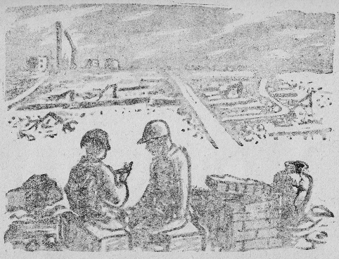
廃墟の子ども 永井 隆 画
死病にかかっている父、二人の幼い孤児予定者――これが如己堂の住人である。この三人の人間が生きてゆく正しい道はどこにあるのか？ ――それを探して苦しみ悩み考え、祈り、努めてきた。私が考えたこと、子供たちがしたこと、子供に話したこと、今わかりそうにないから書いておいて後で読んでもらうこと――それを、そのままこの書に書いた。
これは私の家の記録である。公のものではない。世間一般に通用する考え方、生き方ではないかもしれない。しかし、孤児の親たち――あっと言う間もなく、愛する子を焼け跡に残して亡くなったあの人たちの魂は、あるいは共鳴してくれるかもしれぬと、ひそかに私は思うのである。もし共鳴する魂があれば、この書はその亡き人びとの代弁をつとめるであろう。
ここから見ていると、誠一は瓦のかけらをもっこで担いで捨てに行くところ、カヤノはつるばらの花を有田焼のかけらに盛って独りでままごとをしている。この兄妹が大きくなってから、私の考えをどう批判するだろうか？ 五十年もたてば、今の私よりずっと年上になるのだから、二人寄ってこの書をひらき、お父さんの考えも若かったのう、などと義歯を鳴らして語り合うかもしれないな。